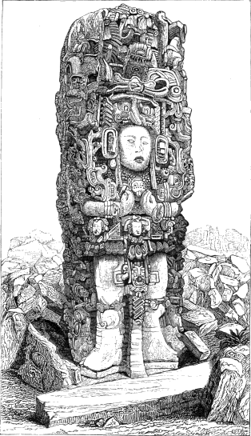

1
SMITHSONIAN INSTITUTION—BUREAU OF ETHNOLOGY
J. W. POWELL, DIRECTOR
ON THE EVOLUTION OF LANGUAGE,
AS EXHIBITED IN
THE SPECIALIZATION OF THE GRAMMATIC PROCESSES,
THE DIFFERENTIATION OF THE PARTS OF SPEECH,
AND THE INTEGRATION OF THE SENTENCE;
FROM A STUDY OF INDIAN LANGUAGES.
BY
J. W. POWELL.
2
CONTENTS.
| Process by combination |
Page 3 |
| Process by vocalic mutation |
5 |
| Process by intonation |
6 |
| Process by placement |
6 |
| Differentiation of the parts of speech |
8 |
3
ON THE EVOLUTION OF LANGUAGE
THE SPECIALIZATION OF THE GRAMMATIC PROCESSES,
THE DIFFERENTIATION OF THE PARTS OF SPEECH,
AND THE INTEGRATION OF THE SENTENCE;
FROM A STUDY OF INDIAN LANGUAGES.
By J. W. POWELL.
Possible ideas and thoughts are vast in number. A distinct word for
every distinct idea and thought would require a vast vocabulary. The
problem in language is to express many ideas and thoughts with
comparatively few words.
Again, in the evolution of any language, progress is from a condition
where few ideas are expressed by a few words to a higher, where many
ideas are expressed by the use of many words; but the number of all
possible ideas or thoughts expressed is increased greatly out of
proportion with the increase of the number of words.
And still again, in all of those languages which have been most
thoroughly studied, and by inference in all languages, it appears that
the few original words used in any language remain as the elements for
the greater number finally used. In the evolution of a language the
introduction of absolutely new material is a comparatively rare
phenomenon. The old material is combined and modified in many ways to
form the new.
How has the small stock of words found as the basis of a language
been thus combined and modified?
The way in which the old materials have been used gives rise to what
will here be denominated THE GRAMMATIC
PROCESSES.
Two or more words may be united to form a new one, or to perform the
office of a new one, and four methods or stages of combination may be
noted.
a. By juxtaposition, where the two words are placed
together and yet remain as distinct words. This method is illustrated in
Chinese, where the words in the combination when taken alone seldom give
a clew to their meaning when placed together.
b. By compounding, where two words are made into one,
in which case the original elements of the new word remain in an
unmodified condition, as in house-top, rain-bow,
tell-tale.
4
c. By agglutination, in which case one or more of the
elements entering into combination to form the new word is somewhat
changed—the elements are fused together. Yet this modification is
not so great as to essentially obscure the primitive words, as in
truthful, where we easily recognize the original words
truth and full; and holiday, in which holy
and day are recognized.
d. By inflection. Here one or more of the elements
entering into the compound has been so changed that it can scarcely be
recognized. There is a constant tendency to economy in speech by which
words are gradually shortened as they are spoken by generation after
generation. In those words which are combinations of others there are
certain elements that wear out more rapidly than others. Where some
particular word is combined with many other different words the tendency
to modify by wear this oft-used element is great. This is more
especially the case where the combined word is used in certain
categories of combinations, as where particular words are used to denote
tense in the verb; thus, did may be used in combination with a
verb to denote past time until it is worn down to the sound of d.
The same wear occurs where particular words are used to form cases in
nouns, and a variety of illustrations might be given. These categories
constitute conjugations and declensions, and for convenience such
combinations may be called paradigmatic. Then the oft-repeated elements
of paradigmatic combinations are apt to become excessively worn and
modified, so that the primitive words or themes to which they are
attached seem to be but slightly changed by the addition. Under these
circumstances combination is called inflection.
As a morphologic process, no well-defined plane of demarkation
between these four methods of combination can be drawn, as one runs into
another; but, in general, words may be said to be juxtaposed when two
words being placed together the combination performs the function of a
new word, while in form the two words remain separate.
Words may be said to be compound when two or more words are combined
to form one, no change being made in either. Words maybe said to be
agglutinated when the elementary words are changed but slightly,
i.e., only to the extent that their original forms are not
greatly obscured; and words may be said to be inflected when in the
combination the oft-repeated element or formative part has been so
changed that its origin is obscured. These inflections are used chiefly
in the paradigmatic combinations.
In the preceding statement it has been assumed that there can be
recognized, in these combinations of inflection, a theme or root,
as it is sometimes called, and a formative element. The formative
element is used with a great many different words to define or qualify
them; that is, to indicate mode, tense, number, person, gender, etc., of
verbs, nouns, and other parts of speech.
When in a language juxtaposition is the chief method of combination,
5
there may also be distinguished two kinds of elements, in some sense
corresponding to themes and formative parts. The theme is a word the
meaning of which is determined by the formative word placed by it; that
is, the theme is a word having many radically different meanings; with
which meaning it is to be understood is determined only by the formative
word, which thus serves as its label. The ways in which the theme words
are thus labeled by the formative word are very curious, but the subject
cannot be entered into here.
When words are combined by compounding, the formative elements cannot
so readily be distinguished from the theme; nor for the purposes under
immediate consideration can compounding be well separated from
agglutination.
When words are combined by agglutination, theme and formative part
usually appear. The formative parts are affixes; and affixes may be
divided into three classes, prefixes, suffixes, and infixes. These
affixes are often called incorporated particles.
In those Indian languages where combination is chiefly by
agglutination, that is, by the use of affixes, i.e., incorporated
particles, certain parts of the conjugation of the verb, especially
those which denote gender, number, and person, are effected by the use
of article pronouns; but in those languages where article pronouns are
not found the verbs are inflected to accomplish the same part of their
conjugation. Perhaps, when we come more fully to study the formative
elements in these more highly inflected languages, we may discover in
such elements greatly modified, i.e., worn out, incorporated
pronouns.
Here, in order to form a new word, one or more of the vowels of the
old word are changed, as in man—men, where an e is
substituted for a; ran—run, where u is
substituted for a; lead—led, where e, with
its proper sound, is substituted for ea with its proper sound.
This method is used to a very limited extent in English. When the
history of the words in which it occurs is studied it is discovered to
be but an instance of the wearing out of the different elements of
combined words; but in the Hebrew this method prevails to a very large
extent, and scholars have not yet been able to discover its origin in
combination as they have in English. It may or may not have been an
original grammatic process, but because of its importance in certain
languages it has been found necessary to deal with it as a distinct and
original process.
6
In English, new words are not formed by this method, yet words are
intoned for certain purposes, chiefly rhetorical. We use the rising
intonation (or inflection, as it is usually called) to indicate
that a question is asked, and various effects are given to speech by the
various intonations of rhetoric. But this process is used in other
languages to form new words with which to express new ideas. In Chinese
eight distinct intonations are found, by the use of which one word may
be made to express eight different ideas, or perhaps it is better to say
that eight words may be made of one.
The place or position of a word may affect its significant use. Thus
in English we say John struck James. By the position of those
words to each other we know that John is the actor, and that James
receives the action.
By the grammatic processes language is organized. Organization
postulates the differentiation of organs and their combination into
integers. The integers of language are sentences, and their organs are
the parts of speech. Linguistic organization, then, consists in the
differentiation of the parts of speech and the integration of the
sentence. For example, let us take the words John, father,
and love. John is the name of an individual; love
is the name of a mental action, and father the name of a person.
We put them together, John loves father, and they express a thought;
John becomes a noun, and is the subject of the sentence;
love becomes a verb, and is the predicant; father a noun,
and is the object; and we now have an organized sentence.
A sentence requires parts of speech, and parts of speech are such
because they are used as the organic elements of a sentence.
The criteria of rank in languages are, first, grade of organization,
i.e., the degree to which the grammatic processes and methods are
specialized, and the parts of speech differentiated; second, sematologic
content, that is, the body of thought which the language is competent to
convey.
The grammatic processes may be used for three purposes:
First, for derivation, where a new word to express a new idea
is made by combining two or more old words, or by changing the vowel of
one word, or by changing the intonation of one word.
7
Second, for modification, a word may be qualified or defined
by the processes of combination, vocalic mutation or intonation.
It should here be noted that the plane between derivation and
qualification is not absolute.
Third, for relation. When words as signs of ideas are used
together to express thought, the relation of the words must be expressed
by some means. In English the relation of words is expressed both by
placement and combination, i.e., inflection for agreement.
It should here be noted that paradigmatic inflections are used for
two distinct purposes, qualification and relation. A word is
qualified by inflection when the idea expressed by the inflection
pertains to the idea expressed by the word inflected; thus a noun is
qualified by inflection when its number and gender are expressed.
A word is related by inflection when the office of the word in the
sentence is pointed out thereby; thus, nouns are related by case
inflections; verbs are related by inflections for gender, number, and
person. All inflection for agreement is inflection for relation.
In English, three of the grammatic processes are highly
specialized.
Combination is used chiefly for derivation, but to some slight
extent for qualification and relation in the paradigmatic categories.
But its use in this manner as compared with many other languages has
almost disappeared.
Vocalic mutation is used to a very limited extent and only by
accident, and can scarcely be said to belong to the English
language.
Intonation is used as a grammatic process only to a limited
extent—simply to assist in forming the interrogative and
imperative modes. Its use here is almost rhetorical; in all other cases
it is purely rhetorical.
Placement is largely used in the language, and is highly
specialized, performing the office of exhibiting the relations of words
to each other in the sentence; i.e., it is used chiefly for
syntactic relation.
Thus one of the four processes does not belong to the English
language; the others are highly specialized.
The purposes for which the processes are used are derivation,
modification, and syntactic relation.
Derivation is accomplished by combination.
Modification is accomplished by the differentiation of
adjectives and adverbs, as words, phrases, and clauses.
Syntactic relation is accomplished by placement. Syntactic
relation must not be confounded with the relation expressed by
prepositions. Syntactic relation is the relation of the parts of speech
to each other as integral parts of a sentence. Prepositions express
relations of thought of another order. They relate words to each other
as words.
Placement relates words to each other as parts of speech.
In the Indian tongues combination is used for all three purposes,
performing the three different functions of derivation, modification,
and relation.
8
Placement, also, is used for relation, and for both lands of relation,
syntactic and prepositional.
With regard, then, to the processes and purposes for which they are
used, we find in the Indian languages a low degree of specialization;
processes are used for diverse purposes, and purposes are accomplished
by diverse processes.
It is next in order to consider to what degree the parts of speech
are differentiated in Indian languages, as compared with English.
Indian nouns are extremely connotive, that is, the name does more
than simply denote the thing to which it belongs; in denoting the object
it also assigns to it some quality or characteristic. Every object has
many qualities and characteristics, and by describing but a part of
these the true office of the noun is but imperfectly performed.
A strictly denotive name expresses no one quality or character, but
embraces all qualities and characters.
In Ute the name for bear is he seizes, or the
hugger. In this case the verb is used for the noun, and in so doing
the Indian names the bear by predicating one of his characteristics.
Thus noun and verb are undifferentiated. In Seneca the north is
the sun never goes there, and this sentence may be used as
adjective or noun; in such cases noun, adjective, verb, and adverb are
found as one vocable or word, and the four parts of speech are
undifferentiated. In the Pavänt language a school-house is called
pó-kûnt-în-îñ-yî-kän. The first part of the word, pó-kûnt,
signifies sorcery is practiced, and is the name given by the
Indians to any writing, from the fact that when they first learned of
writing they supposed it to be a method of practicing sorcery;
în-îñ-yî is the verb signifying to count, and the meaning
of the word has been extended so as to signify to read;
kän signifies wigwam, and is derived from the verb küri,
to stay. Thus the name of the school-house literally signifies
a staying place where sorcery is counted, or where papers are
read. The Pavänt in naming a school-house describes the purpose
for which it is used. These examples illustrate the general
characteristics of Indian nouns; they are excessively connotive;
a simply denotive name is rarely found. In general their name-words
predicate some attribute of the object named, and thus noun, adjective,
and predicant are undifferentiated.
In many Indian languages there is no separate word for eye,
hand, arm, or other parts and organs of the body, but the
word is found with an incorporated or attached pronoun signifying
my hand, my eye; your hand, your eye;
his hand, his eye, etc., as the case may be. If the
Indian, in naming these parts, refers to his own body, he says
my; if he refers to
9
the body of the person to whom he is speaking, he says your,
&c. If an Indian should find a detached foot thrown from the
amputating-table of an army field hospital, he would say something like
this: I have found somebody his foot. The linguistic
characteristic is widely spread, though not universal.
Thus the Indian has no command of a fully differentiated noun
expressive of eye, hand, arm, or other parts and
organs of the body.
In the pronouns we often have the most difficult part of an Indian
language. Pronouns are only to a limited extent independent words.
Among the free pronouns the student must early learn to distinguish
between the personal and the demonstrative. The demonstrative pronouns
are more commonly used. The Indian is more accustomed to say this
person or thing, that person or thing, than he,
she, or it. Among the free personal pronouns the student
may find an equivalent of the pronoun I, another signifying I
and you; perhaps another signifying I and he, and one
signifying we, more than two, including the speaker and those
present; and another including the speaker and persons absent. He will
also find personal pronouns in the second and third person, perhaps with
singular, dual, and plural forms.
To a large extent the pronouns are incorporated in the verbs as
prefixes, infixes, or suffixes. In such cases we will call them article
pronouns. These article pronouns point out with great particularity the
person, number, and gender, both of subject and object, and sometimes of
the indirect object. When the article pronouns are used the personal
pronouns may or may not be used; but it is believed that the personal
pronouns will always be found. Article pronouns may not always be found.
In those languages which are characterized by them they are used alike
when the subject and object nouns are expressed and when they are not.
The student may at first find some difficulty with these article
pronouns. Singular, dual, and plural forms will be found. Sometimes
distinct incorporated particles will be used for subject and object, but
often this will not be the case. If the subject only is expressed, one
particle may be used; if the object only is expressed, another particle;
but if subject and object are expressed an entirely different particle
may stand for both.
But it is in the genders of these article pronouns that the greatest
difficulty may be found. The student must entirely free his mind of the
idea that gender is simply a distinction of sex. In Indian tongues,
genders are usually methods of classification primarily into animate and
inanimate. The animate may be again divided into male and female, but
this is rarely the case. Often by these genders all objects are
classified by characteristics found in their attitudes or supposed
constitution. Thus we may have the animate and inanimate, one or both,
divided into the standing, the sitting, and the
lying; or they may be divided into the watery, the
mushy, the earthy, the stony, the woody, and
the fleshy. The gender of these article pronouns has rarely been
worked out in any
10
language. The extent to which these classifications enter into the
article pronouns is not well known. The subject requires more thorough
study. These incorporated particles are here called article
pronouns. In the conjugation of the verb they take an important part,
and have by some writers been called transitions. Besides
pointing out with particularity the person, number, and gender or the
subject and object, they perform the same offices that are usually
performed by those inflections of the verb that occur to make them agree
in gender, number, and person with the subject. In those Indian
languages where the article pronouns are not found, and the personal
pronouns only are used, the verb is usually inflected to agree with the
subject or object, or both, in the same particulars.
The article pronouns as they point out person, number, gender, and
case of the subject and object, are not simple particles, but are to a
greater or lesser extent compound; their component elements may be
broken apart and placed in different parts of the verb. Again, the
article pronoun in some languages may have its elements combined into a
distinct word in such a manner that it will not be incorporated in the
verb, but will be placed immediately before it. For this reason the term
article pronoun has been chosen rather than attached
pronoun. The older term, transition, was given to them
because of their analogy in function to verbal inflections.
Thus the verb of an Indian language contains within itself
incorporated article pronouns which point out with great particularity
the gender, number, and person of the subject and object. In this manner
verb, pronoun, and adjective are combined, and to this extent these
parts of speech are undifferentiated.
In some languages the article pronoun constitutes a distinct word,
but whether free or incorporated it is a complex tissue of
adjectives.
Again, nouns sometimes contain particles within themselves to
predicate possession, and to this extent nouns and verbs are
undifferentiated.
The verb is relatively of much greater importance in an Indian tongue
than in a civilized language. To a large extent the pronoun is
incorporated in the verb as explained above, and thus constitutes a part
of its conjugation.
Again, adjectives are used as intransitive verbs, as in most Indian
languages there is no verb to be used as a predicant or copula.
Where in English we would say the man is good, the Indian would
say that man good, using the adjective as an intransitive verb,
i.e., as a predicant. If he desired to affirm it in the past
tense, the intransitive verb good, would be inflected, or
otherwise modified, to indicate the tense; and so, in like manner, all
adjectives when used to predicate can be modified to indicate mode,
tense, number, person, &c., as other intransitive verbs.
Adverbs are used as intransitive verbs. In English we may say he
is there; the Indian would say that person there usually
preferring
11
the demonstrative to the personal pronoun. The adverb there
would, therefore, be used as a predicant or intransitive verb, and might
be conjugated to denote different modes, tenses, numbers, persons, etc.
Verbs will often receive adverbial qualifications by the use of
incorporated particles, and, still further, verbs may contain within
themselves adverbial limitations without our being able to trace such
meanings to any definite particles or parts of the verb.
Prepositions are intransitive verbs. In English we may say the hat
is on the table; the Indian would say that hat on table; or
he might change the order, and say that hat table on; but the
preposition on would be used as an intransitive verb to
predicate, and may be conjugated. Prepositions may often be found as
particles incorporated in verbs, and, still further, verbs may contain
within themselves prepositional meanings without our being able to trace
such meanings to any definite particles within the verb. But the verb
connotes such ideas that something is needed to complete its meaning,
that something being a limiting or qualifying word, phrase, or clause.
Prepositions may be prefixed, infixed, or suffixed to nouns,
i.e., they may be particles incorporated in nouns.
Nouns may be used as intransitive verbs under the circumstances when
in English we would use a noun as the complement of a sentence after the
verb to be.
The verb, therefore, often includes within itself subject, direct
object, indirect object, qualifier, and relation-idea. Thus it is that
the study of an Indian language is, to a large extent, the study of its
verbs.
Thus adjectives, adverbs, prepositions, and nouns are used as
intransitive verbs; and, to such extent, adjectives, adverbs,
prepositions, nouns and verbs are undifferentiated.
From the remarks above, it will be seen that Indian verbs often
include within themselves meanings which in English are expressed by
adverbs and adverbial phrases and clauses. Thus the verb may express
within itself direction, manner, instrument, and purpose, one or all, as
the verb to go may be represented by a word signifying go
home; another, go away from home; another, go to a place
other than home; another, go from a place other than home;
one, go from this place, with reference to home; one, to go
up; another, to go down; one, go around; and, perhaps,
there will be a verb go up hill; another, go up a valley;
another, go up a river, etc. Then we may have to go on
foot, to go on horseback, to go in a canoe; still
another, to go for water; another for wood, etc. Distinct
words may be used for all these, or a fewer number used, and these
varied by incorporated particles. In like manner, the English verb to
break may be represented by several words, each of which will
indicate the manner of performing the act or the instrument with which
it is done. Distinct words may be used, or a common word varied with
incorporated particles.
The verb to strike may be represented by several words,
signifying
12
severally to strike with the fist, to strike with a club,
to strike with the open hand, to strike with a whip, to
strike with a switch, to strike with a flat instrument, etc.
A common word may be used with incorporated particles or entirely
different words used.
Mode in an Indian tongue is a rather difficult subject. Modes
analogous to those of civilized tongues are found, and many conditions
and qualifications appear in the verb which in English and other
civilized languages appear as adverbs, and adverbial phrases and
clauses. No plane of separation can be drawn between such adverbial
qualifications and true modes. Thus there may be a form of the verb,
which shows that the speaker makes a declaration as certain,
i.e., an indicative mode; another which shows that the
speaker makes a declaration with doubt, i.e., a dubitative
mode; another that he makes a declaration on hearsay, i.e., a
quotative mode; another form will be used in making a command,
giving an imperative mode; another in imploration, i.e.,
an implorative mode; another form to denote permission,
i.e., a permissive mode; another in negation, i.e.,
a negative mode; another form will be used to indicate that the
action is simultaneous with some other action, i.e., a
simulative mode; another to denote desire or wish that something
be done, i.e., a desiderative mode; another that the
action ought to be done, i.e., an obligative mode; another
that action is repetitive from time to time, i.e., a
frequentative mode; another that action is caused, i.e., a
causative mode, etc.
These forms of the verb, which we are compelled to call modes, are of
great number. Usually with each of them a particular modal particle or
incorporated adverb will be used; but the particular particle which
gives the qualified meaning may not always be discovered; and in one
language a different word will be introduced, wherein another the same
word will be used with an incorporated particle.
It is stated above that incorporated particles may be used to
indicate direction, manner, instrument, and purpose; in fact, any
adverbial qualification whatever may be made by an incorporated particle
instead of an adverb as a distinct word.
No line of demarkation can be drawn between these adverbial particles
and those mentioned above as modal particles. Indeed it seems best to
treat all these forms of the verb arising from incorporated particles as
distinct modes. In this sense, then, an Indian language has a
multiplicity of modes. It should be further remarked that in many cases
these modal or adverbial particles are excessively worn, so that they
may appear as additions or changes of simple vowel or consonant sounds.
When incorporated particles are thus used, distinct adverbial words,
phrases, or clauses may also be employed, and the idea expressed
twice.
In an Indian language it is usually found difficult to elaborate a
system of tenses in paradigmatic form. Many tenses or time particles are
found incorporated in verbs. Some of these time particles are
excessively
13
worn, and may appear rather as inflections than as incorporated
particles. Usually rather distinct present, past, and future tenses are
discovered; often a remote or ancient past, and less often an immediate
future. But great specification of time in relation to the present and
in relation to other time is usually found.
It was seen above that adverbial particles cannot be separated from
modal particles. In like manner tense particles cannot be separated from
adverbial and modal particles.
In an Indian language adverbs are differentiated only to a limited
extent. Adverbial qualifications are found in the verb, and thus there
are a multiplicity of modes and tenses, and no plane of demarcation can
be drawn between mode and tense. From preceding statements it will
appear that a verb in an Indian tongue may have incorporated with it a
great variety of particles, which can be arranged in three general
classes, i.e., pronominal, adverbial, and prepositional.
The pronominal particles we have called article pronouns; they serve
to point out a variety of characteristics in the subject, object, and
indirect object of the verb. They thus subserve purposes which in
English are subserved by differentiated adjectives as distinct parts of
speech. They might, therefore, with some propriety, have been called
adjective particles, but these elements perform another function; they
serve the purpose which is usually called agreement in language;
that is, they make the verb agree with the subject and object, and thus
indicate the syntactic relation between subject, object, and verb. In
this sense they might with propriety have been called relation
particles, and doubtless this function was in mind when some of the
older grammarians called them transitions.
The adverbial particles perform the functions of voice, mode, and
tense, together with many other functions that are performed in
languages spoken by more highly civilized people by differentiated
adverbs, adverbial phrases, and clauses.
The prepositional particles perform the function of indicating a
great variety of subordinate relations, like the prepositions used as
distinct parts of speech in English.
By the demonstrative function of some of the pronominal particles,
they are closely related to adverbial particles, and adverbial particles
are closely related to prepositional particles, so that it will be
sometimes difficult to say of a particular particle whether it be
pronominal or adverbial, and of another particular particle whether it
be adverbial or prepositional.
Thus the three classes of particles are not separated by absolute
planes of demarkation.
The use of these particles as parts of the verb; the use of nouns,
adjectives, adverbs, and prepositions as intransitive verbs; and the
direct use of verbs as nouns, adjectives, and adverbs, make the study of
an Indian tongue to a large extent the study of its verbs.
14
To the extent that voice, mode, and tense are accomplished by the use
of agglutinated particles or inflections, to that extent adverbs and
verbs are undifferentiated.
To the extent that adverbs are found as incorporated particles in
verbs, the two parts of speech are undifferentiated.
To the extent that prepositions are particles incorporated in the
verb, prepositions and verbs are undifferentiated.
To the extent that prepositions are affixed to nouns, prepositions
and nouns are undifferentiated.
In all these particulars it is seen that the Indian tongues belong to
a very low type of organization. Various scholars have called attention
to this feature by describing Indian languages as being holophrastic,
polysynthetic, or synthetic. The term synthetic is perhaps the best, and
may be used as synonymous with undifferentiated.
Indian tongues, therefore, may be said to be highly synthetic in that
their parts of speech are imperfectly differentiated.
In these same particulars the English language is highly organized,
as the parts of speech are highly differentiated. Yet the difference is
one of degree, not of kind.
To the extent in the English language that inflection is used for
qualification, as for person, number, and gender of the noun and
pronoun, and for mode and tense in the verb, to that extent the parts of
speech are undifferentiated. But we have seen that inflection is used
for this purpose to a very slight extent.
There is yet in the English language one important differentiation
which has been but partially accomplished. Verbs as usually considered
are undifferentiated parts of speech; they are nouns and adjectives, one
or both, and predicants. The predicant simple is a distinct part of
speech. The English language has but one, the verb to be, and
this is not always a pure predicant, for it sometimes contains within
itself an adverbial element when it is conjugated for mode and tense,
and a connective element when it is conjugated for agreement. With
adjectives and nouns this verb is used as a predicant. In the passive
voice also it is thus used, and the participles are nouns or adjectives.
In what is sometimes called the progressive form of the active voice
nouns and adjectives are differentiated in the participles, and the verb
“to be” is used as a predicant. But in what is usually denominated the
active voice of the verb, the English language has undifferentiated
parts of speech. An examination of the history of the verb to be
in the English language exhibits the fact that it is coming more and
more to be used as the predicant; and what is usually called the common
form of the active voice is coming more and more to be limited in its
use to special significations.
The real active voice, indicative mode, present tense, first person,
singular number, of the verb to eat, is am eating. The expression
I eat, signifies I am accustomed to eat. So, if we
consider the common form of
15
the active voice throughout its entire conjugation, we discover that
many of its forms are limited to special uses.
Throughout the conjugation of the verb the auxiliaries are
predicants, but these auxiliaries, to the extent that they are modified
for mode, tense, number, and person, contain adverbial and connective
elements.
In like manner many of the lexical elements of the English language
contain more than one part of speech: To ascend is to go
up; to descend is to go down; and to depart is
to go from.
Thus it is seen that the English language is also synthetic in that
its parts of speech are not completely differentiated. The English,
then, differs in this respect from an Indian language only in
degree.
In most Indian tongues no pure predicant has been differentiated, but
in some the verb to be, or predicant, has been slightly
developed, chiefly to affirm, existence in a place.
It will thus be seen that by the criterion of organization Indian
tongues are of very low grade.
It need but to be affirmed that by the criterion of sematologic
content Indian languages are of a very low grade. Therefore the
frequently-expressed opinion that the languages of barbaric peoples have
a more highly organized grammatic structure than the languages of
civilized peoples has its complete refutation.
It is worthy of remark that all paradigmatic inflection in a
civilized tongue is a relic of its barbaric condition. When the parts of
speech are fully differentiated and the process of placement fully
specialized, so that the order of words in sentences has its full
significance, no useful purpose is subserved by inflection.
Economy in speech is the force by which its development has been
accomplished, and it divides itself properly into economy of utterance
and economy of thought. Economy of utterance has had to do with the
phonic constitution of words; economy of thought has developed the
sentence.
All paradigmatic inflection requires unnecessary thought. In the
clause if he was here, if fully expresses the subjunctive
condition, and it is quite unnecessary to express it a second time by
using another form of the verb to be. And so the people who are
using the English language are deciding, for the subjunctive form is
rapidly becoming obsolete with the long list of paradigmatic forms which
have disappeared.
Every time the pronoun he, she, or it is used it
is necessary to think of the sex of its antecedent, though in its use
there is no reason why sex should be expressed, say, one time in ten
thousand. If one pronoun non-expressive of gender were used instead of
the three, with three gender adjectives, then in nine thousand nine
hundred and ninety-nine cases the speaker would be relieved of the
necessity of an unnecessary thought, and in the one case an adjective
would fully express it. But when these inflections are greatly
multiplied, as they are in the Indian languages, alike with the Greek
and Latin, the speaker is compelled in the
16
choice of a word to express his idea to think of a multiplicity of
things which have no connection with that which he wishes to
express.
A Ponka Indian, in saying that a man killed a rabbit, would
have to say the man, he, one, animate, standing, in the nominative case,
purposely killed, by shooting an arrow, the rabbit, he, the one,
animate, sitting, in the objective case; for the form of a verb to kill
would have to be selected, and the verb changes its form by inflection
and incorporated particles to denote person, number, and gender as
animate or inanimate, and gender as standing, sitting, or lying, and
case; and the form of the verb would also express whether the killing
was done accidentally or purposely, and whether it was by shooting or by
some other process, and, if by shooting, whether by bow and arrow, or
with a gun; and the form of the verb would in like manner have to
express all of these things relating to the object; that is, the person,
number, gender, and case of the object; and from the multiplicity of
paradigmatic forms of the verb to kill this particular one would have to
be selected. Perhaps one time in a million it would be the purpose to
express all of these particulars, and in that case the Indian would have
the whole expression in one compact word, but in the nine hundred and
ninety-nine thousand nine hundred and ninety-nine cases all of these
particulars would have to be thought of in the selection of the form of
the verb, when no valuable purpose would be accomplished thereby.
In the development of the English, as well as the French and German,
linguistic evolution has not been in vain.
Judged by these criteria, the English stands alone in the highest
rank; but as a written language, in the way in which its alphabet is
used, the English has but emerged from a barbaric condition.
17
SMITHSONIAN INSTITUTION—BUREAU OF ETHNOLOGY
J. W. POWELL, DIRECTOR
SKETCH
OF THE
MYTHOLOGY OF THE NORTH AMERICAN INDIANS.
BY
J. W. POWELL.
18
CONTENTS.
| The genesis of philosophy |
Page 19 |
| Two grand stages of philosophy |
21 |
| Mythologic philosophy has four stages |
29 |
| Outgrowth from mythologic philosophy |
33 |
The course of evolution in mythologic philosophy |
38 |
| Mythic tales |
43 |
The Cĭn-aú-äv Brothers discuss matters of
importance to the Utes |
44 |
| Origin of the echo |
45 |
| The So´-kûs Wai´-ûn-ats |
47 |
| Ta-vwots has a fight with the sun |
52 |
19
SKETCH OF THE MYTHOLOGY
OF THE
NORTH AMERICAN INDIANS.
By J. W. POWELL.
The wonders of the course of nature have ever challenged attention.
In savagery, in barbarism, and in civilization alike, the mind of man
has sought the explanation of things. The movements of the heavenly
bodies, the change of seasons, the succession of night and day, the
powers of the air, majestic mountains, ever-flowing rivers, perennial
springs, the flight of birds, the gliding of serpents, the growth of
trees, the blooming of flowers, the forms of storm-carved rocks, the
mysteries of life and death, the institutions of society—many are
the things to be explained. The yearning to know is universal.
How and why are everlasting interrogatories profoundly
instinct in humanity. In the evolution of the human mind, the instinct
of cosmic interrogation follows hard upon the instinct of
self-preservation.
In all the operations of nature, man’s weal and woe are involved.
A cold wave sweeps from the north—rivers and lakes are
frozen, forests are buried under snows, and the fierce winds almost
congeal the life-fluids of man himself, and indeed man’s sources of
supply are buried under the rocks of water. At another time the heavens
are as brass, and the clouds come and go with mockery of unfulfilled
promises of rain, the fierce midsummer sun pours its beams upon the
sands, and blasts heated in the furnace of the desert sear the
vegetation; and the fruits, which in more congenial seasons are
subsistence and luxury, shrivel before the eyes of famishing men.
A river rages and destroys the adjacent valley with its flood.
A mountain bursts forth with its rivers of fire, the land is buried
and the people are swept away. Lightning shivers a tree and rends a
skull. The silent, unseen powers of nature, too, are at work bringing
pain or joy, health or sickness, life or death, to mankind. In like
manner man’s welfare is involved in all the institutions of society.
How and why are the questions asked about all these
things—questions springing from the deepest instinct of
self-preservation.
20
In all stages of savage, barbaric, and civilized inquiry, every
question has found an answer, every how has had its thus,
every why its because. The sum of the answers to the
questions raised by any people constitute its philosophy; hence all
peoples have had philosophies consisting of their accepted explanation
of things. Such a philosophy must necessarily result from the primary
instincts developed in man in the early progress of his differentiation
from the beast. This I postulate: if demonstration is necessary,
demonstration is at hand. Not only has every people a philosophy, but
every stage of culture is characterized by its stage of philosophy.
Philosophy has been unfolded with the evolution of the human
understanding. The history of philosophy is the history of human
opinions from the earlier to the later days—from the lower to the
higher culture.
In the production of a philosophy, phenomena must be
discerned, discriminated, classified. Discernment,
discrimination, and classification are the processes by which a
philosophy is developed. In studying the philosophy of a people at any
stage of culture, to understand what such a people entertain as the sum
of their knowledge, it is necessary that we should understand what
phenomena they saw, heard, felt, discerned; what discriminations they
made, and what resemblances they seized upon as a basis for the
classification on which their explanations rested. A philosophy
will be higher in the scale, nearer the truth, as the discernment is
wider, the discrimination nicer, and the classification better.
The sense of the savage is dull compared with the sense of the
civilized man. There is a myth current in civilization to the effect
that the barbarian has highly developed perceptive faculties. It has no
more foundation than the myth of the wisdom of the owl. A savage
sees but few sights, hears but few sounds, tastes but few flavors,
smells but few odors; his whole sensuous life is narrow and blunt, and
his facts that are made up of the combination of sensuous impressions
are few. In comparison, the civilized man has his vision extended away
toward the infinitesimal and away toward the infinite; his perception of
sound is multiplied to the comprehension of rapturous symphonies; his
perception of taste is increased to the enjoyment of delicious viands;
his perception of smell is developed to the appreciation of most
exquisite perfumes; and his facts that are made up of the combination of
sensuous impressions are multiplied beyond enumeration. The stages of
discernment from the lowest savage to the highest civilized man
constitute a series the end of which is far from the beginning.
If the discernment of the savage is little, his discrimination is
less. All his sensuous perceptions are confused; but the confusion of confusion is that universal habit of
savagery—the confusion of the objective with the
subjective—so that the savage sees, hears, tastes, smells, feels
the imaginings of his own mind. Subjectively determined sensuous
processes are diseases in civilization, but normal, functional methods
in savagery.
21
The savage philosopher classifies by obvious
resemblances—analogic characters. The civilized philosopher
classifies by essential affinitives—homologic
characteristics—and the progress of philosophy is marked by
changes from analogic categories to homologic categories.
There are two grand stages of philosophy—the mythologic and
scientific. In the first, all phenomena are explained by analogies
derived from subjective human experiences; in the latter, phenomena are
explained as orderly successions of events.
In sublime egotism, man first interprets the cosmos as an extension
of himself; he classifies the phenomena of the outer word by their
analogies with subjective phenomena; his measure of distance is his own
pace, his measure of time his own sleep, for he says, “It is a thousand
paces to the great rock,” or, “It is a hundred sleeps to the great
feast.” Noises are voices, powers are hands, movements are made afoot.
By subjective examination discovering in himself will and design, and by
inductive reason discovering will and design in his fellow men and in
animals, he extends the induction to all the cosmos, and there discovers
in all things will and design. All phenomena are supposed to be the acts
of some one, and that some one having will and purpose. In mythologic
philosophy the phenomena of the outer physical world are supposed to be
the acts of living, willing, designing personages. The simple are
compared with and explained by the complex. In scientific philosophy,
phenomena are supposed to be children of antecedent phenomena, and so
far as science goes with its explanation they are thus interpreted. Man
with the subjective phenomena gathered about him is studied from an
objective point of view, and the phenomena of subjective life are
relegated to the categories established in the classification of the
phenomena of the outer world; thus the complex is studied by resolving
it into its simple constituents.
There is an unknown known, and there is a known unknown. The unknown
known is the philosophy of savagery; the known unknown is the philosophy
of civilization. In those stages of culture that we call savagery and
barbarism, all things are known—supposed to be known; but when at
last something is known, understood, explained, then to those who have
that knowledge in full comprehension all other things become unknown.
Then is ushered in the era of investigation and discovery; then science
is born; then is the beginning of civilization. The philosophy of
savagery is complete; the philosophy of civilization fragmentary. Ye men
of science, ye wise fools, ye have discovered the law
22
of gravity, but ye cannot tell what gravity is. But savagery has a cause
and a method for all things; nothing is left unexplained.
In the lower stages of savagery the cosmos is bounded by the great
plain of land and sea on which we tread, and the firmament, the azure
surface above, set with brilliants; and beyond is an abyss
of—nothing. Within these bounds all things are known, all things
are explained; there are no mysteries but the whims of the gods. But
when the plain on which we tread becomes a portion of the surface of a
great globe, and the domed firmament becomes the heavens, stretching
beyond Alcyone and Sirius, with this enlargement of the realm of
philosophy the verity of philosophy is questioned. The savage is a
positive man; the scientist is a doubting man.
The opinions of a savage people are childish. Society grows! Some say
society develops; others that society evolves; but, somehow, I like
to say it grows. The history of the discovery of growth is a large part
of the history of human culture. That individuals grow, that the child
grows to be a man, the colt a horse, the scion a tree, is easily
recognized, though with unassisted eye the processes of growth are not
discovered. But that races grow—races of men, races of animals,
races of plants, races or groups of worlds—is a very late
discovery, and yet all of us do not grasp so great a thought. Consider
that stage of culture where the growth of individuals is not fully
recognized. That stage is savagery. To-day the native races of North
America are agitated by discussions over that great philosophic
question, “Do the trees grow or were they created?” That the grass grows
they admit, but the orthodox philosophers stoutly assert that the forest
pines and the great sequoias were created as they are.
Thus in savagery the philosophers dispute over the immediate creation
or development of individuals—in civilization over the immediate
creation or development of races. I know of no single fact that
better illustrates the wide difference between these two stages of
culture. But let us look for other terms of comparison. The scalping
scene is no more the true picture of savagery than the bayonet charge of
civilization. Savagery is sylvan life. Contrast Ka-ni-ga with New
York. Ka-ni-ga is an Indian village in the Rocky Mountains. New
York is, well—New York. The home in the forest is a shelter of
boughs; the home in New York is a palace of granite. The dwellers in
Ka-ni-ga are clothed in the skins of animals, rudely tanned,
rudely wrought, and colored with daubs of clay. For the garments of New
York, flocks are tended, fields are cultivated, ships sail on the sea,
and men dig in the mountains for dye-stuffs stored in the rocks. The
industries of Ka-ni-ga employ stone knives, bone awls, and human
muscle; the industries of New York employ the tools of the trades, the
machinery of the manufactories, and the power of the sun—for
water-power is but sunshine, and the coal mine is but a pot of pickeled
sunbeams.
23
Even the nursery rhymes are in contrast; the prattler in New York
says:
Daffy down dilly
Has come up to town,
With a green petticoat
And a blue gown;
but in savagery the outer and nether garments are not yet
differentiated; and more: blue and green are not differentiated, for the
Indian has but one name for the two; the green grass and the blue
heavens are of the same hue in the Indian tongue. But the nursery tales
of Ka-ni-ga are of the animals, for the savages associate with
the animals on terms of recognized equality; and this is what the
prattler in Ka-ni-ga says:
The poor little bee
That lives in the tree,
The poor little bee
That lives in the tree,
Has only one arrow
In his quiver.
The arts and industries of savagery and civilization are not in
greater contrast than their philosophy. To fully present to you the
condition of savagery, as illustrated in their philosophy, three
obstacles appear. After all the years I have spent among the Indians in
their mountain villages, I am not certain that I have sufficiently
divorced myself from the thoughts and ways of civilization to properly
appreciate their childish beliefs. The second obstacle subsists in your
own knowledge of the methods and powers of nature, and the ways of
civilized society; and when I attempt to tell you what an Indian thinks,
I fear you will never fully forget what you know, and thus you will
be led to give too deep a meaning to a savage explanation; or, on the
other hand, contrasting an Indian concept with your own, the manifest
absurdity will sound to you as an idle tale too simple to deserve
mention, or too false to deserve credence. The third difficulty lies in
the attempt to put savage thoughts into civilized language; our words
are so full of meaning, carry with them so many great thoughts and
collateral ideas.
Some examples of the philosophic methods belonging to widely
separated grades of culture may serve to make the previous statements
clearer.
Wind.—The Ute philosopher discerns that men and
animals breathe. He recognizes vaguely the phenomena of the wind, and
discovers its resemblance to breath, and explains the winds by
relegating them to the class of breathings. He declares that there is a
monster beast in the north that breathes the winter winds, and another
in the south, and another in the east, and another in the west. The
facts relating to winds are but partially discerned; the philosopher has
not yet discovered that there is an earth-surrounding atmosphere. He
fails in making the proper discriminations. His relegation of the winds
to the class of
24
breathings is analogic, but not homologic. The basis of his philosophy
is personality, and hence he has four wind-gods.
The philosopher of the ancient Northland discovered that he could
cool his brow with a fan, or kindle a flame, or sweep away the dust with
the wafted air. The winds also cooled his brow, the winds also swept
away the dust and kindled the fire into a great conflagration, and when
the wind blew he said, “Somebody is fanning the waters of the fiord,” or
“Somebody is fanning the evergreen forests,” and he relegated the winds
to the class of fannings, and he said, “The god Hræsvelger, clothed with
eagle-plumes, is spreading his wings for flight, and the winds rise from
under them.”
The early Greek philosopher discovered that air may be imprisoned in
vessels or move in the ventilation of caves, and he recognized wind as
something more than breath, something more than fanning, something that
can be gathered up and scattered abroad, and so when the winds blew he
said, “The sacks have been untied,” or “The caves have been opened.”
The philosopher of civilization, has discovered that breath, the
fan-wafted breeze, the air confined in vessels, the air moving in
ventilation, that these are all parts of the great body of air which
surrounds the earth, all in motion, swung by the revolving earth, heated
at the tropics, cooled at the poles, and thus turned into
counter-currents and again deflected by a thousand geographic features,
so that the winds sweep down valleys, eddy among mountain crags, or waft
the spray from the crested billows of the sea, all in obedience to
cosmic laws. The facts discerned are many, the discriminations made are
nice, and the classifications based on true homologies, and we have the
science of meteorology, which exhibits an orderly succession of events
even in the fickle winds.
Sun and Moon.—The Ute philosopher declares the
sun to be a living personage, and explains his passage across the
heavens along an appointed way by giving an account of a fierce personal
conflict between Tä-vi, the sun-god, and Ta-wăts, one of
the supreme gods of his mythology.
In that long ago, the time to which all mythology refers, the sun
roamed the earth at will. When he came too near with his fierce heat the
people were scorched, and when he hid away in his cave for a long time,
too idle to come forth, the night was long and the earth cold. Once upon
a time Ta-wăts, the hare-god, was sitting with his family by the
camp-fire in the solemn woods, anxiously waiting for the return of
Tä-vi, the wayward sun-god. Wearied with long watching, the
hare-god fell asleep, and the sun-god came so near that he scorched the
naked shoulder of Ta-wăts. Foreseeing the vengeance which would
be thus provoked, he fled back to his cave beneath the earth.
Ta-wăts awoke in great anger, and speedily determined to go and
fight the sun-god. After a long journey of many adventures the hare-god
came to the brink
25
of the earth, and there watched long and patiently, till at last the
sun-god coming out he shot an arrow at his face, but the fierce heat
consumed the arrow ere it had finished its intended course; then another
arrow was sped, but that was also consumed; and another, and still
another, till only one remained in his quiver, but this was the magical
arrow that had never failed its mark. Ta-wăts, holding it in his
hand, lifted the barb to his eye and baptized it in a divine tear; then
the arrow was sped and struck the sun-god full in the face, and the sun
was shivered into a thousand fragments, which fell to the earth, causing
a general conflagration. Then Ta-wăts, the hare-god, fled before
the destruction he had wrought, and as he fled the burning earth
consumed his feet, consumed his legs, consumed his body, consumed his
hands and his arms—all were consumed but the head alone, which
bowled across valleys and over mountains, fleeing destruction from the
burning earth until at last, swollen with heat, the eyes of the god
burst and the tears gushed forth in a flood which spread over the earth
and extinguished the fire. The sun-god was now conquered, and he
appeared before a council of the gods to await sentence. In that long
council were established the days and the nights, the seasons and the
years, with the length thereof, and the sun was condemned to travel
across the firmament by the same trail day after day till the end of
time.
In this same philosophy we learn that in that ancient time a council
of the gods was held to consider the propriety of making a moon, and at
last the task was given to Whippoorwill, a god of the night, and a
frog yielded himself a willing sacrifice for this purpose, and the
Whippoorwill, by incantations, and other magical means, transformed the
frog into the new moon. The truth of this origin of the moon is made
evident to our very senses; for do we not see the frog riding the moon
at night, and the moon is cold, because the frog from which it was made
was cold?
The philosopher of Oraibi tells us that when the people
ascended by means of the magical tree which constituted the ladder from
the lower world to this, they found the firmament, the ceiling of this
world, low down upon the earth—the floor of this world.
Matcito, one of their gods, raised the firmament on his shoulders
to where it is now seen. Still the world was dark, as there was no sun,
no moon, and no stars. So the people murmured because of the darkness
and the cold. Matcito said, “Bring me seven maidens,” and they
brought him seven maidens; and he said, “Bring me seven baskets of
cotton-bolls,” and they brought him seven baskets of cotton-bolls; and
he taught the seven maidens to weave a magical fabric from the cotton,
and when they had finished it he held it aloft, and the breeze carried
it away toward the firmament, and in the twinkling of an eye it was
transformed into a beautiful full-orbed moon, and the same breeze caught
the remnants of flocculent cotton which the maidens had scattered during
their work,
26
and carried them aloft, and they were transformed into bright stars. But
still it was cold and the people murmured again, and Matcito
said, “Bring me seven buffalo robes,” and they brought him seven buffalo
robes, and from the densely matted hair of the robes he wove another
wonderful fabric, which the storm carried away into the sky, and it was
transformed into the full-orbed sun. Then Matcito appointed times
and seasons and ways for the heavenly bodies, and the gods of the
firmament have obeyed the injunctions of Matcito from the day of
their creation to the present.
The Norse philosopher tells us that Night and Day, each, has a horse
and a car, and they drive successively one after the other around the
world in twenty-four hours. Night rides first with her steed named
Dew-hair, and every morning as he ends his course he bedews the earth
with foam from his bit. The steed driven by Day is Shining-hair. All the
sky and earth glisten with the light of his mane. Jarnved, the great
iron-wood forest lying to the east of Midgard, is the abode of a race of
witches. One monster witch is the mother of many sons in the form of
wolves, two of which are Skol and Hate. Skol is the wolf that would
devour the maiden Sun, and she daily flies from the maw of the terrible
beast, and the moon-man flies from the wolf Hate.
The philosopher of Samos tells us that the earth is surrounded by
hollow crystalline spheres set one within another, and all revolving at
different rates from east to west about the earth, and that the sun is
set in one of these spheres and the moon in another.
The philosopher of civilization tells us that the sun is an
incandescent globe, one of the millions afloat in space. About this
globe the planets revolve, and the sun and planets and moons were formed
from nebulous matter by the gradual segregation of their particles
controlled by the laws of gravity, motion, and affinity.
The sun, traveling by an appointed way across the heavens with the
never-ending succession of day and night, and the ever-recurring train
of seasons, is one of the subjects of every philosophy. Among all
peoples, in all times, there is an explanation of these phenomena, but
in the lowest stage, way down in savagery, how few the facts discerned,
how vague the discriminations made, how superficial the resemblances by
which the phenomena are classified! In this stage of culture, all the
daily and monthly and yearly phenomena which come as the direct result
of the movements of the heavenly bodies are interpreted as the doings of
some one—some god acts. In civilization the philosopher presents
us the science of astronomy with all its accumulated facts of magnitude,
and weights, and orbits, and distances, and velocities—with all
the nice discriminations of absolute, relative, and apparent motions;
and all these facts he is endeavoring to classify in homologic
categories, and the evolutions and revolutions of the heavenly bodies
are explained as an orderly succession of events.
Rain.—The Shoshoni philosopher believes the domed
firmament to be
27
ice, and surely it is the very color of ice, and he believes further
that a monster serpent-god coils his huge back to the firmament and with
his scales abrades its face and causes the ice-dust to fall upon the
earth. In the winter-time it falls as snow, but in the summer-time it
melts and falls as rain, and the Shoshoni philosopher actually sees the
serpent of the storm in the rainbow of many colors.
The Oraibi philosopher who lives in a pueblo is
acquainted with architecture, and so his world is seven-storied. There
is a world below and five worlds above this one. Muĭñwa, the
rain-god, who lives in the world immediately above, dips his great
brush, made of feathers of the birds of the heavens, into the lakes of
the skies and sprinkles the earth with refreshing rain for the
irrigation of the crops tilled by these curious Indians who live on the
cliffs of Arizona. In winter, Muĭñwa crushes the ice of the lakes
of the heavens and scatters it over the earth, and we have a
snow-fall.
The Hindoo philosopher says that the lightning-bearded Indra breaks
the vessels that hold the waters of the skies with his thunder-bolts,
and the rains descend to irrigate the earth.
The philosopher of civilization expounds to us the methods by which
the waters are evaporated from the land and the surface of the sea, and
carried away by the winds, and gathered into clouds to be discharged
again upon the earth, keeping up forever that wonderful circulation of
water from the heavens to the earth and from the earth to the
heavens—that orderly succession of events in which the waters
travel by river, by sea, and by cloud.
Rainbow.—In Shoshoni, the rainbow is a beautiful
serpent that abrades the firmament of ice to give us snow and rain. In
Norse, the rainbow is the bridge Bifrost spanning the space between
heaven and earth. In the Iliad, the rainbow is the goddess Iris, the
messenger of the King of Olympus. In Hebrew, the rainbow is the witness
to a covenant. In science, the rainbow is an analysis of white light
into its constituent colors by the refraction of raindrops.
Falling stars.—In Ute, falling stars are the
excrements of dirty little star-gods. In science—well, I do
not know what falling stars are in science. I think they are
cinders from the furnace where the worlds are forged. You may call this
mythologic or scientific, as you please.
Migration of birds.—The Algonkian philosopher
explains the migration of birds by relating the myth of the combat
between Ka-bĭ-bo-no-kĭ and Shiñgapis, the prototype or
progenitor of the water-hen, one of their animal gods. A fierce
battle raged between Ka-bĭ-bo-no-kĭ and Shiñgapis, but the
latter could not be conquered. All the birds were driven from the land
but Shiñgapis; and then was it established that whenever in the
future Winter-maker should come with his cold winds, fierce snows, and
frozen waters, all the birds should leave for the south except
Shiñgapis and his friends. So the birds that spend their winters
28
north are called by the Algonkian philosophers “the friends of
Shiñgapis.”
In contrast to this explanation of the flight of birds may be placed
the explanation of the modern evolutionist, who says that the birds
migrate in quest of abundance of food and a genial climate, guided by an
instinct of migration, which is an accumulation of inherited
memories.
Diversity of languages.—The Kaibäbĭt philosopher
accounts for the diversity of languages in this manner: Sĭ-tcom´-pa
Ma-só-ĭts, the grandmother goddess of the sea, brought up mankind
from beneath the waves in a sack, which she delivered to the
Cĭn-aú-äv brothers, the great wolf-gods of his mythology, and
told them to carry it from the shores of the sea to the Kaibab Plateau,
and then to open it; but they were by no means to open the package ere
their arrival, lest some great disaster should befall. The curiosity of
the younger Cĭn-aú-äv overcame him, and he untied the sack, and
the people swarmed out; but the elder Cĭn-aú-äv, the wiser god,
ran back and closed the sack while yet not all the people had escaped,
and they carried the sack, with its remaining contents, to the plateau,
and there opened it. Those that remained in the sack found a beautiful
land—a great plateau covered with mighty forests, through which
elk, deer, and antelope roamed in abundance, and many mountain-sheep
were found on the bordering crags; piv, the nuts of the edible
pine, they found on the foot-hills, and us, the fruit of the
yucca, in sunny glades; and nänt, the meschal crowns, for their
feasts; and tcu-ar, the cactus-apple, from which to make their
wine; reeds grew about the lakes for their arrow-shafts; the rocks were
full of flints for their barbs and knives, and away down in the cañon
they found a pipe-stone quarry, and on the hills they found
är-a-ûm-pĭv, their tobacco. O, it was a beautiful land that
was given to these, the favorites of the gods! The descendants of
these people are the present Kaibäbĭts of northern Arizona. Those
who escaped by the way, through the wicked curiosity of the younger
Cĭn-aú-äv, scattered over the country and became Navajos,
Mokis, Sioux, Comanches, Spaniards,
Americans—poor, sorry fragments of people without the original
language of the gods, and only able to talk in imperfect jargons.
The Hebrew philosopher tells us that on the plains of Shinar the
people of the world were gathered to build a city and erect a tower, the
summit of which should reach above the waves of any flood Jehovah might
send. But their tongues were confused as a punishment for their
impiety.
The philosopher of science tells us that mankind was widely scattered
over the earth anterior to the development of articulate speech, that
the languages of which we are cognizant sprang from innumerable centers
as each little tribe developed its own language, and that in the study
of any language an orderly succession of events may be discovered in its
evolution from a few simple holophrastic locutions to a complex language
with a multiplicity of words and an elaborate grammatic structure, by
the differentiation of the parts of speech and the integration of the
sentence.
29
A cough.—A man coughs. In explanation the Ute
philosopher would tell us that an u-nú-pĭts—a pygmy spirit
of evil—had entered the poor man’s stomach, and he would charge
the invalid with having whistled at night; for in their philosophy it is
taught that if a man whistles at night, when the pygmy spirits are
abroad, one is sure to go through the open door into the stomach, and
the evidence of this disaster is found in the cough which the
u-nú-pĭts causes. Then the evil spirit must be driven out, and
the medicine-man stretches his patient on the ground and scarifies him
with the claws of eagles from head to heel, and while performing the
scarification a group of men and women stand about, forming a chorus,
and medicine-man and chorus perform a fugue in gloomy ululation, for
these wicked spirits will depart only by incantations and
scarifications.
In our folk-lore philosophy a cough is caused by a “cold,” whatever
that may be—a vague entity—that must be treated first
according to the maxim “Feed a cold and starve a fever,” and the “cold”
is driven away by potations of bitter teas.
In our medical philosophy a cough may be the result of a clogging of
the pores of the skin, and is relieved by clearing those flues that
carry away the waste products of vital combustion.
These illustrations are perhaps sufficient to exhibit the principal
characteristics of the two methods of philosophy, and, though they cover
but narrow fields, it should be remembered that every philosophy deals
with the whole cosmos. An explanation of all things is sought—not
alone the great movements of the heavens, or the phenomena that startle
even the unthinking, but every particular which is observed. Abstractly,
the plane of demarkation between the two methods of philosophy can be
sharply drawn, but practically we find them strangely mixed; mythologic
methods prevail in savagery and barbarism, and scientific methods
prevail in civilization. Mythologic philosophies antedate scientific
philosophies. The thaumaturgic phases of mythology are the embryonic
stages of philosophy, science being the fully developed form. Without
mythology there could be no science, as without childhood there could be
no manhood, or without embryonic conditions there could be no ultimate
forms.
Mythologic philosophy is the subject with which we deal. Its method,
as stated in general terms, is this: All phenomena of the outer
objective world are interpreted by comparison with those of the inner
subjective world.
Whatever happens, some one does it; that some one has a will and
works as he wills. The basis of the philosophy is personality. The
persons who do the things which we observe in the phenomena of the
universe are the gods of mythology—the cosmos is a
pantheon. Under
30
this system, whatever may be the phenomenon observed, the philosopher
asks, “Who does it?” and “Why?” and the answer comes, “A god with
his design.” The winds blow, and the interrogatory is answered, “Æolus
frees them from the cave to speed the ship of a friend, or destroy the
vessel of a foe.” The actors in mythologic philosophy are gods.
In the character of these gods four stages of philosophy may be
discovered. In the lowest and earliest stage everything has life;
everything is endowed with personality, will, and design; animals are
endowed with all the wonderful attributes of mankind; all inanimate
objects are believed to be animate; trees think and speak; stones have
loves and hates; hills and mountains, springs and rivers, and all the
bright stars, have life—everything discovered objectively by the
senses is looked upon subjectively by the philosopher and endowed with
all the attributes supposed to be inherent in himself. In this stage of
philosophy everything is a god. Let us call it hecastotheism.
In the second stage men no longer attribute life indiscriminately to
inanimate things; but the same powers and attributes recognized by
subjective vision in man are attributed to the animals by which he is
surrounded. No line of demarkation is drawn between man and beast; all
are great beings endowed with wonderful attributes. Let us call this
stage zoötheism, when men worship beasts. All the phenomena of
nature are the doings of these animal gods; all the facts of nature, all
the phenomena of the known universe, all the institutions of humanity
known to the philosophers of this stage, are accounted for in the
mythologic history of these zoömorphic gods.
In the third stage a wide gulf is placed between man and the lower
animals. The animal gods are dethroned, and the powers and phenomena of
nature are personified and deified. Let us call this stage
physitheism. The gods are strictly anthropomorphic, having the
form as well as the mental, moral, and social attributes of men. Thus we
have a god of the sun, a god of the moon, a god of the air,
a god of dawn, and a deity of the night.
In the fourth stage, mental, moral, and social characteristics are
personified and deified. Thus we have a god of war, a god of love,
a god of revelry, a god of plenty, and like personages who
preside over the institutions and occupations of mankind. Let us call
this psychotheism. With the mental, moral, and social
characteristics in these gods are associated the powers of nature; and
they differ from nature-gods chiefly in that they have more distinct
psychic characteristics.
Psychotheism, by the processes of mental integration, developes in
one direction into monotheism, and in the other into pantheism. When the
powers of nature are held predominant in the minds of the philosophers
through whose cogitations this evolution of theism is carried on,
pantheism, as the highest form of psychotheism, is the final result; but
when the moral qualities are held in highest regard in the minds of the
men in whom this process of evolution is carried on, monotheism,
or a god
31
whose essential characteristics are moral qualities, is the final
product. The monotheistic god is not nature, but presides over and
operates through nature. Psychotheism has long been recognized. All of
the earlier literature of mankind treats largely of these gods, for it
is an interesting fact that in the history of any civilized people, the
evolution of psychotheism is approximately synchronous with the
invention of an alphabet. In the earliest writings of the Egyptians, the
Hindoos, and the Greeks, this stage is discovered, and Osiris, Indra,
and Zeus are characteristic representatives. As psychotheism and written
language appear together in the evolution of culture, this stage of
theism is consciously or unconsciously a part of the theme of all
written history.
The paleontologist, in studying the rocks of the hill and the cliffs
of the mountain, discovers, in inanimate stones, the life-forms of the
ancient earth. The geologist, in the study of the structure of valleys
and mountains, discovers groups of facts that lead him to a knowledge of
more ancient mountains and valleys and seas, of geographic features long
ago buried, and followed by a new land with new mountains and valleys,
and new seas. The philologist, in studying the earliest writings of a
people, not only discovers the thoughts purposely recorded in those
writings, but is able to go back in the history of the people many
generations, and discover with even greater certainty the thoughts of
the more ancient people who made the words. Thus the writings of the
Greeks, the Hindoos, and the Egyptians, that give an account of their
psychic gods, also contain a description of an earlier theism
unconsciously recorded by the writers themselves. Psychotheism prevailed
when the sentences were coined, physitheism when the words were coined.
So the philologist discovers physitheism in all ancient literature. But
the verity of that stage of philosophy does not rest alone upon the
evidence derived from the study of fossil philosophies through the
science of philology. In the folk-lore of every civilized people having
a psychotheistic philosophy, an earlier philosophy with nature-gods is
discovered.
The different stages of philosophy which I have attempted to
characterize have never been found in purity. We always observe
different methods of explanation existing side by side, and the type of
a philosophy is determined by the prevailing characteristics of its
explanation of phenomena. Fragments of the earlier are always found side
by side with the greater body of the later philosophy. Man has never
clothed himself in new garments of wisdom, but has ever been patching
the old, and the old and the new are blended in the same pattern, and
thus we have atavism in philosophy. So in the study of any philosophy
which has reached the psychotheistic age, patches of the earlier
philosophy are always seen. Ancient nature-gods are found to be living
and associating with the supreme psychic deities. Thus in anthropologic
science there are three ways by which to go back in the history of any
civilized people and learn of its barbaric physitheism. But of the
verity of this stage we have further evidence. When Christianity was
carried north
32
from Central Europe, the champions of the new philosophy, and its
consequent religion, discovered, among those who dwelt by the glaciers
of the north, a barbaric philosophy which they have preserved to
history in the Eddas and Sagas, and Norse literature is full of a
philosophy in a transition state, from physitheism to psychotheism; and,
mark! the people discovered in this transition state were inventing an
alphabet—they were carving Runes. Then a pure physitheism was
discovered in the Aztec barbarism of Mexico; and elsewhere on the globe
many people were found in that stage of culture to which this philosophy
properly belongs. Thus the existence of physitheism as a stage of
philosophy is abundantly attested. Comparative mythologists are agreed
in recognizing these two stages. They might not agree to throw all of
the higher and later philosophies into one group, as I have done, but
all recognize the plane of demarkation between the higher and the lower
groups as I have drawn it. Scholars, too, have come essentially to an
agreement that physitheism is earlier and older than psychotheism.
Perhaps there may be left a “doubting Thomas” who believes that the
highest stage of psychotheism—that is, monotheism—was the
original basis for the philosophy of the world, and that all other forms
are degeneracies from that primitive and perfect state. If there be such
a man left, to him what I have to say about philosophy is blasphemy.
Again, all students of comparative philosophy, or comparative
mythology, or comparative religion, as you may please to approach this
subject from different points of view, recognize that there is something
else; that there are philosophies, or mythologies, or religions, not
included in the two great groups. All that something else has been
vaguely called fetichism. I have divided it into two parts,
hecastotheism and zoötheism. The verity of zoötheism as a
stage of philosophy rests on abundant evidence. In psychotheism it
appears as devilism in obedience to a well-known law of
comparative theology, viz, that the gods of a lower and superseded stage
of culture oftentimes become the devils of a higher stage. So in the
very highest stages of psychotheism we find beast-devils. In Norse
mythology, we have Fenris the wolf, and Jormungandur the serpent.
Dragons appear in Greek mythology, the bull is an Egyptian god,
a serpent is found in the Zendavesta; and was there not a scaly
fellow in the garden of Eden? So common are these beast-demons in the
higher mythologies that they are used in every literature as rhetorical
figures. So we find, as a figure of speech, the great red dragon with
seven heads and ten horns, with tail that with one brush sweeps away a
third of the stars of heaven. And wherever we find
nature-worship we find it accompanied with beast-worship. In the study
of higher philosophies, having learned that lower philosophies often
exist side by side with them, we might legitimately conclude that a
philosophy based upon animal gods had existed previous to the
development of physitheism; and philologic research leads to the same
conclusion. But we are not left to base this conclusion upon an
33
induction only, for in the examination of savage philosophies we
actually discover zoötheism in all its proportions. Many of the Indians
of North America, and many of South America, and many of the tribes of
Africa, are found to be zoötheists. Their supreme gods are
animals—tigers, bears, wolves, serpents, birds. Having discovered
this, with a vast accumulation of evidence, we are enabled to carry
philosophy back one stage beyond physitheism, and we can confidently
assert that all the philosophies of civilization have come up through
these three stages.
And yet, there are fragments of philosophy discovered which are not
zoötheistic, physitheistic, nor psychotheistic. What are they? We find
running through all three stages of higher philosophy that phenomena are
sometimes explained by regarding them as the acts of persons who do not
belong to any of the classes of gods found in the higher stages. We find
fragments of philosophy everywhere which seem to assume that all
inanimate nature is animate; that mountains and hills, and rivers and
springs, that trees and grasses, that stones, and all fragments of
things are endowed with life and with will, and act for a purpose. These
fragments of philosophy lead to the discovery of hecastotheism.
Philology also leads us back to that state when the animate and the
inanimate were confounded, for the holophrastic roots into which words
are finally resolved show us that all inanimate things were represented
in language as actors. Such is the evidence on which we predicate the
existence of hecastotheism as a veritable stage of philosophy. Unlike
the three higher stages, it has no people extant on the face of the
globe, known to be in this stage of culture. The philosophies of many of
the lowest tribes of mankind are yet unknown, and hecastotheism may be
discovered; but at the present time we are not warranted in saying that
any tribe entertains this philosophy as its highest wisdom.
The three stages of mythologic philosophy that are still extant in
the world must be more thoroughly characterized, and the course of their
evolution indicated. But in order to do this clearly, certain outgrowths
from mythologic philosophy must be explained—certain theories and
practices that necessarily result from this philosophy, and that are
intricately woven into the institutions of mankind.
Ancientism.—The first I denominate ancientism. Yesterday
was better than to-day. The ancients were wiser that we. This belief in
a better day and a better people in the elder time is almost universal
among mankind. A belief so widely spread, so profoundly
entertained, must have for its origin some important facts in the
constitution or history of mankind. Let us see what they are.
34
In the history of every individual the sports and joys of childhood
are compared and contrasted with the toils and pains of old age. Greatly
protracted life, in savagery and barbarism, is not a boon to be craved.
In that stage of society where the days and the years go by with little
or no provision for a time other than that which is passing, the old
must go down to the grave through poverty and suffering. In that stage
of culture to-morrow’s bread is not certain, and to-day’s bread is often
scarce. In civilization plenty and poverty live side by side; the palace
and the hovel are on the same landscape; the rich and poor elbow each
other on the same street; but in savagery plenty and poverty come with
recurring days to the same man, and the tribe is rich to-day and poor
to-morrow, and the days of want come in every man’s history; and when
they come the old suffer most, and the burden of old age is oppressive.
In youth activity is joy; in old age activity is pain. So wonder, then,
that old age loves youth, or that to-day loves yesterday, for the
instinct is born of the inherited experiences of mankind.
But there is yet another and more potent reason for ancientism. That
tale is the most wonderful that has been most repeated, for the breath
of speech is the fertilizer of story. Hence, the older the story the
greater its thaumaturgics. Thus, yesterday is greater than to-day by
natural processes of human exaggeration. Again, that is held to be most
certain, and hence most sacred, which has been most often affirmed.
A Brahman was carrying a goat to the altar. Three thieves would
steal it. So they placed themselves at intervals along the way by which
the pious Brahman would travel. When the venerable man came to the first
thief he was accosted: “Brahman, why do you carry a dog?” Now,
a dog is an unclean beast which no Brahman must touch. And the
Brahman, after looking at his goat, said: “You do err; this is a goat.”
And when the old man reached the second thief, again he was accosted:
“Brahman, why do you carry a dog?” So the Brahman put his goat on the
ground, and after narrowly scrutinizing it, he said: “Surely this is a
goat,” and went on his way. When he came to the third thief he was once
more accosted: “Brahman, why do you carry a dog?” Then the Brahman,
having thrice heard that his goat was a dog, was convinced, and throwing
it down, he fled to the temple for ablution, and the thieves had a
feast.
The child learns not for himself, but is taught, and accepts as true
that which is told, and a propensity to believe the affirmed is
implanted in his mind. In every society some are wise and some are
foolish, and the wise are revered, and their affirmations are accepted.
Thus, the few lead the multitude in knowledge, and the propensity to
believe the affirmed started in childhood is increased in manhood in the
great average of persons constituting society, and these propensities
are inherited from generation to generation, until we have a cumulation
of effects.
The propagation of opinions by affirmation, the cultivation of the
propensity to believe that which has been affirmed many times, let us
call
35
affirmatization. If the world’s opinions were governed only by
the principles of mythologic philosophy, affirmatization would become so
powerful that nothing would be believed but the anciently affirmed. Men
would come to no new knowledge. Society would stand still listening to
the wisdom of the fathers. But the power of affirmatization is steadily
undermined by science.
And, still again, the institutions of society conform to its
philosophy. The explanations of things always includes the origin of
human institutions. So the welfare of society is based on philosophy,
and the venerable sayings which constitute philosophy are thus held as
sacred. So ancientism is developed from accumulated life-experiences; by
the growth of story in repeated narration; by the steadily increasing
power of affirmatization, and by respect for the authority upon which
the institutions of society are based; all accumulating as they come
down the generations. That we do thus inherit effects we know, for has
it not been affirmed in the Book that “the fathers have eaten grapes,
and the children’s teeth are set on edge”? As men come to believe that
the “long ago” was better than the “now,” and the dead were better than
the living, then philosophy must necessarily include a theory of
degeneracy, which is a part of ancientism.
Theistic Society.—Again, the actors in mythologic
philosophy are personages, and we always find them organized in
societies. The social organization of mythology is always found to be
essentially identical with the social organization of the people who
entertain the philosophy. The gods are husbands and wives, and parents
and children, and the gods have an organized government. This gives us
theistic society, and we cannot properly characterize a theism without
taking its mythic society into consideration.
Spiritism.—In the earliest stages of society of which we
have practical knowledge by acquaintance with the people themselves,
a belief in the existence of spirits prevails—a shade, an
immaterial existence, which is the duplicate of the material personage.
The genesis of this belief is complex. The workings of the human mind
during periods of unconsciousness lead to opinions that are enforced by
many physical phenomena.
First, we have the activities of the mind during sleep, when the man
seems to go out from himself, to converse with his friends, to witness
strange scenes, and to have many wonderful experiences. Thus the man
seems to have lived an eventful life, when his body was, in fact,
quiescent and unconscious. Memories of scenes and activities in former
days, and the inherited memories of scenes witnessed and actions
performed by ancestors, are blended in strange confusion by broken and
inverted sequences. Now and then the dream-scenes are enacted in real
life, and the infrequent coincidence or apparent verification makes deep
impression on the mind, while unfulfilled dreams are forgotten. Thus the
dreams of sleepers are attributed to their immaterial
duplicates—their
36
spirits. In many diseases, also, the mind seems to wander, to see sights
and to hear sounds, and to have many wonderful experiences, while the
body itself is apparently unconscious. Sometimes, on restored health,
the person may recall these wonderful experiences, and during their
occurrence the subject talks to unseen persons, and seems to have
replies, and to act, to those who witness, in such a manner that a
second self—a spirit independent of the body—is suggested.
When disease amounts to long-continued insanity all of these effects are
greatly exaggerated, and make a deep impression upon all who witness the
phenomena. Thus the hallucinations of fever-racked brains, and mad
minds, are attributed to spirits.
The same conditions of apparent severance of mind and body witnessed
in dreams and hallucinations are often produced artificially in the
practice of ecstasism. In the vicissitudes of savage life, while
little or no provision is made for the future, there are times when the
savage resorts to almost anything at hand as a means of subsistence, and
thus all plants and all parts of plants, seed, fruit, flowers, leaves,
bark, roots—anything in times of extreme want—may be used as
food. But experience soon teaches the various effects upon the human
system which are produced by the several vegetable substances with which
he meets, and thus the effect of narcotics is early discovered, and the
savage in the practice of his religion oftentimes resorts to these
native drugs for the purpose of producing an ecstatic state under which
divination may be performed. The practice of ecstasism is universal in
the lower stages of culture. In times of great anxiety, every savage and
barbarian seeks to know of the future. Through all the earlier
generations of mankind, ecstasism has been practiced, and civilized man
has thus an inherited appetite for narcotics, to which the enormous
propensity to drunkenness existing in all nations bears witness. When
the great actor in his personation of Rip Van Winkle holds his goblet
aloft and says, “Here’s to your health and to your family’s, and may
they live long and prosper,” he connects the act of drinking with a
prayer, and unconsciously demonstrates the origin of the use of
stimulants. It may be that when the jolly companion has become a
loathsome sot, and his mind is ablaze with the fire of drink, and he
sees uncouth beasts in horrid presence, that inherited memories haunt
him with visions of the beast-gods worshipped by his ancestors at the
very time when the appetite for stimulants was created.
But ecstasism is produced in other ways, and for this purpose the
savage and barbarian often resorts to fasting and bodily torture. In
many ways he produces the wonderful state, and the visions of ecstasy
are interpreted as the evidence of spirits.
Many physical phenomena serve to confirm this opinion. It is very
late in philosophy when shadows are referred to the interception of the
rays of the sun. In savagery and barbarism, shadows are supposed to be
emanations from or duplicates of the bodies causing the shadows. And
what savage understands the reflection of the rays of the sun by
37
which images are produced? They also are supposed to be emanations or
duplications of the object reflected. No savage or barbarian could
understand that the waves of the air are turned back, and sound is
duplicated in an echo. He knows not that there is an atmosphere, and to
him the echo is the voice of an unseen personage—a spirit. There
is no theory more profoundly implanted in early mankind than that of
spiritism.
Thaumaturgics.—The gods of mythologic philosophies are
created to account for the wonders of nature. Necessarily they are a
wonder-working folk, and, having been endowed with these magical powers
in all the histories given in mythic tales of their doings on the earth,
we find them performing most wonderful feats. They can transform
themselves; they can disappear and reappear; all their senses are
magical; some are endowed with a multiplicity of eyes, others have a
multiplicity of ears; in Norse mythology the watchman on the rainbow
bridge could hear the grass grow, and wool on the backs of sheep; arms
can stretch out to grasp the distance, tails can coil about mountains,
and all powers become magical. But the most wonderful power with which
the gods are endowed is the power of will, for we find that they can
think their arrows to the hearts of their enemies; mountains are
overthrown by thought, and thoughts are projected into other minds. Such
are the thaumaturgics of mythologic philosophy.
Mythic tales.—Early man having created through the
development of his philosophy a host of personages, these gods must have
a history. A part of that history, and the most important part to
us as students of philosophy, is created in the very act of creating the
gods themselves. I mean that portion of their history which relates
to the operations of nature, for the gods were created to account for
those things. But to this is added much else of adventure. The gods love
as men love, and go in quest of mates. The gods hate as men hate, and
fight in single combat or engage in mythic battles; and the history of
these adventures impelled by love and hate, and all other passions and
purposes with which men are endowed, all woven into a complex tissue
with their doings in carrying out the operations of nature, constitutes
the web and woof of mythology.
Religion.—Again, as human welfare is deeply involved in
the operations of nature, man’s chief interest is in the gods. In this
interest religion originates. Man, impelled by his own volition, guided
by his own purposes, aspires to a greater happiness, and endeavor
follows endeavor, but at every step his progress is impeded; his own
powers fail before the greater powers of nature; his powers are pygmies,
nature’s powers are giants, and to him these giants are gods with wills
and purposes of their own, and he sees that man in his weakness can
succeed only by allying himself with the gods. Hence, impelled by this
philosophy, man must have communion with the gods, and in this communion
he must influence them to work for himself. Hence, religion, which has
38
to do with the relations which exist between the gods and man, is the
legitimate offspring of mythologic philosophy.
Thus we see that out of mythologic philosophy, as branches of the
great tree itself, there grow ancientism, theistic society, spiritism,
thaumaturgics, mythic tales, and religion.
I shall now give a summary characterization of zoötheism, then call
attention to some of the relics of hecastotheism found therein, and
proceed with a brief statement of the higher stages of theism. The
apparent and easily accessible is studied first. In botany, the trees
and the conspicuous flowering plants of garden, field, and plain were
first known, and then all other plants were vaguely grouped as weeds;
but, since the most conspicuous phenogamous plants were first studied,
what vast numbers of new orders, new genera, and new species have been
discovered, in the progress of research, to the lowest cryptogams!
In the study of ethnology we first recognized the more civilized
races. The Aryan, Hamites, Shemites, and Chinese, and the rest were the
weeds of humanity—the barbarian and savage, sometimes called
Turanians. But, when we come carefully to study these lower people, what
numbers of races are discovered! In North America alone we have more
than seventy-five—seventy-five stocks of people speaking
seventy-five stocks of language, and some single stocks embracing many
distinct languages and dialects. The languages of the Algonkian family
are as diverse as the Indo-European tongues. So are the languages of the
Dakotans, the Shoshonians, the Tinnéans, and others; so that in North
America we have more than five hundred languages spoken to-day. Each
linguistic stock is found to have a philosophy of its own, and each
stock as many branches of philosophy as it has languages and dialects.
North America presents a magnificent field for the study of savage and
barbaric philosophies.
This vast region of thought has been explored only by a few
adventurous travelers in the world of science. No thorough survey of any
part has been made. Yet the general outlines of North American
philosophy are known, but the exact positions, the details, are all yet
to be filled in—as the geography of the general outline of North
America is known by exploration, but the exact positions and details of
topography are yet to be filled in as the result of careful survey.
Myths of the Algonkian stock are found in many a volume of
Americana, the best of which were recorded by the early
missionaries who came from Europe, though we find some of them, mixed
with turbid speculations, in the writings of Schoolcraft. Many of the
myths of the Indians of the south, in that
39
region stretching back from the great Gulf, are known; some collected by
travelers, others by educated Indians.
Many of the myths of the Iroquois are known. The best of these are in
the writings of Morgan, America’s greatest anthropologist. Missionaries,
travelers, and linguists have given us a great store of the myths of the
Dakotan stock. Many myths of the Tinnéan also have been collected.
Petitot has recorded a number of those found at the north, and we have
in manuscript some of the myths of a southern branch—the Navajos.
Perhaps the myths of the Shoshonians have been collected more thoroughly
than those of any other stock. These are yet unpublished, but the
manuscripts are in the library of the Bureau of Ethnology. Powers has
recorded many of the myths of various stocks in California, and the old
Spanish writings give us a fair collection of the Nahuatlan myths of
Mexico, and Rink has presented an interesting volume on the mythology of
the Innuits; and, finally, fragments of mythology have been collected
from nearly all the tribes of North America, and they are scattered
through thousands of volumes, so that the literature is vast. The brief
description which I shall give of zoötheism is founded on a study of the
materials which I have thus indicated.
All these tribes are found in the higher stages of savagery, or the
lower stages of barbarism, and their mythologies are found to be
zoötheistic among the lowest, physitheistic among the highest, and a
great number of tribes are found in a transition state; for zoötheism is
found to be a characteristic of savagery, and physitheism of barbarism,
using the terms as they have been defined by Morgan. The supreme gods of
this stage are animals. The savage is intimately associated with
animals. From them he obtains the larger part of his clothing, and much
of his food, and he carefully studies their habits and finds many
wonderful things. Their knowledge and skill and power appear to him to
be superior to his own. He sees the mountain-sheep fleet among the
crags, the eagle soaring in the heavens, the humming-bird poised over
its blossom-cup of nectar, the serpents swift without legs, the salmon
scaling the rapids, the spider weaving its gossamer web, the ant
building a play-house mountain—in all animal nature he sees things
too wonderful for him, and from admiration he grows to adoration, and
the animals become his gods.
Ancientism plays an important part in this zoötheism. It is not the
animals of to-day whom the Indians worship, but their
progenitors—their prototypes. The wolf of to-day is a howling
pest, but that wolf’s ancestor—the first of the line—was a
god. The individuals of every species are supposed to have descended
from an ancient being—a progenitor of the race; and so they have a
grizzly-bear god, an eagle-god, a rattlesnake-god,
a trout-god, a spider-god—a god for every species and
variety of animal.
By these animal gods all things were established. The heavenly bodies
were created and their ways appointed, and when the powers and
40
phenomena of nature are personified the personages are beasts, and all
human institutions also were established by the ancient animal-gods.
The ancient animals of any philosophy of this stage are found to
constitute a clan or gens—a body of relatives, or
consanguinei, with grandfathers, fathers, sons, and brothers. In
Ute theism, the ancient To-gó-äv, the first rattlesnake is
the grandfather, and all the animal-gods are assigned to their
relationships. Grandfather To-gó-äv, the wise, was the chief of
the council, but Cĭn-aú-äv, the ancient wolf, was the chief of
the clan.
There were many other clans and tribes of ancient gods with whom
these supreme gods had dealings, of which hereafter; and, finally, each
of these ancient gods became the progenitor of a new tribe, so that we
have a tribe of bears, a tribe of eagles, a tribe of
rattlesnakes, a tribe of spiders, and many other tribes, as we have
tribes of Utes, tribes of Sioux, tribes of Navajos; and in that
philosophy tribes of animals are considered to be coördinate with tribes
of men. All of these gods have invisible
duplicates—spirits—and they have often visited the earth.
All of the wonderful things seen in nature are done by the animal-gods.
That elder life was a magic life; but the descendants of the gods are
degenerate. Now and then as a medicine-man by practicing sorcery can
perform great feats, so now and then there is a medicine-bear,
a medicine-wolf, or a medicine-snake that can work magic.
On winter nights the Indians gather about the camp-fire, and then the
doings of the gods are recounted in many a mythic tale. I have
heard the venerable and impassioned orator on the camp-meeting stand
rehearse the story of the crucifixion, and have seen the thousands
gathered there weep in contemplation of the story of divine suffering,
and heard their shouts roll down the forest aisles as they gave vent to
their joy at the contemplation of redemption. But the scene was not a
whit more dramatic than another I have witnessed in an evergreen forest
of the Rocky Mountain region, where a tribe was gathered under the great
pines, and the temple of light from the blazing fire was walled by the
darkness of midnight, and in the midst of the temple stood the wise old
man, telling, in simple savage language, the story of Ta-wăts,
when he conquered the sun and established the seasons and the days. In
that pre-Columbian time, before the advent of white men, all the Indian
tribes of North America gathered on winter nights by the shores of the
seas where the tides beat in solemn rhythm, by the shores of the great
lakes where the waves dashed against frozen beaches, and by the banks of
the rivers flowing ever in solemn mystery—each in its own temple
of illumined space—and listened to the story of its own supreme
gods, the ancients of time.
Religion, in this stage of theism, is sorcery. Incantation, dancing,
fasting, bodily torture, and ecstasism are practiced. Every tribe has
its potion or vegetable drug, by which the ecstatic state is produced,
and their venerable medicine-men see visions and dream dreams. No
enterprise
41
is undertaken without consulting the gods, and no evil impends but they
seek to propitiate the gods. All daily life, to the minutest particular,
is religious. This stage of religion is characterized by fetichism.
Every Indian is provided with his charm or fetich, revealed to him in
some awful hour of ecstasy produced by fasting, or feasting, or
drunkenness, and that fetich he carries with him to bring good luck, in
love or in combat, in the hunt or on the journey. He carries a fetich
suspended to his neck, he ties a fetich to his bow, he buries a fetich
under his tent, he places a fetich under his pillow of wild-cat skins,
he prays to his fetich, he praises it, or chides it; if successful, his
fetich receives glory; if he fail, his fetich is disgraced. These
fetiches may be fragments of bone or shell, the tips of the tails of
animals, the claws of birds or beasts, perhaps dried hearts of little
warblers, shards of beetles, leaves powdered and held in bags, or
crystals from the rocks—anything curious may become a fetich.
Fetichism, then, is a religious means, not a philosophic or mythologic
state. Such are the supreme gods of the savage, and such the
institutions which belong to their theism. But they have many other
inferior gods. Mountains, hills, valleys, and great rocks have their own
special deities—invisible spirits—and lakes, rivers, and
springs are the homes of spirits. But all these have animal forms when
in proper personæ. Yet some of the medicine-spirits can transform
themselves, and work magic as do medicine-men. The heavenly bodies are
either created personages or ancient men or animals translated to the
sky. And, last, we find that ancestors are worshipped as gods.
Among all the tribes of North America with which we are acquainted
tutelarism prevails. Every tribe and every clan has its own protecting
god, and every individual has his my god. It is a curious fact
that every Indian seeks to conceal the knowledge of his my god
from all other persons, for he fears that, if his enemy should know of
his tutelar deity, he might by extraordinary magic succeed in estranging
him, and be able to compass his destruction through his own god.
In this summary characterization of zoötheism, I have necessarily
systematized my statements. This, of course, could not be done by the
savage himself. He could give you its particulars, but could not group
those particulars in any logical way. He does not recognize any system,
but talks indiscriminately, now of one, now of another god, and with him
the whole theory as a system is vague and shadowy, but its particulars
are vividly before his mind, and the certainty with which he entertains
his opinions leaves no room to doubt his sincerity.
But there is yet another phase of theism discovered. Sometimes a
particular mountain, or hill, or some great rock, some waterfall, some
lake, or some spring receives special worship, and is itself believed to
be a deity. This seems to be a relic of hecastotheism. Fetichism, also,
seems to have come from that lower grade, and all the minor deities, the
spirits of mountains and hills and forest, seem to have been derived
from that same stage, but with this development, that the things
themselves are not worshipped, but their essential spirits.
42
From zoötheism, as described, to physitheism the way is long.
Gradually, in the progress of philosophy, animal gods are dethroned and
become inferior gods or are forgotten; and gradually the gods of the
firmament—the sun, the moon, the stars—are advanced to
supremacy; the clouds, the storms, the winds, day and night, dawn and
gloaming, the sky, the earth, the sea, and all the various phases of
nature perceived by the barbaric mind, are personified and deified and
exalted to a supremacy coordinate with the firmament gods; and all the
gods of the lower stage that remain—animals, demons, and all
men—belong to inferior tribes. The gods of the sky—the
shining ones, those that soar on bright wings, those that are clothed in
gorgeous colors, those that came from we know not where, those that
vanish to the unknown—are the supreme gods. We always find these
gods organized in great tribes, with mighty chieftains who fight in
great combats or lead their hosts in battle, and return with much booty.
Such is the theism of ancient Mexico, such the theism of the Northland,
and such the theism discovered among the ancient Aryans.
From this stage to psychotheism the way is long, for evolution is
slow. Gradually men come to differentiate more carefully between good
and evil, and the ethic character of their gods becomes the subject of
consideration, and the good gods grow in virtue, and the bad gods grow
in vice. Their identity with physical objects and phenomena is gradually
lost. The different phases or conditions of the same object or
phenomenon are severed, and each is personified. The bad gods are
banished to underground homes, or live in concealment, from which they
issue on their expeditions of evil. Still, all powers exist in these
gods, and all things were established by them. With the growth of their
moral qualities no physical powers are lost, and the spirits of the physical
bodies and phenomena become demons, subordinate to the great gods who
preside over nature and human institutions.
We find, also, that these superior gods are organized in societies.
I have said the Norse mythology was in a transition state from
physitheism to psychotheism. The Asas, or gods, lived in Asgard,
a mythic communal village, with its Thing or Council, the very
counterpart of the communal village of Iceland. Olympus was a Greek
city.
Still further in the study of mythologic philosophy we see that more
and more supremacy falls into the hands of the few, until monotheism is
established on the plan of the empire. Then all of the inferior deities
whose characters are pure become ministering angels, and the inferior
deities whose characters are evil become devils, and the differentiation
of good and evil is perfected in the gulf between heaven and hell. In
all this time from zoötheism to monotheism, ancientism becomes more
ancient, and the times and dynasties are multiplied. Spiritism is more
clearly defined, and spirits become eternal; mythologic tales are
codified, and sacred books are written; divination for the result of
amorous intrigue has become the prophecy of immortality, and
thaumaturgics is
43
formulated as the omnipresent, the omnipotent, the omniscient—the
infinite.
Time has failed me to tell of the evolution of idolatry from
fetichism, priestcraft from sorcery, and of their overthrow by the
doctrines that were uttered by that voice on the Mount. Religion, that
was fetichism and ecstasism and sorcery, is now the yearning for
something better, something purer, and the means by which this highest
state for humanity may be reached, the ideal worship of the highest
monotheism, is “in spirit and in truth.” The steps are long from
Cĭn-aú-äv, the ancient of wolves, by Zeus, the ancient of skies,
to Jehovah, the “Ancient of Days.”
In every Indian tribe there is a great body of story lore—tales
purporting to be the sayings and doings, the history, of the gods. Every
tribe has one or more persons skilled in the relation of these
stories—preachers. The long winter evenings are set apart for this
purpose. Then the men and women, the boys and girls, gather about the
camp-fire to listen to the history of the ancients, to a chapter in the
unwritten bible of savagery. Such a scene is of the deepest interest.
A camp-fire of blazing pine or sage boughs illumines a group of
dusky faces intent with expectation, and the old man begins his story,
talking and acting; the elders receiving his words with reverence, while
the younger persons are played upon by the actor until they shiver with
fear or dance with delight. An Indian is a great actor. The conditions
of Indian life train them in natural sign language. Among the two
hundred and fifty or three hundred thousand Indians in the United
States, there are scores of languages, so that often a language is
spoken by only a few hundred or a few score of people; and as a means of
communication between tribes speaking different languages, a sign
language has grown up, so that an Indian is able to talk all
over—with the features of his face, his hands and feet, the
muscles of his body; and thus a skillful preacher talks and acts; and,
inspired by a theme which treats of the gods, he sways his savage
audience at will. And ever as he tells his story he points a
moral—the mythology, theology, religion, history, and all human
duties are taught. This preaching is one of the most important
institutions of savagery. The whole body of myths current in a tribe is
the sum total of their lore—their philosophy, their miraculous
history, their authority for their governmental institutions, their
social institutions, their habits and customs. It is their unwritten
bible.
44
Once upon a time the Cĭn-aú-äv brothers met to consult about
the destiny of the U-ĭn-ká-rĕts. At this meeting the younger
said: “Brother, how shall these people obtain their food? Let us devise
some good plan for them. I was thinking about it all night, but
could not see what would be best, and when the dawn came into the sky I
went to a mountain and sat on its summit, and thought a long time; and
now I can tell you a good plan by which they can live. Listen to your
younger brother. Look at these pine trees; their nuts are sweet; and
there is the us, very rich; and there is the apple of the cactus,
full of juice; on the plain you see the sunflower, bearing many
seeds—they will be good for the nation. Let them have all these
things for their food, and when they have gathered a store they shall
put them in the ground, or hide them in the rocks, and when they return
they shall find abundance, and having taken of them as they may need,
shall go on, and yet when they return a second time there shall still be
plenty; and though they return many times, as long as they live the
store shall never fail; and thus they will be supplied with abundance of
food without toil.” “Not so,” said the elder brother, “for then will the
people, idle and worthless, and having no labor to perform, engage in
quarrels, and fighting will ensue, and they will destroy each other, and
the people will be lost to the earth; they must work for all they
receive.” Then the younger brother answered not, but went away
sorrowing.
The next day he met the elder brother and accosted him thus:
“Brother, your words were wise; let the U-ĭn-ká-rĕts work for
their food. But how shall they be furnished with honey-dew? I have
thought all night about this, and when the dawn came into the sky I sat
on the summit of the mountain and did think, and now I will tell you how
to give them honey-dew: Let it fall like a great snow upon the rocks,
and the women shall go early in the morning and gather all they may
desire, and they shall be glad.” “No,” replied the elder brother, “it
will not be good, my little brother, for them to have much and find it
without toil; for they will deem it of no more value than dung, and what
we give them for their pleasure will only be wasted. In the night it
shall fall in small drops on the reeds, which they shall gather and beat
with clubs, and then will it taste very sweet, and having but little
they will prize it the more.” And the younger brother went away
sorrowing, but returned the next day and said: “My brother, your words
are wise; let the women gather the honey-dew with much toil, by beating
the reeds with flails. Brother, when a man or a woman, or a boy or a
girl, or a little one dies, where shall he go? I have thought all
night about this, and
45
when the dawn came into the sky I sat on the top of the mountain and did
think. Let me tell you what to do: When a man dies, send him back when
the morning returns, and then will all his friends rejoice.” “Not so,”
said the elder; “the dead shall return no more.” The little brother
answered him not, but, bending his head in sorrow, went away.
One day the younger Cĭn-aú-äv was walking in the forest, and
saw his brother’s son at play, and taking an arrow from his quiver slew
the boy, and when he returned he did not mention what he had done. The
father supposed that his boy was lost, and wandered around in the woods
for many days, and at last found the dead child, and mourned his loss
for a long time.
One day the younger Cĭn-aú-äv said to the elder, “You made the
law that the dead should never return. I am glad that you were the
first to suffer.” Then the elder knew that the younger had killed his
child, and he was very angry and sought to destroy him, and as his wrath
increased the earth rocked, subterraneous groanings were heard, darkness
came on, fierce storms raged, lightning flashed, thunder reverberated
through the heavens, and the younger brother fled in great terror to his
father, Ta-vwots´, for protection.
I´-o-wi (the turtle dove) was gathering seeds in the valley,
and her little babe slept. Wearied with carrying it on her back, she
laid it under the tĭ-hó-pĭ (sage bush) in care of its sister,
O-hó-tcu (the summer yellow bird). Engaged in her labors, the
mother wandered away to a distance, when a tsó-a-vwĭts
(a witch) came and said to the little girl, “Is that your brother?”
and O-hó-tcu answered, “This is my sister,” for she had heard
that witches preferred to steal boys, and did not care for girls. Then
the tsó-a-vwĭts was angry and chided her, saying that it was very
naughty for girls to lie; and she put on a strange and horrid
appearance, so that O-hó-tcu was stupefied with fright; then the
tsó-a-vwĭts ran away with the boy, carrying him to her home on a
distant mountain. Then she laid him down on the ground, and, taking hold
of his right foot, stretched the baby’s leg until it was as long as that
of a man, and she did the same to the other leg; then his body was
elongated; she stretched his arms, and, behold, the baby was as large as
a man. And the tsó-a-vwĭts married him and had a husband, which
she had long desired; but, though he had the body of a man, he had the
heart of a babe, and knew no better than to marry a witch.
Now, when I´-o-wi returned and found not her babe under the
tĭ-hó-pĭ, but learned from O-hó-tcu that it had been
stolen by a tsó-a-vwĭts, she was very angry, and punished her
daughter very severely. Then she went in search of the babe for a long
time, mourning as she went, and
46
crying and still crying, refusing to be comforted, though all her
friends joined her in the search, and promised to revenge her
wrongs.
Chief among her friends was her brother, Kwi´-na (the eagle),
who traveled far and wide over all the land, until one day he heard a
strange noise, and coming near he saw the tsó-a-vwĭts and
U´-ja (the sage cock), her husband, but he did not know that this
large man was indeed the little boy who had been stolen. Yet he returned
and related to I´-o-wi what he had seen, who said: “If that is
indeed my boy, he will know my voice.” So the mother came near to where
the tsó-a-vwĭts and U´-ja were living, and climbed into a
cedar tree, and mourned and cried continually. Kwi´-na placed
himself near by on another tree to observe what effect the voice of the
mother would have on U´-ja, the tsó-a-vwĭts’ husband. When
he heard the cry of his mother, U´-ja knew the voice, and said to
the tsó-a-vwĭts, “I hear my mother, I hear my mother,
I hear my mother,” but she laughed at him, and persuaded him to
hide.
Now, the tsó-a-vwĭts had taught U´-ja to hunt, and a
short time before he had killed a mountain sheep, which was lying in
camp. The witch emptied the contents of the stomach, and with her
husband took refuge within; for she said to herself, “Surely,
I´-o-wi will never look in the paunch of a mountain sheep for my
husband.” In this retreat they were safe for a long time, so that they
who were searching were sorely puzzled at the strange disappearance. At
last Kwi´-na said, “They are hid somewhere in the ground, maybe,
or under the rocks; after a long time they will be very hungry and will
search for food; I will put some in a tree so as to tempt them.” So
he killed a rabbit and put it on the top of a tall pine, from which he
trimmed the branches and peeled the bark, so that it would be very
difficult to climb; and he said, “When these hungry people come out they
will try to climb that tree for food, and it will take much time, and
while the tsó-a-vwĭts is thus engaged we will carry U´-ja
away.” So they watched some days, until the tsó-a-vwĭts was very
hungry, and her baby-hearted husband cried for food; and she came out
from their hiding place and sought for something to eat. The odor of the
meat placed on the tree came to her nostrils, and she saw where it was
and tried to climb up, but fell back many times; and while so doing
Kwi´-na, who had been sitting on a rock near by and had seen from
where she came, ran to the paunch which had been their house, and taking
the man carried him away and laid him down under the very same
tĭ-hó-pĭ from which he had been stolen; and behold! he was the
same beautiful little babe that I´-o-wi had lost.
And Kwi´-na went off into the sky and brought back a storm,
and caused the wind to blow, and the rain to beat upon the ground, so
that his tracks were covered, and the tsó-a-vwĭts could not
follow him; but she saw lying upon the ground near by some eagle
feathers, and knew well who it was that had deprived her of her husband,
and she said to herself, “Well, I know Kwi´-na is the
brother of I´-o-wi; he is a
47
great warrior and a terrible man; I will go to To-go´-a (the
rattlesnake), my grandfather, who will protect me and kill my
enemies.”
To-go´-a was enjoying his midday sleep on a rock, and as the
tsó-a-vwĭts came near her grandfather awoke and called out to
her, “Go back, go back; you are not wanted here; go back!” But she came
on begging his protection; and while they were still parleying they
heard Kwi´-na coming, and To-go´-a said, “Hide, hide!” But
she knew not where to hide, and he opened his mouth and the
tsó-a-vwĭts crawled into his stomach. This made To-go´-a
very sick and he entreated her to crawl out, but she refused, for she
was in great fear. Then he tried to throw her up, but could not, and he
was sick nigh unto death. At last, in his terrible retchings, he crawled
out of his own skin, and left the tsó-a-vwĭts in it, and she,
imprisoned there, rolled about and hid in the rocks. When Kwi´-na
came near he shouted, “Where are you, old tsó-a-vwĭts? where are
you, old tsó-a-vwĭts?” She repeated his words in mockery.
Ever since that day witches have lived in snake skins, and hide among
the rocks, and take great delight in repeating the words of passers
by.
The white man, who has lost the history of these ancient people,
calls these mocking cries of witches domiciliated in snake skins
“echoes,” but the Indians know the voices of the old hags.
This is the origin of the echo.
Tûm-pwĭ-nai´-ro-gwĭ-nûmp, he who had a stone shirt, killed
Sĭ-kor´, (the crane,) and stole his wife, and seeing that she had
a child, and thinking it would be an incumbrance to them on their
travels, he ordered her to kill it. But the mother, loving the babe, hid
it under her dress, and carried it away to its grandmother. And Stone
Shirt carried his captured bride to his own land.
In a few years the child grew to be a fine lad, under the care of his
grandmother, and was her companion wherever she went.
One day they were digging flag roots, on the margin of the river, and
putting them in a heap on the bank. When they had been at work a little
while, the boy perceived that the roots came up with greater ease than
was customary, and he asked the old woman the cause of this, but she did
not know; and, as they continued their work, still the reeds came up
with less effort, at which their wonder increased, until the grandmother
said, “Surely, some strange thing is about to transpire.” Then the boy
went to the heap where they had been placing the roots, and found that
some one had taken them away, and he ran back, exclaiming, “Grandmother,
did you take the roots away?” And she answered, “No, my child; perhaps
some ghost has taken them off; let us dig no more; come away.”
48
But the boy was not satisfied, as he greatly desired to know what all
this meant; so he searched about for a time, and at length found a man
sitting under a tree, whom he taunted with being a thief, and threw mud
and stones at him, until he broke the stranger’s leg, who answered not
the boy, nor resented the injuries he received, but remained silent and
sorrowful; and, when his leg was broken, he tied it up in sticks, and
bathed it in the river, and sat down again under the tree, and beckoned
the boy to approach.
When the lad came near, the stranger told him he had something of
great importance to reveal. “My son,” said he, “did that old woman ever
tell you about your father and mother?” “No,” answered the boy;
“I have never heard of them.” “My son, do you see these bones
scattered on the ground? Whose bones are these?” “How should I know?”
answered the boy. “It may be that some elk or deer has been killed
here.” “No,” said the old man. “Perhaps they are the bones of a bear;”
but the old man shook his head. So the boy mentioned many other animals,
but the stranger still shook his head, and finally said, “These are the
bones of your father; Stone Shirt killed him, and left him to rot here
on the ground, like a wolf.” And the boy was filled with indignation
against the slayer of his father. Then the stranger asked, “Is your
mother in yonder lodge?” and the boy replied, “No.” “Does your mother
live on the banks of this river?” and the boy answered, “I don’t
know my mother; I have never seen her; she is dead.” “My son,”
replied the stranger, “Stone Shirt, who killed your father, stole your
mother, and took her away to the shore of a distant lake, and there she
is his wife to-day.” And the boy wept bitterly, and while the tears
filled his eyes so that he could not see, the stranger disappeared.
Then the boy was filled with wonder at what he had seen and heard,
and malice grew in his heart against his father’s enemy. He returned to
the old woman, and said, “Grandmother, why have you lied to me about my
father and mother?” and she answered not, for she knew that a ghost had
told all to the boy. And the boy fell upon the ground weeping and
sobbing, until he fell into a deep sleep, when strange things were told
him.
His slumber continued three days and three nights, and when he awoke
he said to his grandmother, “I am going away to enlist all nations
in my fight,” and straightway he departed.
(Here the boy’s travels are related with many circumstances
concerning the way he was received by the people, all given in a series
of conversations, very lengthy; so they will be omitted.)
Finally, he returned in advance of the people whom he had enlisted,
bringing with him Cĭn-au´-äv, the wolf, and To-go´-a, the
rattlesnake. When the three had eaten food, the boy said to the old
woman: “Grandmother, cut me in two.” But she demurred, saying she did
not wish to kill one whom she loved so dearly. “Cut me in two,” demanded
the boy, and he gave her a stone ax which he had brought from a distant
49
country, and with a manner of great authority he again commanded her to
cut him in two. So she stood before him, and severed him in twain, and
fled in terror. And lo! each part took the form of an entire man, and
the one beautiful boy appeared as two, and they were so much alike no
one could tell them apart.
When the people or natives whom the boy had enlisted came
pouring into the camp, Cĭn-au´-äv and To-go´-a were
engaged in telling them of the wonderful thing that had happened to the
boy, and that now there were two; and they all held it to be an augury
of a successful expedition to the land of Stone Shirt. And they started
on their journey.
Now the boy had been told in the dream of his three days’ slumber of
a magical cup, and he had brought it home with him from his journey
among the nations, and the So´-kûs Wai´-ûn-äts carried it between
them, filled with water. Cĭn-au´-äv walked on their right and
To-go´-a on their left, and the nations followed in the order in
which they had been enlisted. There was a vast number of them, so that
when they were stretched out in line it was one day’s journey from the
front to the rear of the column.
When they had journeyed two days and were far out on the desert all
the people thirsted, for they found no water, and they fell down upon
the sand groaning, and murmuring that they had been deceived, and they
cursed the One-Two.
But the So´-kûs Wai´-ûn-äts had been told in the wonderful
dream of the suffering which would be endured and that the water which
they carried in the cup was only to be used in dire necessity, and the
brothers said to each other: “Now the time has come for us to drink the
water.” And when one had quaffed of the magical bowl, he found it still
full, and he gave it to the other to drink, and still it was full; and
the One-Two gave it to the people, and one after another did they all
drink, and still the cup was full to the brim.
But Cĭn-au´-äv was dead, and all the people mourned, for he
was a great man. The brothers held the cup over him, and sprinkled him
with water, when he arose and said: “Why do you disturb me? I did
have a vision of mountain brooks and meadows, of cane where honey-dew
was plenty.” They gave him the cup, and he drank also; but when he had
finished there was none left. Refreshed and rejoicing they proceeded on
their journey.
The next
day, being without food, they were hungry, and all were about to perish;
and again they murmured at the brothers, and cursed them. But the
So´-kûs Wai´-ûn-äts saw in the distance an antelope, standing on
an eminence in the plain, in bold relief against the sky; and
Cĭn-au´-äv knew it was the wonderful antelope with many eyes,
which Stone Shirt kept for his watchman; and he proposed to go and kill
it, but To-go´-a demurred, and said: “It were better that I
should go, for he will see you and run away.” But the So´-kûs
Wai´-ûn-äts told Cĭn´-au´-äv to go; and he started in a direction
away to the left of where
50
the antelope was standing, that he might make a long detour about some
hills, and come upon him from the other side. To-go´-a went a
little way from camp, and called to the brothers: “Do you see me?” and
they answered they did not. “Hunt for me;” and while they were hunting
for him, the rattlesnake said: “I can see you; you are doing”
—so and so, telling them what they were doing; but they could not
find him.
Then, the rattlesnake came forth, declaring: “Now you know I can see
others, and that I cannot be seen when I so desire. Cin-au´-äv
cannot kill that antelope, for he has many eyes, and is the wonderful
watchman of Stone Shirt; but I can kill him, for I can go where he is
and he cannot see me.” So the brothers were convinced, and permitted him
to go; and he went and killed the antelope. When Cin-au´-äv saw
it fall, he was very angry, for he was extremely proud of his fame as a
hunter, and anxious to have the honor of killing this famous antelope,
and he ran up with the intention of killing To-go´-a; but when he
drew near, and saw the antelope was fat, and would make a rich feast for
the people, his anger was appeased. “What matters it,” said he, “who
kills the game, when we can all eat it?”
So all the people were fed in abundance, and they proceeded on their
journey.
The next day the people again suffered for water, and the magical cup
was empty; but the So´-kûs Wai´-ûn-äts, having been told in their
dream what to do, transformed themselves into doves, and flew away to a
lake, on the margin of which was the home of Stone Shirt.
Coming near to the shore, they saw two maidens bathing in the water;
and the birds stood and looked, for the maidens were very beautiful.
Then they flew into some bushes, near by, to have a nearer view, and
were caught in a snare which the girls had placed for intrusive birds.
The beautiful maidens came up, and, taking the birds out of the snare,
admired them very much, for they had never seen such birds before. They
carried them to their father, Stone Shirt, who said: “My daughters,
I very much fear these are spies from my enemies, for such birds do
not live in our land”; and he was about to throw them into the fire,
when the maidens besought him, with tears, that he would not destroy
their beautiful birds; but he yielded to their entreaties with much
misgiving. Then they took the birds to the shore of the lake, and set
them free.
When the birds were at liberty once more, they flew around among the
bushes, until they found the magical cup which they had lost, and taking
it up, they carried it out into the middle of the lake and settled down
upon the water, and the maidens supposed they were drowned.
The birds, when they had filled their cup, rose again, and went back
to the people in the desert, where they arrived just at the right time
to save them with the cup of water, from which each drank; and yet it
was full until the last was satisfied, and then not a drop remained.
51
The brothers reported that they had seen Stone Shirt and his
daughters.
The next day they came near to the home of the enemy, and the
brothers, in proper person, went out to reconnoiter. Seeing a woman
gleaning seeds, they drew near, and knew it was their mother, whom Stone
Shirt had stolen from Sĭ-kor´, the crane. They told her they were
her sons, but she denied it, and said she had never had but one son; but
the boys related to her their history, with the origin of the two from
one, and she was convinced. She tried to dissuade them from making war
upon Stone Shirt, and told them that no arrow could possibly penetrate
his armor, and that he was a great warrior, and had no other delight
than in killing his enemies, and that his daughters also were furnished
with magical bows and arrows, which they could shoot so fast that the
arrows would fill the air like a cloud, and that it was not necessary
for them to take aim, for their missiles went where they willed; they
thought the arrows to the hearts of their enemies; and thus the
maidens could kill the whole of the people before a common arrow could
be shot by a common person. But the boys told her what the spirit had
said in the long dream, and had promised that Stone Shirt should be
killed. They told her to go down to the lake at dawn, so as not to be
endangered by the battle.
During the night, the So´-kûs Wai´-ûn-äts transformed
themselves into mice, and proceeded to the home of Stone Shirt, and
found the magical bows and arrows that belonged to the maidens, and with
their sharp teeth they cut the sinew on the backs of the bows, and
nibbled the bow-strings, so that they were worthless, while
To-go´-a hid himself under a rock near by.
When dawn came into the sky, Tûm-pwĭ-nai´-ro-gwĭ-nûmp, the
Stone Shirt man, arose and walked out of his tent, exulting in his
strength and security, and sat down upon the rock under which
To-go´-a was hiding; and he, seeing his opportunity, sunk his
fangs into the flesh of the hero. Stone Shirt sprang high into the air,
and called to his daughters that they were betrayed, and that the enemy
was near; and they seized their magical bows, and their quivers filled
with magical arrows, and hurried to his defense. At the same time, all
the nations who were surrounding the camp rushed down to battle. But the
beautiful maidens, finding their weapons were destroyed, waved back
their enemies, as if they would parley; and, standing for a few moments
over the body of their slain father, sang the death-song, and danced the
death-dance, whirling in giddy circles about the dead hero, and wailing
with despair, until they sank down and expired.
The conquerers buried the maidens by the shores of the lake; but
Tûm-pwĭ-nai´-ro-gwĭ-nûmp was left to rot, and his bones to bleach
on the sands, as he had left Sĭ-kor´.
52
Ta-vwots´, the little rabbit, was wont to lie with his back to
the sun when he slept. One day he thus slept in camp while his children
played around him. After a time they saw that his back was smoking, and
they cried out,
“What is the matter with your back, father?” Startled from his
sleep, he demanded to know the cause of the uproar. “Your back is
covered with sores and full of holes,” they replied. Then
Ta-vwots´ was very angry, for he knew that Ta´-vĭ, the
sun, had burned him; and he sat down by the fire for a long time in
solemn mood, pondering on the injury and insult he had received. At last
rising to his feet, he said, “My children I must go and make war upon
Ta´-vĭ.” And straightway he departed.
Now his camp was in the valley of the Mo-a-pa.1 On his journey he came to
a hill, and standing on its summit he saw in a valley to the east a
beautiful stretch of verdure, and he greatly marveled at the sight and
desired to know what it was. On going down to the valley he found a
corn-field, something he had never before seen, and the ears were ready
for roasting. When he examined them, he saw that they were covered with
beautiful hair, and he was much astonished. Then he opened the husk and
found within soft white grains of corn, which he tasted. Then he knew
that it was corn and good to eat. Plucking his arms full he carried them
away, roasted them on a fire, and ate until he was filled.
Now, when he had done all this, he reflected that he had been
stealing, and he was afraid; so he dug a hole in which to hide
himself.
Cĭn-au´-äv was the owner of this field, and when he walked
through and saw that his corn had been stolen, he was exceedingly wroth,
and said, “I will slay this thief Ta-vwots´; I will kill
him, I will kill him.” And straightway he called his warriors to
him and made search for the thief, but could not find him, for he was
hid in the ground. After a long time they discovered the hole and tried
to shoot Ta-vwots´ as he was standing in the entrance, but he
blew their arrows back. This made Cĭn-au´-äv’s people very angry
and they shot many arrows, but Ta-vwots´’ breath was a warder against them
all. Then, with one accord, they ran to snatch him up with their hands,
but, all in confusion, they only caught each others fists, for with
agile steps Ta-vwots´ dodged into his retreat. Then they began to
dig, and said they would drag him out. And they labored with great
energy, all the time taunting him with shouts and jeers. But
Ta-vwots´ had a secret passage from the main chamber of his
retreat which opened by a hole above the rock overhanging the entrance
where they were at work.
53
When they had proceeded with this digging until they were quite under
ground, Ta-vwots´, standing on the rock above, hurled the magical
ball which he was accustomed to carry with him, and striking the ground
above the diggers, it caved the earth in, and they were all buried.
“Aha,” said he, “why do you wish to hinder me on my way to kill the Sun?
A´-nier ti-tĭk´-a-nûmp kwaik-ai´-gar” (fighting is my eating tool
I say; that’s so!), and he proceeded on his way musing.
“I have started out to kill; vengeance is my work; every one I meet
will be an enemy. It is well; no one shall escape my wrath.”
The next day he saw two men making arrow-heads of hot rocks, and
drawing near he observed their work for a time from a position where he
could not be seen. Then stepping forth, he said: “Let me help you”; and
when the rocks were on the fire again and were hot to redness he said:
“Hot rocks will not burn me.” And they laughed at him. “May be you would
have us believe that you are a ghost?” “I am not a ghost,” said he,
“but I am a better man than you are. Hold me on these hot rocks, and if
I do not burn you must let me do the same to you.” To this they readily
agreed, and when they had tried to burn him on the rocks, with his magic
breath he kept them away at a distance so slight they could not see but
that the rocks did really touch him. When they perceived that he was not
burned they were greatly amazed and trembled with fear. But having made
the promise that he should treat them in like manner, they submitted
themselves to the torture, and the hot rocks burned them until with
great cries they struggled to get free, but unrelenting Ta-vwots´
held them until the rocks had burned through their flesh into their
entrails, and so they died. “Aha,” said Ta-vwots´, “lie there
until you can get up again. I am on my way to kill the Sun.
A´-nier ti-tĭk´-a-nûmp kwaik-ai´-gar.” And sounding the war-whoop
he proceeded on his way.
The next day he came to where two women were gathering berries in
baskets, and when he sat down they brought him some of the fruit and
placed it before him. He saw there were many leaves and thorns among the
berries, and he said, “Blow these leaves and thorns into my eyes,” and
they did so, hoping to blind him; but with his magic breath he kept them
away, so that they did not hurt him.
Then the women averred that he was a ghost. “I am no ghost,” said he,
“but a common person; do you not know that leaves and thorns cannot hurt
the eye? Let me show you;” and they consented and were made blind. Then
Ta-vwots´ slew them with his pa-rûm´-o-kwi. “Aha,” said
he, “you are caught with your own chaff. I am on my way to kill the
Sun. This is good practice. I must learn how. A´-nier
ti-tĭk´-a-nûmp kwaik-ai´-gar.” And sounding the war-whoop he
proceeded on his way.
The next day he saw some women standing on the Hurricane Cliff, and
as he approached he heard them say to each other that they would roll
rocks down upon his head and kill him as he passed; and drawing near
54
he pretended to be eating something, and enjoying it with great gusto;
so they asked him what it was, and he said it was something very sweet,
and they begged that they might be allowed to taste of it also.
“I will throw it up to you,” said he; “come to the brink and catch
it.” When they had done so, he threw it up so that they could not quite
reach it, and he threw it in this way many times, until, in their
eagerness to secure it, they all crowded too near the brink, fell, and
were killed. “Aha,” said he, “you were killed by your own eagerness.
I am on my way to kill the Sun. A´-nier ti-tĭk´-a-nûmp
kaiwk-ai´-gar.” And sounding the war-whoop he passed on.
The following day he saw two women fashioning water-jugs, which are
made of willow-ware like baskets and afterwards lined with pitch. When
afar off he could hear them converse, for he had a wonderful ear. “Here
comes that bad Ta-vwots´,” said they; “how shall we destroy him?”
When he came near, he said, “What was that you were saying when I came
up?” “Oh, we were only saying, ‘here comes our grandson,’”2 said they.
“Is that all?” replied Ta-vwots´, and looking around, he said,
“Let me get into your water-jug”; and they allowed him to do so. “Now
braid the neck.” This they did, making the neck very small; then they
laughed with great glee, for they supposed he was entrapped. But with
his magic breath he burst the jug, and stood up before them; and they
exclaimed, “You must be a ghost!” but he answered, “I am no ghost.
Do you not know that jugs were made to hold water, but cannot hold men
and women?” At this they wondered greatly, and said he was wise. Then he
proposed to put them in jugs in the same manner, in order to demonstrate
to them the truth of what he had said; and they consented. When he had
made the necks of the jugs and filled them with pitch, he said, “Now,
jump out,” but they could not. It was now his turn to deride; so he
rolled them about and laughed greatly, while their half-stifled screams
rent the air. When he had sported with them in this way until he was
tired, he killed them with his magical ball. “Aha,” said he, “you are
bottled in your own jugs. I am on my way to kill the Sun; in good
time I shall learn how. A´-nier ti-tĭk´-a-nûmp kaiwk-ai´-gar.”
And sounding the war-hoop he passed on.
The next day he came upon Kwi´-ats, the bear, who was digging
a hole in which to hide, for he had heard of the fame of
Ta-vwots´, and was afraid. When the great slayer came to
Kwi´-ats he said, “Don’t fear, my great friend; I am not the
man from whom to hide. Could a little fellow like me kill so many
people?” And the bear was assured. “Let me help you dig,” said
Ta-vwots´,
“that we may hide together, for I also am fleeing from the great
destroyer.” So they made a den deep in the ground, with its
entrance concealed by a great rock. Now, Ta-vwots´ secretly made
a private passage from the den out to the side of the mountain, and when
the work was completed the two went out together to the hill-top to
watch for the coming of the enemy. Soon Ta-vwots´
55
pretended that he saw him coming, and they ran in great haste to the
den. The little one outran the greater, and going into the den, hastened
out again through his secret passage.
When Kwi´-ats entered he looked about, and not seeing his
little friend he searched for him for some time, and still not finding
him, he supposed that he must have passed him on the way, and went out
again to see if he had stopped or been killed. By this time
Ta-vwots´ had perched himself on the rock at the entrance of the
den, and when the head of the bear protruded through the hole below he
hurled his pa-rûm´-o-kwi and killed him. “Aha,” said
Ta-vwots´, “I greatly feared this renowned warrior, but now
he is dead in his own den. I am going to kill the Sun. A´-nier
ti´-tĭk´-a´-nûmp kwaik-ai´-gar.” And sounding the war-whoop he went
on his way.
The next day he met Ku-mi´-a-pöts, the tarantula. Now this
knowing personage had heard of the fame of Ta-vwots´, and
determined to outwit him. He was possessed of a club with such
properties that, although it was a deadly weapon when used against
others, it could not be made to hurt himself, though wielded by a
powerful arm.
As Ta-vwots´ came near, Ku-mi´-a-pöts complained of
having a headache; moaning and groaning, he said there was an
u-nu´-pĭts, or little evil spirit, in his head, and he asked
Ta-vwots´ to take the club and beat it out. Ta-vwots´
obeyed, and struck with all his power, and wondered that
Ku-mi´-a-pöts was not killed; but he urged Ta-vwots´ to
strike harder. At last Ta-vwots´ understood the nature of the
club, and guessed the wiles of Ku-mi´-a-pöts, and raising the
weapon as if to strike again, he dexterously substituted his magic ball
and slew him. “Aha,” said he, “that is a blow of your own seeking,
Ku-mi´-a-pöts. I am on my way to kill the Sun; now I know that I
can do it. A´-nier ti´-tĭk´-a´-nûmp kwaik-ai´-gar.” And sounding
the war-whoop he went on his way.
The next day he came to a cliff which is the edge or boundary of the
world on the east, where careless persons have fallen into unknown
depths below. Now to come to the summit of this cliff it is necessary to
climb a mountain, and Ta-vwots´ could see three gaps or notches
in the mountain, and he went up into the one on the left; and he
demanded to know of all the trees which where standing by of what use
they were. Each one in turn praised its own qualities, the chief of
which in every case was its value as fuel.3 Ta-vwots´ shook
his head and went into the center gap and had another conversation with
the trees, receiving the same answer. Finally he went into the third
gap—that on the right. After he had questioned all the trees and
bushes, he came at last to a little one called yu´-i-nump, which
modestly said it had no use, that it was not even fit for fuel. “Good,”
said Ta-vwots´, and under it he lay down to sleep.
56
When the dawn came into the sky Ta-vwots´ arose and stood on
the brink overhanging the abyss from which the Sun was about to rise.
The instant it appeared he hurled his pa-rûm´-o-kwi, and,
striking it full in the face, shattered it into innumerable fragments,
and these fragments were scattered over all the world and kindled a
great conflagration. Ta-vwots´ ran and crept under the
yu´-i-nump to obtain protection. At last the fire waxed very hot
over all the world, and soon Ta-vwots began to suffer and tried
to run away, but as he ran his toes were burned off, and then slowly,
inch by inch, his legs, and then his body, so that he walked on his
hands, and these were burned, and he walked on the stumps of his arms,
and these were burned, until there was nothing left but his head. And
now, having no other means of progression, his head rolled along the
ground until his eyes, which were much swollen, burst by striking
against a rock, and the tears gushed out in a great flood which spread
out over all the land and extinguished the conflagration.
The Uinta Utes add something more to this story, namely, that
the flood from his eyes bore out new seeds, which were scattered over
all the world. The Ute name for seed is the same as for eye.
Those animals which are considered as the descendants of
Ta-vwots´ are characterized by a brown patch back of the neck and
shoulders, which is attributed to the singeing received by him in the
great fire.
The following apothegms are derived from this story:
“You are buried in the hole which you dug for yourself.”
“When you go to war every one you meet is an enemy; kill all.”
“You were caught with your own chaff.”
“Don’t get so anxious that you kill yourself.”
“You are bottled in your own jugs.”
“He is dead in his own den.”
“That is a blow of your own seeking.”
57
SMITHSONIAN INSTITUTION—BUREAU OF ETHNOLOGY
J. W. POWELL, DIRECTOR
WYANDOT GOVERNMENT:
A SHORT STUDY OF TRIBAL SOCIETY.
BY
J. W. POWELL.
58
CONTENTS.
| The family |
Page 59 |
| The gens |
59 |
| The phratry |
60 |
| Government |
61 |
| Civil government |
61 |
| Methods of choosing councillors |
61 |
| Functions of civil government |
63 |
| Marriage regulations |
63 |
| Name regulations |
64 |
| Regulations of personal adornment |
64 |
| Regulations of order in encampment |
64 |
| Property rights |
65 |
| Rights of persons |
65 |
| Community rights |
65 |
| Rights of religion |
65 |
| Crimes |
66 |
| Theft |
66 |
| Maiming |
66 |
| Murder |
66 |
| Treason |
67 |
| Witchcraft |
67 |
| Outlawry |
67 |
| Military government |
68 |
| Fellowhood |
68 |
59
WYANDOT GOVERNMENT:
A SHORT STUDY OF TRIBAL SOCIETY.
By J. W. POWELL.
In the social organization of the Wyandots four groups are
recognized—the family, the gens, the phratry, and the tribe.
The family, as the term is here used, is nearly synonymous with the
household. It is composed of the persons who occupy one lodge, or, in
their permanent wigwams, one section of a communal dwelling. These
permanent dwellings are constructed in an oblong form, of poles
interwoven with bark. The fire is placed in line along the center, and
is usually built for two families, one occupying the place on each side
of the fire.
The head of the family is a woman.
The gens is an organized body of consanguineal kindred in the female
line. “The woman carries the gens,” is the formulated statement by which
a Wyandot expresses the idea that descent is in the female line. Each
gens has the name of some animal, the ancient of such animal being its
tutelar god. Up to the time that the tribe left Ohio, eleven gentes were
recognized, as follows:
Deer, Bear, Highland Turtle (striped), Highland Turtle (black), Mud
Turtle, Smooth Large Turtle, Hawk, Beaver, Wolf, Sea Snake, and
Porcupine.
In speaking of an individual he is said to be a wolf, a bear, or a
deer, as the case may be, meaning thereby that he belongs to that gens;
but in speaking of the body of people comprising a gens, they are said
to be relatives of the wolf, the bear, or the deer, as the case may
be.
There is a body of names belonging to each gens, so that each
person’s name indicates the gens to which he belongs. These names are
60
derived from the characteristics, habits, attitudes, or mythologic
stories connected with the tutelar god.
The following schedule presents the name of a man and a woman in each
gens, as illustrating this statement:
|
Wun-dát |
English. |
| Man of Deer gens |
De-wa-tí-re |
Lean Deer. |
| Woman of Deer gens |
A-ya-jin-ta |
Spotted Fawn. |
| Man of Bear gens |
A-tu-e-tĕs |
Long Claws. |
| Woman of Bear gens |
Tsá-maⁿ-da-ka-é |
Grunting for her Young. |
Man of Striped Turtle gens |
Ta-há-soⁿ-ta-ra-ta-se |
Going Around the Lake. |
Woman of Striped Turtle gens |
Tso-we-yuñ-kyu |
Gone from the Water. |
| Man of Mud Turtle gens |
Sha-yän-tsu-wat´ |
Hard Skull. |
Woman of Mud Turtle gens |
Yaⁿ-däc-u-räs |
Finding Sand Beach. |
Man of Smooth Large Turtle gens |
Huⁿ´-du-cu-tá |
Throwing Sand. |
Woman of Smooth Large Turtle gens |
Tsu-ca-eⁿ |
Slow Walker. |
| Man of Wolf gens |
Ha-ró-uⁿ-yû |
One who goes about in the Dark; a Prowler. |
| Woman of Wolf gens |
Yaⁿ-di-no |
Always Hungry. |
| Man of Snake gens |
Hu-ta-hú-sa |
Sitting in curled Position. |
| Woman of Snake gens |
Di-jé-rons |
One who Ripples the Water. |
| Man of Porcupine gens |
Haⁿ-dú-tuⁿ |
The one who puts up Quills. |
| Woman of Porcupine gens |
Ké-ya-runs-kwa |
Good-Sighted. |
There are four phratries in the tribe, the three gentes Bear, Deer,
and Striped Turtle constituting the first; the Highland Turtle, Black
Turtle, and Smooth Large Turtle the second; the Hawk, Beaver, and Wolf
the third, and the Sea Snake and Porcupine the fourth.
This unit in their organization has a mythologic basis, and is
chiefly used for religious purposes, in the preparation of medicines,
and in festivals and games.
The eleven gentes, as four phratries, constitute the tribe.
Each gens is a body of consanguineal kindred in the female line, and
each gens is allied to other gentes by consanguineal kinship through the
male line, and by affinity through marriage.
To be a member of the tribe it is necessary to be a member of a gens;
to be a member of a gens it is necessary to belong to some family; and
to belong to a family a person must have been born in the family so that
his kinship is recognized, or he must be adopted into a family and
become a son, brother, or some definite relative; and this artificial
relationship gives him the same standing as actual relationship in the
family, in the gens, in the phratry, and in the tribe.
61
Thus a tribe is a body of kindred.
Of the four groups thus described, the gens, the phratry, and the
tribe constitute the series of organic units; the family, or household
as here described, is not a unit of the gens or phratry, as two gentes
are represented in each—the father must belong to one gens, and
the mother and her children to another.
Society is maintained by the establishment of government, for rights
must be recognized and duties performed.
In this tribe there is found a complete differentiation of the
military from the civil government.
The civil government inheres in a system of councils and chiefs.
In each gens there is a council, composed of four women, called
Yu-waí-yu-wá-na. These four women councillors select a chief of
the gens from its male members—that is, from their brothers and
sons. This gentile chief is the head of the gentile council.
The council of the tribe is composed of the aggregated gentile
councils. The tribal council, therefore, is composed one-fifth of men
and four-fifths of women.
The sachem of the tribe, or tribal chief, is chosen by the chiefs of
the gentes.
There is sometimes a grand council of the gens, composed of the
councillors of the gens proper and all the heads of households and
leading men—brothers and sons.
There is also sometimes a grand council of the tribe, composed of the
council of the tribe proper and the heads of households of the tribe,
and all the leading men of the tribe.
These grand councils are convened for special purposes.
The four women councillors of the gens are chosen by the heads of
households, themselves being women. There is no formal election, but
frequent discussion is had over the matter from time to time, in which a
sentiment grows up within the gens and throughout the tribe that, in the
event of the death of any councillor, a certain person will take
her place.
In this manner there is usually one, two, or more potential
councillors in each gens who are expected to attend all the meetings of
the council, though they take no part in the deliberations and have no
vote.
When a woman is installed as councillor a feast is prepared by the
gens to which she belongs, and to this feast all the members of the
tribe are invited. The woman is painted and dressed in her best attire
and the sachem of the tribe places upon her head the gentile chaplet of
feathers, and announces in a formal manner to the assembled guests that
62
the woman has been chosen a councillor. The ceremony is followed by
feasting and dancing, often continued late into the night.
The gentile chief is chosen by the council women after consultation
with the other women and men of the gens. Often the gentile chief is a
potential chief through a period of probation. During this time he
attends the meetings of the council, but takes no part in the
deliberations, and has no vote.
At his installation, the council women invest him with an elaborately
ornamented tunic, place upon his head a chaplet of feathers, and paint
the gentile totem on his face. The sachem of the tribe then announces to
the people that the man has been made chief of the gens, and admitted to
the council. This is also followed by a festival.
The sachem of the tribe is selected by the men belonging to the
council of the tribe. Formerly the sachemship inhered in the Bear gens,
but at present he is chosen from the Deer gens, from the fact, as the
Wyandots say, that death has carried away all the wise men of the Bear
gens.
The chief of the Wolf gens is the herald and the sheriff of the
tribe. He superintends the erection of the council-house and has the
care of it. He calls the council together in a formal manner when
directed by the sachem. He announces to the tribe all the decisions of
the council, and executes the directions of the council and of the
sachem.
Gentile councils are held frequently from day to day and from week to
week, and are called by the chief whenever deemed necessary. When
matters before the council are considered of great importance,
a grand council of the gens may be called.
The tribal council is held regularly on the night of the full moon of
each lunation and at such other times as the sachem may determine; but
extra councils are usually called by the sachem at the request of a
number of councilors.
Meetings of the gentile councils are very informal, but the meetings
of the tribal councils are conducted with due ceremony. When all the
persons are assembled, the chief of the Wolf gens calls them to order,
fills and lights a pipe, sends one puff of smoke to the heavens and
another to the earth. The pipe is then handed to the sachem, who fills
his mouth with smoke, and, turning from left to right with the sun,
slowly puffs it out over the heads of the councilors, who are sitting in
a circle. He then hands the pipe to the man on his left, and it is
smoked in turn by each person until it has been passed around the
circle. The sachem then explains the object for which the council is
called. Each person in the way and manner he chooses tells what he
thinks should be done in the case. If a majority of the council is
agreed as to action, the sachem does not speak, but may simply announce
the decision. But in some cases there may be protracted debate, which is
carried on with great deliberation. In case of a tie, the sachem is
expected to speak.
It is considered dishonorable for any man to reverse his decision
after having spoken.
Such are the organic elements of the Wyandot government.
63
It is the function of government to preserve rights and enforce the
performance of duties. Rights and duties are co-relative. Rights imply
duties, and duties imply rights. The right inhering in the party of the
first part imposes a duty on the party of the second part. The right and
its co-relative duty are inseparable parts of a relation that must be
maintained by government; and the relations which governments are
established to maintain may be treated under the general head of
rights.
In Wyandot government these rights may be classed as follows:
First—Rights of marriage.
Second—Rights to names.
Third—Rights to personal adornments.
Fourth—Rights of order in encampments and migrations.
Fifth—Rights of property.
Sixth—Rights of person.
Seventh—Rights of community.
Eighth—Rights of religion.
To maintain rights, rules of conduct are established, not by formal
enactment, but by regulated usage. Such custom-made laws may be called
regulations.
Marriage between members of the same gens is forbidden, but
consanguineal marriages between persons of different gentes are
permitted. For example, a man may not marry his mother’s sister’s
daughter, as she belongs to the same gens with himself; but he can marry
his father’s sister’s daughter, because she belongs to a different
gens.
Husbands retain all their rights and privileges in their own gentes,
though they live with the gentes of their wives. Children, irrespective
of sex, belong to the gens of the mother. Men and women must marry
within the tribe. A woman taken to wife from without the tribe must
first be adopted into some family of a gens other than that to which the
man belongs. That a woman may take for a husband a man without the tribe
he must also be adopted into the family of some gens other than that of
the woman. What has been called by some ethnologists endogamy and
exogamy are correlative parts of one regulation, and the Wyandots, like
all other tribes of which we have any knowledge in North America, are
both endogamous and exogamous.
Polygamy is permitted, but the wives must belong to different gentes.
The first wife remains the head of the household. Polyandry is
prohibited.
A man seeking a wife consults her mother, sometimes direct, and
sometimes through his own mother. The mother of the girl advises with
the women councilors to obtain their consent, and the young people
64
usually submit quietly to their decision. Sometimes the women councilors
consult with the men.
When a girl is betrothed, the man makes such presents to the mother
as he can. It is customary to consummate the marriage before the end of
the moon in which the betrothal is made. Bridegroom and bride make
promises of faithfulness to the parents and women councilors of both
parties. It is customary to give a marriage feast, in which the gentes
of both parties take part. For a short time at least, bride and groom
live with the bride’s mother, or rather in the original household of the
bride.
The time when they will set up housekeeping for themselves is usually
arranged before marriage.
In the event of the death of the mother, the children belong to her
sister or to her nearest female kin, the matter being settled by the
council women of the gens. As the children belong to the mother, on the
death of the father the mother and children are cared for by her nearest
male relative until subsequent marriage.
It has been previously explained that there is a body of names, the
exclusive property of each gens. Once a year, at the green-corn
festival, the council women of the gens select the names for the
children born during the previous year, and the chief of the gens
proclaims these names at the festival. No person may change his name,
but every person, man or woman, by honorable or dishonorable conduct, or
by remarkable circumstance, may win a second name commemorative of deed
or circumstance, which is a kind of title.
Each clan has a distinctive method of painting the face, a
distinctive chaplet to be worn by the gentile chief and council women
when they are inaugurated, and subsequently at festival occasions, and
distinctive ornaments for all its members, to be used at festivals and
religious ceremonies.
The camp of the tribe is in an open circle or horse-shoe, and the
gentes camp in following order, beginning on the left and going around
to the right:
Deer, Bear, Highland Turtle (striped), Highland Turtle (black), Mud
Turtle, Smooth Large Turtle, Hawk, Beaver, Wolf, Sea Snake,
Porcupine.
The order in which the households camp in the gentile group is
regulated by the gentile councilors and adjusted from time to time in
such a manner that the oldest family is placed on the left, and the
youngest on the right. In migrations and expeditions the order of travel
follows the analogy of encampment.
65
Within the area claimed by the tribe each gens occupies a smaller
tract for the purpose of cultivation. The right of the gens to cultivate
a particular tract is a matter settled in the council of the tribe, and
the gens may abandon one tract for another only with the consent of the
tribe. The women councillors partition the gentile land among the
householders, and the household tracts are distinctly marked by them.
The ground is re-partitioned once in two years. The heads of households
are responsible for the cultivation of the tract, and should this duty
be neglected the council of the gens calls the responsible parties to
account.
Cultivation is communal; that is, all of the able-bodied women of the
gens take part in the cultivation of each household tract in the
following manner:
The head of the household sends her brother or son into the forest or
to the stream to bring in game or fish for a feast; then the able-bodied
women of the gens are invited to assist in the cultivation of the land,
and when this work is done a feast is given.
The wigwam or lodge and all articles of the household belong to the
woman—the head of the household—and at her death are
inherited by her eldest daughter, or nearest of female kin. The matter
is settled by the council women. If the husband die his property is
inherited by his brother or his sister’s son, except such portion as may
be buried with him. His property consists of his clothing, hunting and
fishing implements, and such articles as are used personally by
himself.
Usually a small canoe is the individual property of the man. Large
canoes are made by the male members of the gentes, and are the property
of the gentes.
Each individual has a right to freedom of person and security from
personal and bodily injury, unless adjudged guilty of crime by proper
authority.
Each gens has the right to the services of all its women in the
cultivation of the soil. Each gens has the right to the service of all
its male members in avenging wrongs, and the tribe has the right to the
service of all its male members in time of war.
Each phratry has the right to certain religious ceremonies and the
preparation of certain medicines.
Each gens has the exclusive right to worship its tutelar god, and
each individual has the exclusive right to the possession and use of a
particular amulet.
66
The violations of right are crimes. Some of the crimes recognized by
the Wyandots are as follows:
1. Adultery.
2. Theft.
3. Maiming.
4. Murder.
5. Treason.
6. Witchcraft.
A maiden guilty of fornication may be punished by her mother or
female guardian, but if the crime is flagrant and repeated, so as to
become a matter of general gossip, and the mother fails to correct it,
the matter may be taken up by the council women of the gens.
A woman guilty of adultery, for the first offense is punished by
having her hair cropped; for repeated offenses her left ear is cut
off.
The punishment for theft is twofold restitution. When the prosecutor
and prosecuted belong to the same gens, the trial is before the council
of the gens, and from it there is no appeal. If the parties involved are
of different gentes, the prosecutor, through the head of his household,
lays the matter before the council of his own gens; by it the matter is
laid before the gentile council of the accused in a formal manner.
Thereupon it becomes the duty of the council of the accused to
investigate the facts for themselves, and to settle the matter with the
council of the plaintiff. Failure thus to do is followed by retaliation
in the seizing of any property of the gens which may be found.
Maiming is compounded, and the method of procedure in prosecution is
essentially the same as for theft.
In the case of murder, if both parties are members of the same gens,
the matter is tried by the gentile council on complaint of the head of
the household, but there may be an appeal to the council of the tribe.
Where the parties belong to different gentes, complaint is formally made
by the injured party, through the chief of his gens, in the following
manner:
A wooden tablet is prepared, upon which is inscribed the totem or
heraldic emblem of the injured man’s gens, and a picture-writing setting
forth the offense follows.
The gentile chief appears before the chief of the council of the
offender, and formally states the offense, explaining the
picture-writing, which is then delivered.
A council of the offender’s gens is thereupon called and a trial is
held. It is the duty of this council to examine the evidence for
themselves and
67
to come to a conclusion without further presentation of the matter on
the part of the person aggrieved. Having decided the matter among
themselves, they appear before the chief of the council of the aggrieved
party to offer compensation.
If the gens of the offender fail to settle the matter with the gens
of the aggrieved party, it is the duty of his nearest relative to avenge
the wrong. Either party may appeal to the council of the tribe. The
appeal must be made in due form, by the presentation of a tablet of
accusation.
Inquiry into the effect of a failure to observe prescribed
formalities developed an interesting fact. In procedure against crime,
failure in formality is not considered a violation of the rights of the
accused, but proof of his innocence. It is considered supernatural
evidence that the charges are false. In trials for all offenses forms of
procedure are, therefore, likely to be earnestly questioned.
Treason consists in revealing the secrets of the medicine
preparations or giving other information or assistance to enemies of the
tribe, and is punished by death. The trial is before the council of the
tribe.
Witchcraft is punished by death, stabbing, tomahawking, or burning.
Charges of witchcraft are investigated by the grand council of the
tribe. When the accused is adjudged guilty, he may appeal to
supernatural judgment. The test is by fire. A circular fire is
built on the ground, through which the accused must run from east and
west and from north to south. If no injury is received he is adjudged
innocent; if he falls into the fire he is adjudged guilty. Should a
person accused or having the general reputation of practicing witchcraft
become deaf, blind, or have sore eyes, earache, headache, or other
diseases considered loathsome, he is supposed to have failed in
practicing his arts upon others, and to have fallen a victim to them
himself. Such cases are most likely to be punished.
The institution of outlawry exists among the Wyandots in a peculiar
form. An outlaw is one who by his crimes has placed himself without the
protection of his clan. A man can be declared an outlaw by his own
clan, who thus publish to the tribe that they will not defend him in
case he is injured by another. But usually outlawry is declared only
after trial before the tribal council.
The method of procedure is analogous to that in case of murder. When
the person has been adjudged guilty and sentence of outlawry declared,
it is the duty of the chief of the Wolf clan to make known the decision
of the council. This he does by appearing before each clan in the order
68
of its encampment, and declaring in terms the crime of the outlaw and
the sentence of outlawry, which may be either of two grades.
In the lowest grade it is declared that if the man shall thereafter
continue in the commission of similar crimes, it will be lawful for any
person to kill him; and if killed, rightfully or wrongfully, his clan
will not avenge his death.
Outlawry of the highest degree makes it the duty of any member of the
tribe who may meet with the offender to kill him.
The management of military affairs inheres in the military council
and chief. The military council is composed of all the able-bodied men
of the tribe; the military chief is chosen by the council from the
Porcupine gens. Each gentile chief is responsible for the military
training of the youth under his authority. There is usually one or more
potential military chiefs, who are the close companions and assistants
of the chief in time of war, and in case of the death of the chief, take
his place in the order of seniority.
Prisoners of war are adopted into the tribe or killed. To be adopted
into the tribe, it is necessary that the prisoner should be adopted into
some family. The warrior taking the prisoner has the first right to
adopt him, and his male or female relatives have the right in the order
of their kinship. If no one claims the prisoner for this purpose, he is
caused to run the gauntlet as a test of his courage.
If at his trial he behaves manfully, claimants are not wanting, but
if he behaves disgracefully he is put to death.
There is an interesting institution found among the Wyandots, as
among some other of our North American tribes, namely, that of
fellowhood. Two young men agree to be perpetual friends to each other,
or more than brothers. Each reveals to the other the secrets of his
life, and counsels with him on matters of importance, and defends him
from wrong and violence, and at his death is chief mourner.
The government of the Wyandots, with the social organization upon which
it is based, affords a typical example of tribal government throughout
North America. Within that area there are several hundred distinct
governments. In so great a number there is great variety, and in this
variety we find different degrees of organization, the degrees of
organization being determined by the differentiation of the functions of
the government and the correlative specialization of organic
elements.
Much has yet to be done in the study of these governments before safe
generalizations may be made. But enough is known to warrant the
following statement:
Tribal government in North America is based on kinship in that the
fundamental units of social organization are bodies of consanguineal
69
kindred either in the male or female line; these units being what has
been well denominated “gentes.”
These “gentes” are organized into tribes by ties of relationship and
affinity, and this organization is of such a character that the man’s
position in the tribe is fixed by his kinship. There is no place in a
tribe for any person whose kinship is not fixed, and only those persons
can be adopted into the tribe who are adopted into some family with
artificial kinship specified. The fabric of Indian society is a complex
tissue of kinship. The warp is made of streams of kinship blood, and the
woof of marriage ties.
With most tribes military and civil affairs are differentiated. The
functions of civil government are in general differentiated only to this
extent, that executive functions are performed by chiefs and sachems,
but these chiefs and sachems are also members of the council. The
council is legislature and court. Perhaps it were better to say that the
council is the court whose decisions are law, and that the legislative
body properly has not been developed.
In general, crimes are well defined. Procedure is formal, and forms
are held as of such importance that error therein is prima facie
evidence that the subject-matter formulated was false.
When one gens charges crime against a member of another, it can of
its own motion proceed only to retaliation. To prevent retaliation, the
gens of the offender must take the necessary steps to disprove the
crime, or to compound or punish it. The charge once made is held as just
and true until it has been disproved, and in trial the cause of the
defendant is first stated. The anger of the prosecuting gens must be
placated.
In the tribal governments there are many institutions, customs, and
traditions which give evidence of a former condition in which society
was based not upon kinship, but upon marriage.
From a survey of the facts it seems highly probably that kinship
society, as it exists among the tribes of North America, has developed
from connubial society, which is discovered elsewhere on the globe. In
fact, there are a few tribes that seem scarcely to have passed that
indefinite boundary between the two social states. Philologic research
leads to the same conclusion.
Nowhere in North America have a people been discovered who have
passed beyond tribal society to national society based on property,
i.e., that form of society which is characteristic of
civilization. Some peoples may not have reached kinship society; none
have passed it.
Nations with civilized institutions, art with palaces, monotheism as
the worship of the Great Spirit, all vanish from the priscan condition
of North America in the light of anthropologic research. Tribes with the
social institutions of kinship, art with its highest architectural
development exhibited in the structure of communal dwellings, and
polytheism in the worship of mythic animals and nature-gods remain.
71
SMITHSONIAN INSTITUTION—BUREAU OF ETHNOLOGY
J. W. POWELL, DIRECTOR
ON LIMITATIONS TO THE USE
OF SOME
ANTHROPOLOGIC DATA.
BY
J. W. POWELL.
72
CONTENTS.
| Archæology |
Page 73 |
| Picture writing |
75 |
History, customs, and ethnic characteristics |
76 |
| Origin of man |
77 |
| Language |
78 |
| Mythology |
81 |
| Sociology |
83 |
| Psychology |
83 |
73
ON LIMITATIONS TO THE USE OF SOME ANTHROPOLOGIC DATA.
By J. W. POWELL.
Investigations in this department are of great interest, and have
attracted to the field a host of workers; but a general review of the
mass of published matter exhibits the fact that the uses to which the
material has been put have not always been wise.
In the monuments of antiquity found throughout North America, in camp
and village sites, graves, mounds, ruins, and scattered works of art,
the origin and development of art in savage and barbaric life may be
satisfactorily studied. Incidentally, too, hints of customs may be
discovered, but outside of this, the discoveries made have often been
illegitimately used, especially for the purpose of connecting the tribes
of North America with peoples or so-called races of antiquity in other
portions of the world. A brief review of some conclusions that must
be accepted in the present status of the science will exhibit the
futility of these attempts.
It is now an established fact that man was widely scattered over the
earth at least as early as the beginning of the quaternary period, and,
perhaps, in pliocene time.
If we accept the conclusion that there is but one species of man, as
species are now defined by biologists, we may reasonably conclude that
the species has been dispersed from some common center, as the ability
to successfully carry on the battle of life in all climes belongs only
to a highly developed being; but this original home has not yet been
ascertained with certainty, and when discovered, lines of migration
therefrom cannot be mapped until the changes in the physical geography
of the earth from that early time to the present have been discovered,
and these must be settled upon purely geologic and paleontologic
evidence. The migrations of mankind from that original home cannot be
intelligently discussed until that home has been discovered, and,
further, until the geology of the globe is so thoroughly known that the
different phases of its geography can be presented.
The dispersion of man must have been anterior to the development of
any but the rudest arts. Since that time the surface of the earth
74
has undergone many and important changes. All known camp and village
sites, graves, mounds, and ruins belong to that portion of geologic time
known as the present epoch, and are entirely subsequent to the period of
the original dispersion as shown by geologic evidence.
In the study of these antiquities, there has been much unnecessary
speculation in respect to the relation existing between the people to
whose existence they attest, and the tribes of Indians inhabiting the
country during the historic period.
It may be said that in the Pueblos discovered in the southwestern
portion of the United States and farther south through Mexico and
perhaps into Central America tribes are known having a culture quite as
far advanced as any exhibited in the discovered ruins. In this respect,
then, there is no need to search for an extra-limital origin through
lost tribes for any art there exhibited.
With regard to the mounds so widely scattered between the two oceans,
it may also be said that mound-building tribes were known in the early
history of discovery of this continent, and that the vestiges of art
discovered do not excel in any respect the arts of the Indian tribes
known to history. There is, therefore, no reason for us to search for an
extra-limital origin through lost tribes for the arts discovered in the
mounds of North America.
The tracing of the origin of these arts to the ancestors of known
tribes or stocks of tribes is more legitimate, but it has limitations
which are widely disregarded. The tribes which had attained to the
highest culture in the southern portion of North America are now well
known to belong to several different stocks, and, if, for example, an
attempt is made to connect the mound-builders with the Pueblo Indians,
no result beyond confusion can be reached until the particular stock of
these village peoples is designated.
Again, it is contained in the recorded history of the country that
several distinct stocks of the present Indians were mound-builders and
the wide extent and vast number of mounds discovered in the United
States should lead us to suspect, at least, that the mound-builders of
pre-historic times belonged to many and diverse stocks. With the
limitations thus indicated the identification of mound-building peoples
as distinct tribes or stocks is a legitimate study, but when we consider
the further fact now established, that arts extend beyond the boundaries
of linguistic stocks, the most fundamental divisions we are yet able to
make of the peoples of the globe, we may more properly conclude that
this field promises but a meager harvest; but the origin and development
of arts and industries is in itself a vast and profoundly interesting
theme of study, and when North American archæology is pursued with this
end in view, the results will be instructive.
75
The pictographs of North America were made on divers substances. The
bark of trees, tablets of wood, the skins of animals, and the surfaces
of rocks were all used for this purpose; but the great body of
picture-writing as preserved to us is found on rock surfaces, as these
are the most enduring.
From Dighton Rock to the cliffs that overhang the Pacific, these
records are found—on bowlders fashioned by the waves of the sea,
scattered by river floods, or polished by glacial ice; on stones buried
in graves and mounds; on faces of rock that appear in ledges by the
streams; on cañon walls and towering cliffs; on mountain crags and the
ceilings of caves—wherever smooth surfaces of rock are to be found
in North America, there we may expect to find pictographs. So widely
distributed and so vast in number, it is well to know what purposes they
may serve in anthropologic science.
Many of these pictographs are simply pictures, rude etchings, or
paintings, delineating natural objects, especially animals, and
illustrate simply the beginning of pictorial art; others we know were
intended to commemorate events or to represent other ideas entertained
by their authors; but to a large extent these were simply
mnemonic—not conveying ideas of themselves, but designed more
thoroughly to retain in memory certain events or thoughts by persons who
were already cognizant of the same through current hearsay or tradition.
If once the memory of the thought to be preserved has passed from the
minds of men, the record is powerless to restore its own subject-matter
to the understanding.
The great body of picture-writings is thus described; yet to some
slight extent pictographs are found with characters more or less
conventional, and the number of such is quite large in Mexico and
Central America. Yet even these conventional characters are used with
others less conventional in such a manner that perfect records were
never made.
Hence it will be seen that it is illegitimate to use any pictographic
matter of a date anterior to the discovery of the continent by Columbus
for historic purposes; but it has a legitimate use of profound interest,
as these pictographs exhibit the beginning of written language and the
beginning of pictorial art, yet undifferentiated; and if the scholars of
America will collect and study the vast body of this material scattered
everywhere—over the valleys and on the mountain sides—from
it can be written one of the most interesting chapters in the early
history of mankind.
76
When America was discovered by Europeans, it was inhabited by great
numbers of distinct tribes, diverse in languages, institutions, and
customs. This fact has never been fully recognized, and writers have too
often spoken of the North American Indians as a body, supposing that
statements made of one tribe would apply to all. This fundamental error
in the treatment of the subject has led to great confusion.
Again, the rapid progress in the settlement and occupation of the
country has resulted in the gradual displacement of the Indian tribes,
so that very many have been removed from their ancient homes, some of
whom have been incorporated into other tribes, and some have been
absorbed into the body of civilized people.
The names by which tribes have been designated have rarely been names
used by themselves, and the same tribe has often been designated by
different names in different periods of its history and by different
names in the same period of its history by colonies of people having
different geographic relations to them. Often, too, different tribes
have been designated by the same name. Without entering into an
explanation of the causes which have led to this condition of things, it
is simply necessary to assert that this has led to great confusion of
nomenclature. Therefore the student of Indian history must be constantly
on his guard in accepting the statements of any author relating to any
tribe of Indians.
It will be seen that to follow any tribe of Indians through
post-Columbian times is a task of no little difficulty. Yet this portion
of history is of importance, and the scholars of America have a great
work before them.
Three centuries of intimate contact with a civilized race has had no
small influence upon the pristine condition of these savage and barbaric
tribes. The most speedy and radical change was that effected in the
arts, industrial and ornamental. A steel knife was obviously better
than a stone knife; firearms than bows and arrows; and textile fabrics
from the looms of civilized men are at once seen to be more beautiful
and more useful than the rude fabrics and undressed skins with which the
Indians clothed themselves in that earlier day.
Customs and institutions changed less rapidly. Yet these have been
much modified. Imitation and vigorous propagandism have been more or
less efficient causes. Migrations and enforced removals placed tribes
under conditions of strange environment where new customs and
institutions were necessary, and in this condition civilization had a
greater influence, and the progress of occupation by white men within
the territory of the United States, at least, has reached such a stage
that savagery and barbarism have no room for their existence, and even
customs
77
and institutions must in a brief time be completely changed, and what we
are yet to learn of these people must be learned now.
But in pursuing these studies the greatest caution must be observed
in discriminating what is primitive from what has been acquired from
civilized man by the various processes of acculturation.
Working naturalists postulate evolution. Zoölogical research is
largely directed to the discovery of the genetic relations of animals.
The evolution of the animal kingdom is along multifarious lines and by
diverse specializations. The particular line which connects man with the
lowest forms, through long successions of intermediate forms, is a
problem of great interest. This special investigation has to deal
chiefly with relations of structure. From the many facts already
recorded, it is probable that many detached portions of this line can be
drawn, and such a construction, though in fact it may not be correct in
all its parts, yet serves a valuable purpose in organizing and directing
research.
The truth or error of such hypothetic genealogy in no way affects the
validity of the doctrines of evolution in the minds of scientific men,
but on the other hand the value of the tentative theory is brought to
final judgment under the laws of evolution.
It would be vain to claim that the course of zoölogic development is
fully understood, or even that all of its most important factors are
known. So the discovery of facts and relations guided by the doctrines
of evolution reacts upon these doctrines, verifying, modifying, and
enlarging them. Thus it is that while the doctrines lead the way to new
fields of discovery, the new discoveries lead again to new doctrines.
Increased knowledge widens philosophy; wider philosophy increases
knowledge.
It is the test of true philosophy that it leads to the discovery of
facts, and facts themselves can only be known as such; that is, can only
be properly discerned and discriminated by being relegated to their
places in philosophy. The whole progress of science depends primarily
upon this relation between knowledge and philosophy.
In the earlier history of mankind philosophy was the product of
subjective reasoning, giving mythologies and metaphysics. When it was
discovered that the whole structure of philosophy was without
foundation, a new order of procedure was recommended—the
Baconian method. Perception must precede reflection; observation must
precede reason. This also was a failure. The earlier gave speculations;
the later give a mass of incoherent facts and falsehoods. The error in
the earlier philosophy was not in the order of procedure between
perception and reflection, but in the method, it being subjective
instead of objective. The method of reasoning in scientific philosophy
is purely objective; the method of reasoning in mythology and
metaphysics is subjective.
78
The difference between man and the animals most nearly related to him
in structure is great. The connecting forms are no longer extant. This
subject of research, therefore, belongs to the paleontologists rather
than the ethnologists. The biological facts are embraced in the
geological record, and this record up to the present time has yielded
but scant materials to serve in its solution.
It is known that man, highly differentiated from lower animals in
morphologic characteristics, existed in early Quaternary and perhaps in
Pliocene times, and here the discovered record ends.
In philology, North America presents the richest field in the world,
for here is found the greatest number of languages distributed among the
greatest number of stocks. As the progress of research is necessarily
from the known to the unknown, civilized languages were studied by
scholars before the languages of savage and barbaric tribes. Again, the
higher languages are written and are thus immediately accessible. For
such reasons, chief attention has been given to the most highly
developed languages. The problems presented to the philologist, in the
higher languages, cannot be properly solved without a knowledge of the
lower forms. The linguist studies a language that he may use it as an
instrument for the interchange of thought; the philologist studies a
language to use its data in the construction of a philosophy of
language. It is in this latter sense that the higher languages are
unknown until the lower languages are studied, and it is probable that
more light will be thrown upon the former by a study of the latter than
by more extended research in the higher.
The vast field of unwritten languages has been explored but not
surveyed. In a general way it is known that there are many such
languages, and the geographic distribution of the tribes of men who
speak them is known, but scholars have just begun the study of the
languages.
That the knowledge of the simple and uncompounded must precede the
knowledge of the complex and compounded, that the latter may be rightly
explained, is an axiom well recognized in biology, and it applies
equally well to philology. Hence any system of philology, as the term is
here used, made from a survey of the higher languages exclusively, will
probably be a failure. “Which of you by taking thought can add one cubit
unto his stature,” and which of you by taking thought can add the
antecedent phenomena necessary to an explanation of the language of
Plato or of Spencer?
The study of astronomy, geology, physics, and biology, is in the
hands of scientific men; objective methods of research are employed and
metaphysic disquisitions find no place in the accepted philosophies;
79
but to a large extent philology remains in the hands of the
metaphysicians, and subjective methods of thought are used in the
explanation of the phenomena observed. If philology is to be a science
it must have an objective philosophy composed of a homologic
classification and orderly arrangement of the phenomena of the languages
of the globe.
Philologic research began with the definite purpose in view to
discover in the diversities of language among the peoples of the earth a
common element from which they were all supposed to have been derived,
an original speech, the parent of all languages. In this philologists
had great hopes of success at one time, encouraged by the discovery of
the relation between the diverse branches of the Aryan stock, but in
this very work methods of research were developed and doctrines
established by which unexpected results were reached.
Instead of relegating the languages that had before been unclassified
to the Aryan family, new families or stocks were discovered, and this
process has been carried on from year to year until scores or even
hundreds of families are recognized, and until we may reasonably
conclude that there was no single primitive speech common to mankind,
but that man had multiplied and spread throughout the habitable earth
anterior to the development of organized languages; that is, languages
have sprung from innumerable sources after the dispersion of
mankind.
The progress in language has not been by multiplication, which would
be but a progress in degradation under the now well-recognized laws of
evolution; but it has been in integration from a vast multiplicity
toward a unity. True, all evolution has not been in this direction.
There has often been degradation as exhibited in the multiplicity of
languages and dialects of the same stock, but evolution has in the
aggregate been integration by progress towards unity of speech, and
differentiation (which must always be distinguished from multiplication)
by specialization of the grammatic process and the development of the
parts of speech.
When a people once homogeneous are separated geographically in such a
manner that thorough inter-communication is no longer preserved, all of
the agencies by which languages change act separately in the distinct
communities and produce different changes therein, and dialects are
established. If the separation continues, such dialects become distinct
languages in the sense that the people of one community are unable to
understand the people of another. But such a development of languages is
not differentiation in the sense in which this term is here used, and
often used in biology, but is analogous to multiplication as understood
in biology. The differentiation of an organ is its development for a
special purpose, i.e., the organic specialization is concomitant
with functional specialization. When paws are differentiated into hands
and feet, with the differentiation of the organs, there is a concomitant
differentiation in the functions.
80
When one language becomes two, the same function is performed by
each, and is marked by the fundamental characteristic of multiplication,
i.e., degradation; for the people originally able to communicate
with each other can no longer thus communicate; so that two languages do
not serve as valuable a purpose as one. And, further, neither of the two
languages has made the progress one would have made, for one would have
been developed sufficiently to serve all the purposes of the united
peoples in the larger area inhabited by them, and, cæteris
paribus, the language spoken by many people scattered over a large
area must be superior to one spoken by a few people inhabiting a small
area.
It would have been strange, indeed, had the primitive assumption in
philology been true, and the history of language exhibited universal
degradation.
In the remarks on the “Origin of Man,” the statement was made that
mankind was distributed throughout the habitable earth, in some
geological period anterior to the present and anterior to the
development of other than the rudest arts. Here, again, we reach the
conclusion that man was distributed throughout the earth anterior to the
development of organized speech.
In the presence of these two great facts, the difficulty of tracing
genetic relationship among human races through arts, customs,
institutions, and traditions will appear, for all of these must have
been developed after the dispersion of mankind. Analogies and homologies
in these phenomena must be accounted for in some other way. Somatology
proves the unity of the human species; that is, the evidence upon which
this conclusion is reached is morphologic; but in arts, customs,
institutions, and traditions abundant corroborative evidence is found.
The individuals of the one species, though inhabiting diverse climes,
speaking diverse languages, and organized into diverse communities, have
progressed in a broad way by the same stages, have had the same arts,
customs, institutions, and traditions in the same order, limited only by
the degree of progress to which the several tribes have attained, and
modified only to a limited extent by variations in environment.
If any ethnic classification of mankind is to be established more
fundamental than that based upon language, it must be upon physical
characteristics, and such must have been acquired by profound
differentiation anterior to the development of languages, arts, customs,
institutions, and traditions. The classifications hitherto made on this
basis are unsatisfactory, and no one now receives wide acceptance.
Perhaps further research will clear up doubtful matters and give an
acceptable grouping; or it may be that such research will result only in
exhibiting the futility of the effort.
The history of man, from the lowest tribal condition to the highest
national organization, has been a history of constant and multifarious
admixture of strains of blood; of admixture, absorption, and destruction
of languages with general progress toward unity; of the diffusion
81
of arts by various processes of acculturation; and of admixture and
reciprocal diffusion of customs, institutions, and traditions. Arts,
customs, institutions, and traditions extend beyond the boundaries of
languages and serve to obscure them, and the admixture of strains of
blood has obscured primitive ethnic divisions, if such existed.
If the physical classification fails, the most fundamental grouping
left is that based on language; but for the reasons already mentioned
and others of like character, the classification of languages is not, to
the full extent, a classification of peoples.
It may be that the unity of the human race is a fact so profound that
all attempts at a fundamental classification to be used in all the
departments of anthropology will fail, and that there will remain
multifarious groupings for the multifarious purposes of the science; or,
otherwise expressed, that languages, arts, customs, institutions, and
traditions may be classified, and that the human family will be
considered as one race.
Here again America presents a rich field for the scientific explorer.
It is now known that each linguistic stock has a distinct mythology, and
as in some of these stocks there are many languages differing to a
greater or less extent, so there are many like differing
mythologies.
As in language, so in mythology, investigation has proceeded from the
known to the unknown—from the higher to the lower mythologies. In
each step of the progress of opinion on this subject a particular
phenomenon may be observed. As each lower status of mythology is
discovered it is assumed to be the first in origin, the primordial
mythology, and all lower but imperfectly understood mythologies are
interpreted as degradations, from this assumed original belief; thus
polytheism was interpreted as a degeneracy from monotheism; nature
worship, from psychotheism; zoölotry, from ancestor worship; and, in
order, monotheism has been held to be the original mythology, then
polytheism, then physitheism or nature worship, then ancestor
worship.
With a large body of mythologists nature worship is now accepted as
the primitive religion; and with another body, equally as respectable,
ancestor worship is primordial. But nature worship and ancestor worship
are concomitant parts of the same religion, and belong to a status of
culture highly advanced and characterized by the invention of
conventional pictographs. In North America we have scores or even
hundreds of systems of mythology, all belonging to a lower state of
culture.
Let us hope that American students will not fall into this line of
error by assuming that zoötheism is the lowest stage, because this is
the status of mythology most widely spread on the continent.
Mythology is primitive philosophy. A mythology—that is, the
body
82
of myths current among any people and believed by them—comprises a
system of explanations of all the phenomena of the universe discerned by
them; but such explanations are always mixed with much extraneous
matter, chiefly incidents in the history of the personages who were the
heroes of mythologic deeds.
Every mythology has for its basis a theology—a system of gods
who are the actors, and to whom are attributed the phenomena to be
explained—for the fundamental postulate in mythology is “some one
does it,” such being the essential characteristic of subjective
reasoning. As peoples pass from one stage of culture to another, the
change is made by developing a new sociology with all its institutions,
by the development of new arts, by evolution of language, and, in a
degree no less, by a change in philosophy; but the old philosophy is not
supplanted. The change is made by internal growth and external
accretion.
Fragments of the older are found in the newer. This older material in
the newer philosophy is often used for curious purposes by many
scholars. One such use I wish to mention here. The nomenclature which
has survived from the earlier state is supposed to be deeply and
occultly symbolic and the mythic narratives to be deeply and occultly
allegoric. In this way search is made for some profoundly metaphysic
cosmogony; some ancient beginning of the mythology is sought in which
mystery is wisdom and wisdom is mystery.
The objective or scientific method of studying a mythology is to
collect and collate its phenomena simply as it is stated and understood
by the people to whom it belongs. In tracing back the threads of its
historical development the student should expect to find it more simple
and childlike in every stage of his progress.
It is vain to search for truth in mythologic philosophy, but it is
important to search for veritable philosphies, that they may be properly
compared and that the products of the human mind in its various stages
of culture may be known; important in the reconstruction of the history
of philosophy; and important in furnishing necessary data to psychology.
No labor can be more fruitless than the search in mythology for true
philosophy; and the efforts to build up from the terminology and
narratives of mythologies an occult symbolism and system of allegory is
but to create a new and fictitious body of mythology.
There is a symbolism inherent in language and found in all
philosophy, true or false, and such symbolism was cultivated as an
occult art in the early history of civilization when picture-writing
developed into conventional writing, and symbolism is an interesting
subject for study, but it has been made a beast of burden to carry packs
of metaphysic nonsense.
83
Here again North America presents a wide and interesting field to the
investigator, for it has within its extent many distinct governments,
and these governments, so far as investigations have been carried, are
found to belong to a type more primitive than any of the feudalities
from which the civilized nations of the earth sprang, as shown by
concurrently recorded history.
Yet in this history many facts have been discovered suggesting that
feudalities themselves had an origin in something more primitive. In the
study of the tribes of the world a multitude of sociologic institutions
and customs have been discovered, and in reviewing the history of
feudalities it is seen that many of their important elements are
survivals from tribal society.
So important are these discoveries that all human history has to be
rewritten, the whole philosophy of history reconstructed. Government
does not begin in the ascendency of chieftains through prowess in war,
but in the slow specialization of executive functions from communal
associations based on kinship. Deliberative assemblies do not start in
councils gathered by chieftains, but councils precede chieftaincies. Law
does not begin in contract, but is the development of custom. Land
tenure does not begin in grants from the monarch or the feudal lord, but
a system of tenure in common by gentes or tribes is developed into a
system of tenure in severalty. Evolution in society has not been from
militancy to industrialism, but from organization based on kinship to
organization based on property, and alongside of the specializations of
the industries of peace the arts of war have been specialized.
So, one by one, the theories of metaphysical writers on sociology are
overthrown, and the facts of history are taking their place, and the
philosophy of history is being erected out of materials accumulating by
objective studies of mankind.
Psychology has hitherto been chiefly in the hands of subjective
philosophers and is the last branch of anthropology to be treated by
scientific methods. But of late years sundry important labors have been
performed with the end in view to give this department of philosophy a
basis of objective facts; especially the organ of the mind has been
studied and the mental operations of animals have been compared with
84
those of men, and in various other ways the subject is receiving
scientific attention.
The new psychology in process of construction will have a threefold
basis: A physical basis on phenomena presented by the organ of the
mind as shown in man and the lower animals; a linguistic basis as
presented in the phenomena of language, which is the instrument of mind;
a functional basis as exhibited in operations of the mind.
The phenomena of the third class may be arranged in three subclasses.
First, the operations of mind exhibited in individuals in various stages
of growth, various degrees of culture, and in various conditions, normal
and abnormal; second, the operations of mind as exhibited in technology,
arts, and industries; third, the operations of mind as exhibited in
philosophy; and these are the explanations given of the phenomena of the
universe. On such a basis a scientific psychology must be erected.
As methods of study are discovered, a vast field opens to the American
scholar. Now, as at all times in the history of civilization, there has
been no lack of interest in this subject, and no lack of speculative
writers; but there is a great want of trained observers and acute
investigators.
If we lay aside the mass of worthless matter which has been
published, and consider only the material used by the most careful
writers, we find on every hand that conclusions are vitiated by a
multitude of errors of fact of a character the most simple. Yesterday I
read an article on the “Growth of Sculpture,” by Grant Allen, that was
charming; yet, therein I found this statement:
So far as I know, the Polynesians and many other savages have not
progressed beyond the full-face stage of human portraiture above
described. Next in rank comes the drawing of a profile, as we find it
among the Eskimos and the bushmen. Our own children soon attain to this
level, which is one degree higher than that of the full face, as it
implies a special point of view, suppresses half the features, and is
not diagrammatic or symbolical of all the separate parts. Negroes and
North American Indians cannot understand profile; they ask what has
become of the other eye.
Perhaps Mr. Allen derives his idea of the inability of the Indians to
understand profiles from a statement of Catlin, which I have seen used
for this and other purposes by different anthropologists until it seems
to have become a favorite fact.
Turning to Catlin’s Letters and Notes on the Manners, Customs, and
Condition of the North American Indians, (vol. 2, page 2)
we find him saying:
After I had painted these, and many more whom I have not time at present
to name, I painted the portrait of a celebrated warrior of the
Sioux, by the name of Mah-to-chee-ga (the Little Bear), who was
unfortunately slain in a few moments after the picture was done by one
of his own tribe; and which was very near costing me my life, for having
painted a side view of his face, leaving one-half of it out of the
picture,
85
which had been the cause of the affray; and supposed by the whole tribe
to have been intentionally left out by me, as “good for nothing.” This
was the last picture that I painted amongst the Sioux, and the last,
undoubtedly, that I shall ever paint in that place. So tremendous and so
alarming was the excitement about it that my brushes were instantly put
away, and I embarked the next day on the steamer for the sources of the
Missouri, and was glad to get underweigh.
Subsequently, Mr. Catlin elaborates this incident into the “Story of
the Dog” (vol. 2, page 188 et seq.).
Now, whatsoever of truth or of fancy there may be in this story, it
cannot be used as evidence that the Indians could not understand or
interpret profile pictures, for Mr. Catlin himself gives several plates
of Indian pictographs exhibiting profile faces. In my cabinet of
pictographs I have hundreds of side views made by Indians of the same
tribe of which Mr. Catlin was speaking.
It should never be forgotten that accounts of travelers and other
persons who write for the sake of making good stories must be used with
the utmost caution. Catlin is only one of a thousand such who can be
used with safety only by persons so thoroughly acquainted with the
subject that they are able to divide facts actually observed from
creations of fancy. But Mr. Catlin must not be held responsible for
illogical deductions even from his facts. I know not how Mr. Allen
arrived at his conclusion, but I do know that pictographs in profile are
found among very many, if not all, the tribes of North America.
Now, for another example. Peschel, in The Races of Man (page
151), says:
The transatlantic history of Spain has no case comparable in iniquity to
the act of the Portuguese in Brazil, who deposited the clothes of
scarlet-fever or small-pox patients on the hunting grounds of the
natives, in order to spread the pestilence among them; and of the North
Americans, who used strychnine to poison the wells which the Redskins
were in the habit of visiting in the deserts of Utah; of the wives of
Australian settlers, who, in times of famine, mixed arsenic with the
meal which they gave to starving natives.
In a foot-note on the same page, Burton is given as authority for the
statement that the people of the United States poisoned the wells of the
redskins.
Referring to Burton, in The City of the Saints (page 474), we
find him saying:
The Yuta claim, like the Shoshonee, descent from an ancient people that
immigrated into their present seats from the Northwest. During the last
thirty years they have considerably decreased, according to the
mountaineers, and have been demoralized mentally and physically by the
emigrants. Formerly they were friendly, now they are often at war with
the intruders. As in Australia, arsenic and corrosive sublimate in
springs and provisions have diminished their number.
Now, why did Burton make this statement? In the same volume he
describes the Mountain Meadow massacre, and gives the story as related
by the actors therein. It is well known that the men who were engaged in
this affair tried to shield themselves by diligently publishing that it
was a massacre by Indians incensed at the travelers because they had
poisoned certain springs at which the Indians were wont to obtain their
86
supplies of water. When Mr. Burton was in Salt Lake City he, doubtless,
heard these stories.
So the falsehoods of a murderer, told to hide his crime, have gone
into history as facts characteristic of the people of the United States
in their treatment of the Indians. In the paragraph quoted from Burton
some other errors occur. The Utes and Shoshonis do not claim to have
descended from an ancient people that immigrated into their present
seats from the Northwest. Most of these tribes, perhaps all, have myths
of their creation in the very regions now inhabited by them.
Again, these Indians have not been demoralized mentally or physically
by the emigrants, but have made great progress toward civilization.
The whole account of the Utes and Shoshonis given in this portion of
the book is so mixed with error as to be valueless, and bears intrinsic
evidence of having been derived from ignorant frontiersmen.
Turning now to the first volume of Spencer’s Principles of
Sociology (page 149), we find him saying:
And thus prepared, we need feel no surprise on being told that the Zuni
Indians require “much facial contortion and bodily gesticulation to make
their sentences perfectly intelligible;” that the language of the
Bushman needs so many signs to eke out its meaning, that “they are
unintelligible in the dark;” and that the Arapahos “can hardly converse
with one another in the dark.”
When people of different languages meet, especially if they speak
languages of different stocks, a means of communication is rapidly
established between them, composed partly of signs and partly of oral
words, the latter taken from one or both of the languages, but curiously
modified so as hardly to be recognized. Such conventional languages are
usually called “jargons,” and their existence is rather brief.
When people communicate with each other in this manner, oral speech
is greatly assisted by sign-language, and it is true that darkness
impedes their communication. The great body of frontiersmen in America
who associate more or less with the Indians depend upon jargon methods
of communication with them; and so we find that various writers and
travelers describe Indian tongues by the characteristics of this jargon
speech. Mr. Spencer usually does.
The Zuni and the Arapaho Indians have a language with a complex
grammar and copious vocabulary well adapted to the expression of the
thoughts incident to their customs and status of culture, and they have
no more difficulty in conveying their thoughts with their language by
night than Englishmen have in conversing without gaslight. An example
from each of three eminent authors has been taken to illustrate the
worthlessness of a vast body of anthropologic material to which even the
best writers resort.
Anthropology needs trained devotees with philosophic methods and keen
observation to study every tribe and nation of the globe almost de
novo; and from materials thus collected a science may be
established.
205
SMITHSONIAN INSTITUTION—BUREAU OF ETHNOLOGY
J. W. POWELL, DIRECTOR
STUDIES
IN
CENTRAL AMERICAN PICTURE-WRITING.
BY
EDWARD S. HOLDEN,
PROFESSOR OF MATHEMATICS, U.S. NAVAL OBSERVATORY.
206
The variations between “MS. Troano” (wholly italicized) and
“MS. Troano” (only title italicized), and between “Stephens’s”
and “Stephens’” (with and without possessive “s”) are in the
original.
For this e-text, a few mechanical changes were made to the large
diagrams (called Plates) on pages 214-220. Parenthetical notations such
as (right-hand side) are in the original; bracketed and italicized
notations such as [left half] were added by the transcriber.
Plate LII was printed as a single table, with each long line of the
original shown as a pair of lines bracketed together. It has been
separated into left and right halves, with the “209” column shifted to
the right (second) half.
Plates LIII and LIV were printed horizontally; each has been split in
two.
Plate LVI, printed in two halves, has been redivided into three
segments.
CONTENTS.
| List of illustrations |
Page 206 |
| Introductory |
207 |
| Materials for the present investigation |
210 |
| System of nomenclature |
211 |
| In what order are the hieroglyphs read? |
221 |
| The card catalogue of hieroglyphs |
223 |
| Comparison of plates I and IV (Copan) |
224 |
Are the hieroglyphs of Copan and Palenque identical? |
227 |
Huitzilopochtli, Mexican god of war, etc. |
229 |
| Tlaloc, or his Maya representative |
237 |
| Cukulcan or Quetzalcoatl |
239 |
Comparison of the signs of the Maya months |
243 |
| Figure 48. |
The Palenquean Group of the Cross |
221 |
| 49. |
Statue at Copan |
224 |
| 50. |
Statue at Copan |
225 |
| 51. |
Synonymous Hieroglyphs from Copan and Palenque |
227 |
| 52. |
Yucatec Stone |
229 |
| 53. |
Huitzilopochtli (front) |
232 |
| 54. |
Huitzilopochtli (side) |
232 |
| 55. |
Huitzilopochtli (back) |
232 |
| 56. |
Miclantecutli |
232 |
| 57. |
Adoratorio |
233 |
| 58. |
The Maya War-God |
234 |
| 59. |
The Maya Rain-God |
234 |
| 60. |
Tablet at Palenque |
234 |
207
STUDIES IN CENTRAL AMERICAN PICTURE-WRITING.
By Edward S. Holden.
Since 1876 I have been familiar with the works of Mr. John L. Stephens on the antiquities of Yucatan, and
from time to time I have read works on kindred subjects with ever
increasing interest and curiosity in regard to the meaning of the
hieroglyphic inscriptions on the stones and tablets of Copan, Palenque,
and other ruins of Central America. In August, 1880, I determined
to see how far the principles which are successful when applied to
ordinary cipher-writing would carry one in the inscriptions of Yucatan.
The difference between an ordinary cipher-message and these inscriptions
is not so marked as might at first sight appear. The underlying
principles of deciphering are quite the same in the two cases.
The chief difficulty in the Yucatec inscriptions is our lack of any
definite knowledge of the nature of the records of the aborigines. The
patient researches of our archæologists have recovered but very little
of their manners and habits, and one has constantly to avoid the
tempting suggestions of an imagination which has been formed by modern
influences, and to endeavor to keep free from every suggestion not
inherent in the stones themselves. I say the stones, for I have
only used the Maya manuscripts incidentally. They do not possess, to me,
the same interest, and I think it may certainly be said that all of them
are younger than the Palenque tablets, and far younger than the
inscriptions at Copan.
I therefore determined to apply the ordinary principles of
deciphering, without any bias, to the Yucatec inscriptions, and to go as
far as I could certainly. Arrived at the point where
demonstration ceased, it would be my duty to stop. For, while even the
conjectures of a mind perfectly trained in archæologic research are
valuable and may subsequently prove to be quite right, my lack of
familiarity with historical works forced me to keep within narrow and
safe limits.
My programme at beginning was, first, to see if the
inscriptions at Copan and Palenque were written in the same tongue. When
I say “to see,” I mean to definitely prove the fact, and so in
other cases; second, to see how the tablets were to be read. That
is, in horizontal lines, are
208
they to be read from right to left, or the reverse? In vertical columns,
are they to be read up or down? Third, to see whether they were
phonetic characters, or merely ideographic, or a mixture of the
two—rebus-like, in fact.
If the characters turned out to be purely phonetic, I had determined
to stop at this point, since I had not the time to learn the Maya
language, and again because I utterly and totally distrusted the methods
which, up to this time, have been applied by Brasseur de Bourbourg and others who start, and must
start, from the misleading and unlucky alphabet handed down by Landa. I believe that legacy to have been a
positive misfortune, and I believe any process of the kind attempted by
Brasseur de Bourbourg (for example, in
his essay on the MS. Troano) to be extremely dangerous and
difficult in application, and to require a degree of scientific caution
almost unique.
Dr. Harrison Allen, in his paper,
“The Life Form in Art,” in the Transactions of the American
Philosophical Society, is the only investigator who has applied this
method to Central American remains with success, so it seems to me; and
even here errors have occurred.
The process I allude to is something like the following: A set of
characters, say the alphabet of Landa,
is taken as a starting point. The variants of these are formed.
Then the basis of the investigation is ready. From this, the
interpretation follows by identifications of each new character with one
of the standard set or with one of its variants. Theoretically,
there is no objection to this procedure. Practically, also, there is no
objection if the work is done strictly in the order named. In fact,
however, the list of variants is filled out not before the work
is begun, but during its progress, and in such a way as to satisfy the
necessities of the interpreter in carrying out some preconceived idea.
With a sufficient latitude in the choice of variants any MS. can
receive any interpretation. For example, the MS. Troano, which a
casual examination leads me to think is a ritual, and an account
of the adventures of several Maya gods, is interpreted by Brasseur de Bourbourg as a record of mighty geologic
changes. It is next to impossible to avoid errors of this nature at
least, and in fact they have not been avoided, so far as I know, except
by Dr. Allen in the paper cited.
I, personally, have chosen the stones and not the manuscripts for
study largely because variants do not exist in the same liberal
degree in the stone inscriptions as they have been supposed to exist in
the manuscripts.
At any one ruin the characters for the same idea are alike, and alike
to a marvelous degree. At another ruin the type is just a little
different, but the fidelity to this type is equally great. Synonyms
exist; that is, the same idea may be given by two or more utterly
different signs. But a given sign is made in a fixed and definite way.
Finally the MSS. are, I think, later than the stones. Hence the
root of the matter is the interpretation of the stones, or not so much
their full interpretation as the discovery of a method of
interpretation, which shall be sure.
209
Suppose, for example, that we know the meaning of a dozen characters
only, and the way a half dozen of these are joined together in a
sentence. The method by which these were obtained will serve to
add others to the list, and progress depends in such a case only on our
knowledge of the people who wrote, and of the subjects upon which they
were writing. Such knowledge and erudition belongs to the archæologists
by profession. A step that might take me a year to accomplish might
be made in an instant by one to whom the Maya and Aztec mythology was
familiar, if he were proceeding according to a sound method. At the
present time we know nothing of the meaning of any of the Maya
hieroglyphs.
It will, therefore, be my object to go as far in the subject as I can
proceed with certainty, every step being demonstrated so that not only
the archæologist but any intelligent person can follow. As soon as the
border-land is reached in which proof disappears and opinion is the only
guide, the search must be abandoned except by those whose cultivated and
scientific opinions are based on knowledge far more profound and various
than I can pretend or hope to have.
If I do not here push my own conclusions to their farthest limit, it
must not be assumed that I do not see, at least in some cases, the
direction in which they lead. Rather, let this reticence be ascribed to
a desire to lay the foundations of a new structure firmly, to prescribe
the method of building which my experience has shown to be adequate and
necessary, and to leave to those abler than myself the erection of the
superstructure. If my methods and conclusions are correct (and I have no
doubts on this point, since each one has been reached in various ways
and tested by a multiplicity of criteria) there is a great future to
these researches. It is not to be forgotten that here we have no Rosetta
stone to act at once as key and criterion, and that instead of the
accurate descriptions of the Egyptian hieroglyphics which were handed
down by the Greek cotemporaries of the sculptors of these inscriptions,
we have only the crude and brutal chronicles of an ignorant Spanish
soldiery, or the bigoted accounts of an unenlightened priesthood. To
Cortez and his companions a memorandum
that it took one hundred men all day to throw the idols into the sea was
all-sufficient. To the Spanish priests the burning of all manuscripts
was praiseworthy, since those differing from Holy Writ were noxious and
those agreeing with it superfluous. It is only to the patient labor of
the Maya sculptor who daily carved the symbols of his belief and creed
upon enduring stone, and to the luxuriant growths of semi-tropical
forests which concealed even these from the passing Spanish adventurer,
that we owe the preservation of the memorials of past beliefs and
vanished histories.
Not the least of the pleasures of such researches as these comes from
the recollection that they vindicate the patience and skill of forgotten
men, and make their efforts not quite useless. It was no rude savage
that carved the Palenque cross; and if we can discover what his efforts
210
meant, his labor and his learning have not been all in vain. It will be
one more proof that human effort, even misdirected, is not lost, but
that it comes, later or earlier, “to forward the general deed of
man.”
II.
MATERIALS FOR THE PRESENT INVESTIGATION.
My examination of the works of Mr. J. L. Stephens has convinced me that in every respect his
is the most trustworthy work on the hieroglyphs of Central
America. The intrinsic evidence to this effect is very strong, but when
I first became familiar with the works of Waldeck I found so many points of difference that my
faith was for a time shaken, and I came to the conclusion that while the
existing representations might suffice for the study of the general
forms of statues, tablets, and buildings, yet they were not sufficiently
accurate in detail to serve as a basis for the deciphering I had in
mind. I am happy to bear witness, however, that Stephens’s work is undoubtedly amply adequate to the
purpose, and this fact I have laboriously verified by a comparison of it
with various representations, as those of Desaix and others, and also with a few photographs.
The drawings of Waldeck are very
beautiful and artistic, but either the artist himself or his
lithographers have taken singular liberties in the published designs.
Stephens’s work is not only accurate,
but it contains sufficient material for my purpose (over 1,500 separate
hieroglyphs), and, therefore, I have based my study exclusively
upon his earliest work, “Incidents of Travel in Central America,
Chiapas, and Yucatan,” 2 vols., 8vo. New York, 1842 (twelfth
edition). I have incidentally consulted the works on the subject
contained in the Library of Congress, particularly those of Brasseur de Bourbourg, Kingsborough, Waldeck, and others, but, as I have said, the two
volumes above named contain all the material I have been able to utilize, and
much more which is still under examination.
One fact which makes the examination of the Central American antiquities
easier than it otherwise would be, has not, I think, been
sufficiently dwelt upon by former writers. This is the remarkable
faithfulness of the artists and sculptors of these statues and
inscriptions to a standard. Thus, at Copan, wherever the same kind of
hieroglyph is to be represented, it will be found that the human face or
other object employed is almost identically the same in expression and
character, wherever it is found. The same characters at different parts
of a tablet do not differ more than the same letters of the alphabet in
two fonts of type.
At Palenque the type (font) changes, but the adherence to this
is equally or almost equally rigid. It is to be presumed that in this
latter
211
case, where work was done both in stone and stucco, the nature of the
material affected the portraiture more or less.
The stone statues at Copan, for example, could not all have been done
by the same artist, nor at the same time. I have elsewhere shown
that two of these statues are absolutely identical. How was this
accomplished? Was one stone taken to the foot of the other and cut by it
as a pattern? This is unlikely, especially as in the case mentioned the
scale of the two statues is quite different. I think it far
more likely that each was cut from a drawing, or series of drawings,
which must have been preserved by priestly authority. The work at any
one place must have required many years, and could not have been done by
a single man; nor is it probable that it was all done in one generation.
Separate hieroglyphs must have been preserved in the same way. It is
this rigid adherence to a type, and the banishment of artistic fancy,
which will allow of progress in the deciphering of the inscriptions or
the comparison of the statues. Line after line, ornament after ornament,
is repeated with utter fidelity. The reason of this is not far to seek.
This, however, is not the place to explain it, but rather to take
advantage of the fact itself. We may fairly say that were it not so, and
with our present data, all advances would be tenfold more difficult.
III.
SYSTEM OF NOMENCLATURE.
It is impossible without a special and expensive font of type to
refer pictorially to each character, and therefore some system of
nomenclature must be adopted. The one I employ I could now slightly
improve, but it has been used and results have been obtained by it. It
is sufficient for the purpose, and I will, therefore, retain it rather
than to run the risk of errors by changing it to a more perfect system.
I have numbered the plates in Stephens’s Central America according to the
following scheme:
ENGRAVINGS OF VOLUME I.
|
|
Page. |
| Stone Statue, front view, I have called Plate I |
Frontispiece. |
| Wall of Copan, Plate II |
96 |
| Plan of Copan, Plate III |
133 |
| Death’s Head, Plate IIIa |
135 |
| Portrait, Plate IIIb |
136 |
| Stone Idol, Plate IV |
138 |
| Portrait, Plate IVa |
139 |
| Stone Idol, Plate V |
140 |
| Tablet of Hieroglyphics, Plate Va |
141 |
| No. 1, Sides of Altar, Plate VI |
142 |
| No. 2, Sides of Altar, Plate VII |
142 |
| Gigantic Head, Plate VIII |
143 |
|
212
No. 1, Stone Idol, front view, Plate IX |
149 |
| No. 2, Stone Idol, back view, Plate X |
150 |
| Idol half buried, Plate XI |
151 |
| No. 1, Idol, Plate XII |
152 |
| No. 2, Idol, Plate XIII |
152 |
| No. 1, Idol, Plate XIV |
153 |
| No. 2, Idol, Plate XV |
153 |
| Idol and Altar, Plate XVI |
154 |
| Fallen Idol, Plate XVII |
155 |
| No. 1, Idol, front view, Plate XVIII |
156 |
| No. 2, Idol, back view, Plate XIX |
156 |
| No. 3, Idol, side view, Plate XX |
156 |
| Fallen Idol, Plate XXa |
157 |
| Circular Altar, Plate XXb |
157 |
| No. 1, Stone Idol, front view, Plate XXI |
158 |
| No. 2, Stone Idol, back view, Plate XXII |
158 |
| No. 3, Stone Idol, side view, Plate XXIII |
158 |
| Great Square of Antigua Guatimala, Plate XXIIIa |
266 |
| Profile of Nicaragua Canal, Plate XXIIIb |
412 |
ENGRAVINGS OF VOLUME II.
|
|
Page. |
| Stone Tablet, Plate XXIV |
Frontispiece. |
| Idol at Quirigua, Plate XXV |
121 |
| Idol at Quirigua, Plate XXVI |
122 |
| Santa Cruz del Quiché, Plate XXVII |
171 |
| Place of Sacrifice, Plate XXVIII |
184 |
| Figures found at Santa Cruz del Quiché, Plate XXIX |
185 |
| Plaza of Quezaltenango, Plate XXX |
204 |
| Vases found at Gueguetenango, Plate XXXI |
231 |
| Ocosingo, Plate XXXII |
259 |
| Palace at Palenque, Plate XXXIII |
309 |
| Plan of Palace, Plate XXXIV |
310 |
| Stucco Figure on Pier, Plate XXXV |
311 |
| Front Corridor of Palace, Plate XXXVI |
313 |
| No. 1, Court-yard of Palace, Plate XXXVIII |
314 |
| No. 2, Colossal Bas-reliefs in Stone, Plate XXXIX |
314 |
| East side of Court-yard, Plate XXXVII |
314 |
| No. 1, Bas-relief in Stucco, Plate XL |
316 |
| No. 2, Bas-relief in Stucco, Plate XLI |
316 |
| No. 3, Bas-relief in Stucco, Plate XLII |
316 |
| Oval Bas-relief in Stone, Plate XLIII |
318 |
| Bas-relief in Stucco, Plate XLIV |
319 |
| General Plan of Palenque, Plate XLV |
337 |
| Casa No. 1 in Ruins, Plate XLVI |
338 |
| Casa No. 1 restored, Plate XLVII |
339 |
| No. 1, Bas-relief in Stucco, Plate XLVIII |
340 |
| No. 2, Bas-relief in Stucco, Plate XLIX |
340 |
| No. 3, Bas-relief in Stucco, Plate L |
340 |
| No. 4, Bas-relief in Stucco, Plate LI |
340 |
| No. 1, Tablet of Hieroglyphics, Plate LII |
342 |
| No. 2, Tablet of Hieroglyphics, Plate LIII |
342 |
| Tablet on inner Wall, Plate LIV |
343 |
| Casa di Piedras, No. 2, Plate LV |
344 |
| Tablet on back Wall of Altar, Casa No. 2, Plate LVI |
345 |
| Stone Statue, Plate LVII |
349 |
|
213
Casa No. 3, Plate LVIII |
350 |
| Front Corridor, Plate LIX |
351 |
| No. 1, Bas-reliefs in Front of Altar, Plate LX |
353 |
| No. 2, Bas-reliefs in Front of Altar, Plate LXI |
353 |
| Adoratorio or Altar, Plate LXII |
354 |
| Casa No. 4, Plate LXIII |
355 |
| House of the Dwarf, Plate LXIV |
420 |
| Casa del Gobernador, Plate LXV |
428 |
| Sculptured Front of Casa del Gobernador, Plate LXVI |
443 |
| Egyptian Hieroglyphics, Plate LXVIII |
441 |
| Top of Altar at Copan, Plate LXVIII = Va |
454 |
| Mexican Hieroglyphical Writing, Plate LXIX |
454 |
In each plate I have numbered the hieroglyphs, giving each one its
own number. Thus the hieroglyphs of the Copan altar (vol. i,
p. 141) which I have called plate Va, are numbered from
1 to 36 according to this scheme—
| 1 |
2 |
3 |
4 |
5 |
6 |
| 7 |
8 |
9 |
10 |
11 |
12 |
| 13 |
14 |
15 |
16 |
17 |
18 |
| 19 |
20 |
21 |
22 |
23 |
24 |
| 25 |
26 |
27 |
28 |
29 |
30 |
| 31 |
32 |
33 |
34 |
35 |
36 |
And the right hand side of the Palenque Cross tablet, as given by
Rau in his memoir published by the
Smithsonian Institution (1880), has the numbers—
| 2020 |
2021 |
2022 |
2023 |
2024 |
2025 |
| 2030 |
2031 |
2032 |
2033 |
2034 |
2035 |
| 2040 |
2041 |
2042 |
2043 |
2044 |
2045 |
| 2050 |
2051 |
2052 |
2053 |
2054 |
2055 |
| * |
* |
* |
* |
* |
* |
| * |
* |
* |
* |
* |
* |
| 3080 |
3081 |
3082 |
3083 |
3084 |
3085 |
These are consecutive with the numbers which I have attached to the
left-hand side, as given by Stephens.
Whenever I have stated any results here, I have also given the
means by which any one can number a copy of Stephens’s work in the way which I have adopted, and
thus the means of testing my conclusions is in the hands of every one
who desires to do so.
In cases where only a part of a hieroglyphic is referred to,
I have placed its number in a parenthesis, as 1826 see
(122), by which I mean that the character 1826 is to be compared with a
part of the character 122. The advantages of this system are many: for
example; a memorandum can easily be taken that two hieroglyphs are
alike, thus 2072 = 2020 and 2073 = 2021. Hence the pair
2020–2021, read horizontally, occurs again at the point
2072–2073, etc. Horizontal pairs will be known by their
numbers being consecutive, as 2020–2021; vertical pairs
will usually be known by their numbers differing by 10. Thus,
2075–2085 are one above the other.
214
This method of naming the chiffres, then, is a quick and safe
one, and we shall see that it lends itself to the uses required of
it.
I add here the scheme according to which the principal plates at
Palenque have been numbered.
PLATE XXIV (left-hand side).
|
|
|
|
|
37
See 1800 |
37
See 1800 |
38
See 1806 |
39 |
94 |
|
96 |
98 |
100 |
102 |
104 |
106 |
| 40 |
40 |
41 |
42 |
95 |
97 |
99 = 127 |
101 |
103 |
105 |
107 |
|
43 = 1810 |
43a = 46a |
44 |
45 |
|
|
108
See 91 |
|
46 = 1810 |
46a = 43a |
47 |
48 |
|
|
|
49 |
|
50 |
51 |
|
|
|
52 |
52a = 1820? |
53 |
54 |
|
|
In the middle of the
plate at the top. |
|
|
|
|
|
|
55 |
56 = 1840? |
57
See 1802 |
58 |
|
|
109 |
115 |
|
|
59 |
60 |
61 |
62 = 58? |
|
|
110
See 2020 |
116 |
|
|
63 |
64 |
65† |
66
See 2025 |
|
|
111 |
117 |
|
|
67
See 1911 |
68 |
69 |
70 |
|
|
112 |
118 |
|
|
71
See 2020 |
72 = 281 |
73 |
74 |
|
|
113 |
119 |
|
|
75 |
76 = 67 |
77 |
78 |
|
|
114 |
120 |
|
|
79 |
80 |
81 |
82 |
|
|
|
83 |
84 |
85 |
86 = 56? |
|
|
|
86* |
86* |
87 |
88 |
|
|
|
89 |
90 |
91 |
92 |
|
|
|
93 |
|
|
215
PLATE XXIV (right-hand side).
| |
|
121
See 74, 86* |
122 = 86?† |
123 = 87 |
124 = 88
See 61, 1822 |
| 125 |
126‡
See 1940 |
127 = 99
See 1940 |
128
See (44), 64 |
| 129 |
130 |
131 = 147 |
132
See 50, 58, 62 |
| 133 |
134 |
135 |
136 = 47? |
| 137 |
138
See 39, 91 |
139
See 1811 |
140 |
| 141 |
142§
See 54 |
143 |
144
See 50, 58,
62, 132 |
| 145 |
146 |
147 = 131
See 71 |
148 |
| 149 |
150
See 56, 1882 |
151 |
152 |
| 153 |
154
See 53 |
155
See 50, 58, 132 |
156 |
| 157* |
158
See 68 |
159
See 38 |
160
See 46a, 49a,
52a |
|
|
161 = 50
See 58, 62, 132 |
162
See 56, 73, 1882 |
†163 = 1936
See 57 |
164
See 58, 62 |
| 165 |
166
See 81? |
167 |
168 |
169
See 68? |
170 |
171 |
172 |
| 173 |
174
See 67, 76, 90, 1910 |
175
See 57 |
176
See 126 |
| 177 |
178
See 43a |
179 |
180
See 50, 58, 62 |
| 181 |
182
See 57, 163, 1936 |
183 |
184 |
|
185 |
216
PLATE LII. [left half]
| 200 |
201 |
202 |
203 |
204 |
205 |
206 |
207 |
208 |
220
See 2030 |
221 |
222
See 2060 |
223 |
224 = 2060 |
225 |
226 |
227 |
228 |
| 240 |
241 |
242 = 2020 |
243 = 1951 |
244 |
245 |
246 |
247 |
248 |
| 260 |
261 |
262 |
263 |
264
See 2020 |
265
See 2021 |
266
See 2022 |
267 |
268 |
280
See 1820 |
281 = 72 |
282 |
283 |
284 |
285 |
286
See 385 |
287 |
288 |
300
See 203 |
301 |
302 |
303 = 360 |
304 |
305 |
306 |
307 |
|
| 320 |
321 |
322 |
323
See 203 |
324 = 1824
See 204 |
325
See 285 |
326
See 305 |
327 |
328 |
| 340 |
341 |
342
See 209 |
343 |
344
See 322 |
345 |
346 |
347 |
348 |
| 360 = 303 |
361 |
362 |
363 |
364 |
365 |
366
See 351 |
367
See 303, 360 |
368 |
| 380 |
381 |
382 |
383 |
384 |
385
See 286, 1822 |
386 |
387 |
388 |
| 400 |
401 |
402
See 326 |
403 = 360 |
404 |
405 |
406 |
407
See 360 |
408 |
| 420 |
421 |
422 |
423 |
424 |
425 |
426
See 324 |
427 |
|
[right half of Plate LII]
The 213 column is vacant.
| 209 |
210 |
211 |
212 |
|
214 |
215 |
216 |
217 |
218 |
219
See 2020 |
229
See 1811-2 |
230
See 1822 |
231 |
232 |
|
234 |
235 |
236 |
237 |
238 |
239 |
| 249 |
250 |
251 |
252
See 214 |
|
254 |
255 |
256 |
257 |
258 |
259 = 1943 |
| 269 |
270 |
271 |
|
|
274 = 244 |
275 |
276 |
277 |
278
See 204 |
279 |
|
290 |
|
|
|
294 |
295 |
296 |
297 |
298 |
299 |
|
310 |
311 |
|
|
314 |
315 |
316 |
317 |
318 |
319 |
| 329 |
330 |
331 |
332
See 209 |
|
334 |
335 |
336 |
337 |
338 |
339 |
| 349 |
350 |
351 |
352 |
|
354
See 267, 298 |
355 |
356 = 1822
See 230 |
357 |
358 |
359 |
| 369 |
370 |
371 |
|
|
|
375 |
376 |
377 |
378 |
379 |
| 389 |
390 |
391 |
392 |
|
394 |
395 |
396 |
397 |
398 |
399 |
| 409 |
410
See 326 |
411 |
412 |
|
414 |
415 |
416
See 324 |
417 |
418 |
419 |
|
430 |
|
432 |
|
434 |
435 |
436 |
437 |
438 |
439 |
217
PLATE LIII.
[The upper left-hand square is No. 500, the upper right is 519, the
lower left-hand is 720, the lower right is 739. All the squares from 500
to 508, 520 to 528, 530 to 538, etc., up to 720 to 728, are obliterated
(and their numbers omitted here) except a few.]
[left half]
| |
|
|
|
|
|
509 |
510 |
511 |
512
See 1967 |
|
|
529
See 3012 |
530 |
531 |
532 |
|
|
549 |
550 |
551 |
552 |
|
|
|
570 |
571 |
572 |
|
|
589 |
590 |
591 |
592 |
| 604 |
605 |
609 |
610 |
611
See 571 |
612 |
|
628 |
629 |
630 |
631 |
632 |
|
|
649 |
650 |
651 |
652 |
|
|
669 |
670 |
671 = 324
See 2042 |
672 = 322? |
|
688 |
689 |
690 |
691 |
692 |
|
708 |
709 |
710 |
711 |
712 |
|
|
729 |
730 = 1845 |
731 |
732 |
[right half of Plate LIII]
| 513 |
514 |
515
See 509 |
516
See 510 |
517 |
518 |
519 |
|
| 533 |
534 |
535 |
536 |
537 |
538 |
539 |
| 553 |
554 |
555 |
556
See 162 |
557 |
558 |
559 |
573
See 1823 |
574 |
575 |
576 |
577 |
578 |
579 |
| 593 |
594 |
595 |
596 |
597 |
598 |
599 |
| 613 |
614 |
615 |
616 |
617 |
618 |
619 |
| 633 |
634 |
635 |
636
See 3054 |
637 |
638 |
639 |
| 653 |
654 |
655
See 150, 1882 |
656 |
657 |
658 |
659 |
| 673 = 323? |
674
See 77 |
675 |
676 |
677
See 1802 |
678 |
679 |
| 693 |
694 |
695 |
696 |
697 |
698 |
699 |
| 713 = 1802 |
714 |
715 |
716 |
717
See 439 |
718 |
719 |
| 733 |
734 |
735 |
736 |
737
See 2020 |
738 |
739 |
218
PLATE LIV. [left half]
| 800 |
801 |
802 |
803 |
804 |
805 |
806 |
| 900 |
901 |
902 |
903 |
904 |
905 |
906 |
| 1000 |
1001 |
1002 |
1003 = 907 |
1004 |
1005 |
1006 |
| |
|
| 1100 |
1101 |
1102 = 717 |
1103 |
1104
See 1820 |
1105 = 2020 |
1106
See 2021 |
| 1200 |
1201 |
1202 = 1110
See 3054 |
1203 |
1204 = 1008 |
1205 |
1206 |
| 1300 |
1301 |
1302 |
1303 = 1910 |
1304 |
1305 |
1306 |
| 1400 = 1823 |
1401 |
1402 |
1403 |
1404 |
1405 |
1406 |
| 1500 |
1501 |
1502 = 1010 |
1503 |
1504 = 717
1102 |
1505 |
1506 |
| 1600 |
1601 |
1602 |
1603 |
1604 |
1605 |
1606 |
| 1700 |
1701 |
1702 = 1911 |
1703 |
1704 |
1705 |
1706 |
[right half of Plate LIV]
| |
|
| 807 |
808
See 1882 |
809 |
810 |
811
See 26 |
812
See 1940 |
813
See 1941, 3011 |
| 907 = 1003 |
908
See 2020 |
909 |
910
See 1310 |
911 |
912 |
913 |
| 1007 |
1008 |
1009
See 2021 |
1010
See 3054 |
1011
See1811-2 |
1012 |
1013 |
1107
See 1840 |
1108
See 1841? |
1109 |
1110 = 1209 |
1113 |
1114 |
1115 |
1207
See 1823 |
1208 |
1209 = 1110 |
1210 |
1211 |
1212 |
1213 |
| 1307 |
1308 |
1309 |
1310
See 910 |
1311 |
1312 |
1313 |
| 1407 |
1408 |
1409 |
1410 |
1411 |
1412 |
1413 |
| 1507 |
1508 |
1509 |
1510 |
1511 |
1512 |
1513 |
| |
|
|
| 1607 |
1608 |
1609 = 1304 |
1610 = 1305 |
1611 = 1010 |
1612 |
1613 |
| 1707 |
1708 |
1709 |
1710 |
1711 = 1702
1911 |
1712 = 1708 |
1713 |
Fig. 48.—The Palenquean Group of
the Cross.
Larger View
219
PLATE LVI (left-hand side—Palenque Cross).
|
1800
|
|
1801 |
1802
See 163, 175 |
1803 |
1804 |
|
1805
See 155 |
1806 |
1807
See 138 |
1808 |
|
|
|
|
*1810
See 150 |
1811
See 139, 179 |
1812
See (1852) |
1813
See 131, 146 |
1814
See 126, 127, 176 |
1815 |
1820
See 161 |
1821 |
1822
See 124 |
1823 |
1824 |
1825 |
1830 = 1820
See 161 |
1831 |
1832
See 123, 124 |
1833
See 121 |
1834
See 163 |
1835
See 182 |
| 1840 |
1841 |
1842
See 1835 |
1843
See 124, 1836 |
1844 |
1845 = 1822
See 124 |
| 1850 |
1851 |
1852 |
1853
See 122 |
1854 = 1806 |
1855 |
| 1860 |
1861 |
1862
See 126, 127 |
1863 |
1864 |
1865 = 2021
See 144 |
1870 = 1820
See 160, 161 |
1871 |
1872 = 1842?
See 182 |
1873 = 1803 |
1874 |
1875 |
| 1880 |
1881 |
1882
See 150, 162 |
1883
See 124 |
1884 = 1834
See 163, 182 |
1885
See 132, 144 |
1890
See 130, 158 |
1891
See 131?, 147? |
1892
See 132? |
1893 |
1894 = 1822
See 124 |
1895
See 144 |
1900
See 146 |
1901 |
1902 |
1903
See 157, 182 |
1904 |
1905 = 1803 |
1910
See 174 |
1911
See 174 |
1912
See 141 |
1913 = 1834
1884 |
1914 |
1915 |
| |
|
|
| 1920 |
1921 |
1922
See 123 |
1923
See 124 |
1924 |
1925 |
| 1930 |
1931 |
1932 = 1811-2? |
1933 |
1934 |
1935 = 1884
See 182 |
| |
|
1940 = 1862
See 126, 127 |
1941 |
1942 |
1943 |
1944 = 1922
See 123 |
1945 = 1923
See 124 |
1950
See 164 |
1951 |
1952 |
1953 |
1954 |
1955 |
| |
1961 |
1962 |
1963 |
1964 |
1965 |
|
1980 |
1981 |
1982 |
| |
1966 |
|
1983 |
| |
1984
See 131, 147 |
| 1816 |
|
1967 |
|
1826
See 122, 160 |
|
1968 |
|
1836
See 123 |
|
1969 |
|
1846
See 179 |
|
1970 |
|
| |
1866
See 136?, 184? |
|
| 1876 |
|
| |
|
1976* |
1978* |
|
| |
1977* |
1979* |
|
| |
| |
1971
See 1802 |
|
|
| |
1972 |
|
| |
1973 |
|
| |
1975 |
|
1974 |
|
| |
| |
220
PLATE LVI (right-hand side—Palenque Cross).
|
2020
See 131, 147, 150 |
2021
See 144 |
2022 |
2023 |
2024
See 163 |
2025 = 123 |
|
2030
See 132 |
2031
See 134, 146, 149 |
2032
See 1811, 1812 |
2033 |
2034
See 124 |
2035 |
| |
|
|
2040 |
2041 |
2042 |
2043 = 123 |
2044
See 131, 147 |
2045
See 132, 150 |
| 2000 |
2050 |
2051 |
2052 |
2053 |
2054 |
2055 |
2001
See 182 |
2060 |
2061 |
2062 |
2063 |
2064 |
2065 |
| 2002 = 122 |
2070 |
2071 |
2072 |
2073 |
2074 |
2075 |
2003 = 2021
See 130 |
2080 |
2081 |
2082 |
2083 |
2084 |
2085 |
| 2004 |
2090 |
2091 |
2092 |
2093 |
2094 |
2095 |
| 2005 |
3000 |
3001 |
3002 |
3003 |
3004 |
3005 |
2006
See 1902, 1903 |
3010 |
3011 |
3012 |
3013 |
3014 |
3015 |
2007
See 182? |
3020 |
3021 |
3022 |
3023 |
3024 |
3025 |
| 2008 |
3030 |
3031 |
3032 |
3033 |
3034 |
3035 |
| 2009 |
3040 |
3041 |
3042 |
3043 |
3044 |
3045 |
2010
See 184 |
3050 |
3051 |
3052 |
3053 |
3054 |
3055 |
2011
See 131, 2020 |
3060 |
3061 |
3062 |
3063 |
3064 |
3065 |
| 2012 |
3070 |
3071 |
3072 |
3073 |
3074 |
3075 |
| 2013 |
3080 |
3081 |
3082 |
3083 |
3084 |
3085 |
| 2014 |
|
221
IV.
IN WHAT ORDER ARE THE HIEROGLYPHS READ?
Before any advance can be made in the deciphering of the hieroglyphic
inscriptions, it is necessary to know in what directions, along what
lines or columns, the verbal sense proceeds.
All the inscriptions that I know of are in rectangular figures. At
Copan they are usually in squares. At Palenque the longest inscriptions
are in rectangles. At Palenque again, there are some cases where there
is a single horizontal line of hieroglyphs over a pictorial tablet. Here
clearly the only question is, do the characters proceed from left to
right, or from right to left? In other cases as in the tablet of the
cross, there are vertical columns. The question here is, shall we read
up or down?
Now, the hieroglyphs must be phonetic or pictorial, or a mixture of
the two. If they are phonetic, it will take more than one symbol to make
a word, and we shall have groups of like characters when the same word
is written in two places. If the signs are pictorial, the same thing
will follow; that is, we shall have groups recurring when the same idea
recurs. Further, we know that the subjects treated of in these tablets
must be comparatively simple, and that names, as of gods, kings,
etc., must necessarily recur.
The names, then, will be the first words deciphered. At
present no single name is known. These considerations, together with our
system of nomenclature, will enable us to take some steps.
Take, for example, the right-hand side of the Palenque cross tablet
as given by Rau. See our figure
48, which is Plate LVI of Stephens
(vol. ii, p. 345), with the addition of the part now in the
National Museum at Washington.
Our system of numbering is here
| 2020 |
2021 |
2022 |
2023 |
2024 |
2025 |
| 2030 |
2031 |
2032 |
2033 |
2034 |
2035 |
| * |
* |
* |
* |
* |
* |
| * |
* |
* |
* |
* |
* |
| * |
* |
* |
* |
* |
* |
| 3080 |
3081 |
3082 |
3083 |
3084 |
3085 |
Now pick out the duplicate hieroglyphs in this; that is, run through
the tablet, and wherever 2020 occurs erase the number which fills the
place and write in 2020. Do the same for 2021, 2022, etc., down to 3084.
The result will be as follows:
222
RIGHT-HAND SIDE OF PALENQUE CROSS TABLET (RAU).
| |
2020 |
2021 |
|
2022 |
|
2023 |
|
2024 |
2025 |
|
|
|
|
|
| 2030 |
2031 |
|
2032 |
|
2033 |
|
2034 |
2035 |
| |
|
|
| 2040 |
2041 |
|
2042 |
|
2025 |
|
2020 |
2021 |
| |
|
|
|
| 2050 |
2051 |
|
2034 |
2053 |
|
2054 |
2055 |
| |
|
|
| |
2053 |
2061 |
|
2062 |
|
2063 |
|
2064 |
2065 |
|
| 2070 |
2071 |
|
2020 |
|
2021 |
|
2022? |
2024? |
 ? ?
|
| |
|
|
| 2053 |
2020 |
|
2082 |
|
2083 |
|
2025 |
2053 |
| 2021 |
2091 |
|
2092 |
|
2025 |
|
2094 |
2095 |
|
| 3000 |
2023 |
|
2034 |
2053 |
|
2033 |
3005 |
|
|
|
| |
| |
| |
3010 |
2083 |
|
3012 |
|
2024 |
|
3014 |
2091 |
|
| 2053 |
3021 |
|
2023 |
|
2020 |
|
3024 |
2024 |
|
?
|
2024 |
2025 |
|
2021 |
|
3033 |
|
2025 |
2034* |
|
|
|
|
|
|
| 2053* |
3021 |
|
3042 |
|
3043 |
2035 |
3045 |
|
|
|
|
|
3050
See 2082 |
2083 |
|
2025 |
|
2034 |
|
3054 |
3055 |
|
|
|
|
| 2024 |
2020 |
2035 |
|
3063 |
|
2024 |
2025 |
| |
|
| 2021 |
2031 |
|
2020 |
|
2021 |
|
2035 |
3045 |
| |
|
|
| 3080 |
3081 |
|
2091 |
|
2093 |
|
2020 |
2021 |
| |
|
Here the first two lines are unchanged. In the third line we find
that 2043 is the same as 2025, 2044 = 2020, 2045 = 2021, and so on, and
we write the smallest number in each case.
After this is done, connect like pairs by braces whenever they are
consecutive, either vertical or horizontal. Take the pair 2020 and 2021
for example; 2020 occurs eight times in the tablet, viz, as 2020, 2044,
2072, 2081, 3023, 3061, 3072, 3084. In five out of the eight cases, it
is followed by 2021, viz, as 2021, 2045, 2073, 3073, 3085.
It is clear this is not the result of accident. The pair 2020 and
2021 means something, and when the two characters occur together they
must be read together. There is no point of punctuation between them. We
223
also learn that they are not inseparable. 2020 will make sense with
2082, 3024 and 3062. Here it looks as if the writing must be read in
lines horizontally. We do not know yet in which direction.
We must examine other cases. This is to be noticed: If the reading is
in horizontal lines from left to right, then the progress is from top to
bottom in columns, as the case of 3035 and 3040 shows. This occurs at
the end of a line, and the corresponding chiffre required to make
the pair is at the other end of the next line. I have marked this
case with asterisks. If we must read in the lines from right to left we
must necessarily read in columns from bottom to top. Thus the
lines are connected.
A similar process with all the other tablets in Stephens leads to the conclusion that the reading is
in lines horizontally and in columns vertically. The cases 1835-’45,
1885-’95, 1914-’24, and 1936-’46 should, however, be examined. We have
now to decide at which end of the lines to begin. The reasons given by
Mr. Bancroft (Native Races,
vol. ii, p. 782) appeared to me sufficient to decide the
question before I was acquainted with his statement of them.
Therefore, the sum total of our present data, examined by a rational
method, leads to the conclusion, so far as we can know from these data,
that the verbal sense proceeded in lines from left to right, in
columns from top to bottom; just as the present page is written,
in fact.
For the present, the introduction of the method here indicated is the
important step. It has, as yet, been applied only to the plates of Stephens’ work. The definite conclusion
should be made to rest on all possible data, some of which is not
at my disposition at present. Tablets exist in great numbers at other
points besides Palenque, and for the final conclusion these must also be
consulted. If each one is examined in the way I have indicated, it will
yield a certain answer. The direction of reading for that plate can be
thus determined. At Palenque the progress is in the order I have
indicated.
V.
THE CARD-CATALOGUE OF HIEROGLYPHS.
It has already been explained how a system of nomenclature was
gradually formed. As I have said, this is not perfect, but it is
sufficiently simple and full for the purpose. By it, every plate in
Stephens’ work receives a number and
every hieroglyph in each plate is likewise numbered.
This was first done in my private copy of the work. I then procured
another copy and duplicated these numbers both for plates and single
chiffres. The plates of this copy were then cut up into single
hieroglyphs
224
and each single hieroglyph was mounted on a library card, as
follows:
| No. 2020. |
Hieroglyph.
|
Plate LVI. |
| |
| Same as Numbers.
|
Similar to Numbers.
|
The cards were 6.5 by 4.5 inches. The chiffre was pasted on,
in the center of the top space. Its number and the plate from which it
came were placed as in the cut. The numbers of hieroglyphs which
resembled the one in question could be written on the right half of the
card, and the numbers corresponding to different recurrences of this
hieroglyph occupied the left half.
All this part of the work was most faithfully and intelligently
performed for me by Miss Mary Lockwood,
to whom I desire to express the full amount of my obligations.
A mistake in any part would have been fatal. But no mistakes
occurred.
These cards could now be arranged in any way I saw fit. The simple
chiffres, for example, could be placed so as to bring like ones
together. A compound hieroglyph could be placed among simple ones
agreeing with any one of its components, and so on.
The expense of forming this card catalogue of about 1,500 single
hieroglyphs was borne by the Ethnological Bureau of the Smithsonian
Institution, and the catalogue is the property of that bureau, forming
only one of its many rich collections of American picture-writings.
VI.
COMPARISON OF PLATES I AND IV (COPAN).
In examining the various statues at Copan, as given by Stephens, one naturally looks for points of striking
resemblance or striking difference. Where all is unknown, even the
smallest sign is examined, in the hope that it may prove a clue. The
Plate I, Fig. 49, has a twisted knot (the “square knot” of sailors)
of cords over its head, and above this is a chiffre composed of
ellipses, and above this again a sign like a sea-shell. A natural
suggestion was that these might be the signs for the name of the
personage depicted in Plate I. If this is so and we should find the
same sign elsewhere in connection with a figure, we should expect to
find this second figure like the first in every particular. This would
be
225
a rigid test of the theory. After looking through the Palenque series,
and finding no similar figure and sign, I examined the Copan
series, and in Plate IV, our Fig. 50, I found the same signs
exactly; i.e., the knot and the two chiffres.

Fig. 49.—Statue at Copan.
At first sight there is only the most general resemblance between the
personages represented in the two plates; as Stephens says in his original account of them, they
are “in many respects similar.” If he had known them to be the same, he
would not have wasted his time in drawing them. The scale of the two
drawings and of the two statues is different; but the two personages are
the same identically. Figure for figure, ornament for ornament, they
correspond. It is unnecessary to give the minute comparison here in
words. It can be made by any one from the two plates herewith. Take any
part of Plate I, find the corresponding part of Plate IV, and
whether it is human feature or sculptured ornament the two will be found
to be the same.
Fig. 50.—Statue at Copan.
Take the middle face depending from the belt in each plate. The
earrings are the same; the ornament below the chin, the knot above the
head, the complicated beadwork on each side of this face, all are the
same. The bracelets of the right arms of the main figures have each the
forked serpent tongue, and the left-arm bracelets are ornamented alike.
The crosses with beads almost inclosed in the right hands are alike; the
elliptic ornaments above each wrist, the knots and chiffres over
the serpent masks which surmount the faces, all are the same. In the
steel plates given by Stephens there
are even more coincidences to be seen than in the excellent
wood-cuts here given, which have been copied from them.
Here, then, is an important fact. The theory that the chiffre
over the forehead is characteristic, though it is not definitively
proved, receives strong confirmation. The parts which have been lost by
the effects of time on one statue can be supplied from the other. Better
than all, we gain a test of the minuteness with which the sculptors
worked, and an idea of how close the adherence to a type was required to
be. Granting once that the two personages are the same (a fact
about which I conceive there can be no possible doubt, since the chances
in favor are literally thousands to one), we learn what license was
allowed, and what synonyms in stone might be employed. Thus, the
ornament suspended from the neck in Plate IV is clearly a tiger’s skull.
That from the neck of Plate I has been shown to be the derived form
of a skull by Dr. Harrison Allen,1 and
we now know that this common form relates not to the human skull, as Dr.
Allen has supposed, but to that of the
tiger. We shall find this figure often repeated, and the identification
is of importance. This is a case in regard to synonyms. The kind of
symbolism so ably treated by Dr. Allen
is well exemplified in the conventional sign for the crotalus jaw
at the mouth of the mask over the head of each figure. This is again
found on the body of the snake in
226
Plate LX, and in other places. Other important questions can be settled
by comparison of the two plates. For example, at Palenque we often find
a sign composed of a half ellipse, inside of which bars are drawn. I shall elsewhere show that there is reason to believe
the ellipse is to represent the concave of the sky, its diameter to be
the level earth, and in some cases at least the bars to be the
descending and fertilizing rain. The bars are sometimes two, three, and
sometimes four in number. Are these variants of a single sign, or are
they synonyms? Before the discovery of the identity of the personages in
these two plates, this question could not be answered. Now we can say
that they are not synonyms, or at least that they must be considered
separately. To show this, examine the bands just above the wristlets of
the two figures. Over the left hands of the figures the bars are two in
number; over the right hands there are four. This exact similarity is
not accidental; there is a meaning in it, and we must search for its
explanation elsewhere, but we now have a valuable test of what needs to
be regarded, and of what, on the other hand, may be passed over as
accidental or unimportant.
One other case needs mentioning here, as it will be of future use.
From the waist of each figure depend nine oval solids, six being hatched
over like pine cones and the three central ones having two ovals, one
within the other, engraved on them. In Plate IV the inner ovals are all
on the right-hand side of the outer ovals. Would they mean the same if
they were on the left-hand side? Plate I enables us to say that
they would, since one of these inner ovals has been put by the artist on
that side by accident or by an allowed caprice. It is by furnishing us
with tests and criteria like these that the proof of the identity of
these two plates is immediately important. In other ways, too, the proof
is valuable and interesting, but we need not discuss them at this
time.
These statues, then, are to us a dictionary of synonyms in
stone—a test of the degree of adherence to a prototype which was
exacted, and a criterion of the kind of minor differences which must be
noticed in any rigid study.
I have not insisted more on the resemblances, since the accompanying
figures present a demonstration. Let those who wish to verify these
resemblances compare minutely the ornaments above the knees of the two
figures, those about the waists, above the heads, and the square knots,
etc., etc.
227
VII.
ARE THE HIEROGLYPHS OF COPAN AND PALENQUE IDENTICAL?
One of the first questions to be settled is whether the same system
of writing was employed at Palenque and at Copan. Before any study of
the meanings of the separate chiffres can be made, we must have
our material properly assorted, and must not include in the figures we
are examining for the detection of a clue, any which may belong to a
system possibly very different.
The opinion of Stephens and of later
writers is confirmed by my comparison of the Palenque and the Copan
series; that is, it becomes evident that the latter series is far the
older.
In Nicaragua and Copan the statues of gods were placed at the foot of
the pyramid; farther north, as at Palenque, they were placed in temples
at the summit. Such differences show a marked change in customs, and
must have required much time for their accomplishment. In this time did
the picture-writing change, or, indeed, was it ever identical?
To settle the question whether they were written on the same system,
I give here the results of a rapid survey of the card-catalogue of
hieroglyphs. A more minute examination is not necessary, as the
present one is quite sufficient to show that the system employed at the
two places was the same in its general character and almost identical
even in details. The practical result of this conclusion is that similar
characters of the Copan and Palenque series may be used
interchangeably.
|
|
|
Fig. 51.—Synonymous
hieroglyphs
from Copan and Palenque.
|
A detailed study of the undoubted synonyms of the two places will
afford much light on the manner in which these characters were gradually
evolved. This is not the place for such a study, but it is interesting
to remark how, even in unmistakable synonyms, the Palenque character is
always the most conventional, the least pictorial; that is, the latest.
Examples of this are No. 7, Plate Va, and No. 1969,
Plate LVI. The mask in profile which forms the left-hand edge of
No. 7 seems to have been conventionalized into the two hooks and
the ball, which have the same place in No. 1969.
The larger of these two was cut on stone, the smaller in stucco.
The mask has been changed into the ball and hooks; the angular nose
ornament into a single ball, easier to make and quite as significant to
the Maya priest. But to us the older (Copan) figure is infinitely more
significant. The curious rows of little balls which are often placed at
228
the left-hand edge of the various chiffres are also conventions
for older forms. It is to be noted that these balls always occur on the
left hand of the hieroglyphs, except in one case, the chiffre
1975 in the Palenque cross tablet, on which the left-hand acolyte
stands.
The conclusion that the two series are both written on the same
system, and that like chiffres occurring at the two places are
synonyms, will, I think, be sufficiently evident to any one who
will himself examine the following cases. It is the nature of the
agreements which proves the thesis, and not the number of cases here
cited. The reader will remember that the Copan series comprises Plates I
to XXIII, inclusive; the Palenque series, Plate XXIV and higher
numbers.
The sign of the group of Mexican gods who relate to hell,
i.e., a circle with a central dot, and with four small segments
cut out at four equally distant points of its circumference, is found in
No. 4291, Plate XXII, and in many of the Palenque plates, as Plate LVI,
Nos. 2090, 2073, 2045, 2021, etc. In both places this sign is worn by
human figures just below the ear.
The same sign occurs as an important part of No. 4271, Plate XXII,
and No. 4118, Plate XIII (Copan), and No. 2064, Plate LVI (Palenque),
etc.
No. 7, Plate Va, and No. 1969, Plate LVI, I regard as
absolutely identical. These are both human figures. No. 12,
Plate Va, and No. 637, Plate LIII, are probably the
same. These probably represent or relate to the long-nosed divinity,
Yacateuctli, the Mexican god of
commerce, etc., or rather to his Maya representative.
The sign of Tlaloc, or rather the
family of Tlalocs, the gods of rain,
floods, and waters, is an eye (or sometimes a mouth), around which
there is a double line drawn. I take No. 26,
Plate Va, of the Copan series, and Nos. 154 and 165,
Plate XXIV, to be corresponding references to members of this family.
No. 4, Plate Va, and No. 155 also correspond.
No. 4242, Plate XXII, is probably related to No. 53, Plate XXIV and
its congeners.
Nos. 14 and 34, Plate Va, are clearly related to No. 900,
Plate LIV, Nos. 127 and 176, Plate XXIV, No. 3010, Plate LVI, and many
others.
Plate IIIa of Copan is evidently identically the same as
the No. 75 of the Palenque Plate No. XXIV.
The right half of No. 27, Plate Va, is the same as the
right half of Nos. 3020, 3040, and many others of Plate LVI.
No. 17, Plate Va, is related to No. 2051, Plate LVI, and
many others like it.
The major part of No. 4105, Plate XIII, is the same as No. 124, Plate
XXIV, etc.
It is not necessary to add a greater number of examples here. The
card-catalogue which I have mentioned enables me to at once pick out all
the cases of which the above are specimens, taken just as they fell
under my eye in rapidly turning over the cards. They therefore represent
the
229
average agreement, neither more nor less. Taken together they
show that the same signs were used at Copan and at Palenque. As the same
symbols used at both places occur in like positions in regard to the
human face, etc., I conclude that not only were the same signs used
at both places, but that these signs had the same meaning; i.e.,
were truly synonyms. In future I shall regard this as demonstrated.
HUITZILOPOCHTLI (MEXICAN GOD OF WAR), TEOYAOMIQUI (MEXICAN GODDESS OF
DEATH), MICLANTECUTLI (MEXICAN GOD OF HELL), AND TLALOC (MEXICAN
RAIN-GOD), CONSIDERED IN RELATION TO CENTRAL AMERICAN DIVINITIES.
In the Congrès des Américanistes, session de Luxembourg, vol.
ii, p. 283, is a report of a memoir of Dr. Leemans, entitled “Description de quelques antiquités
américaines conservées dans le Musée royal néerlandais d’antiquités à
Leide.” On page 299 we find—
M. G.-H.-Band, de Arnheim,
a eu la bonté de me confier quelques antiquités provenant des
anciens habitants du Yucatan et de l’Amérique Centrale, avec
autorisation d’en faire prendre des fac-similes pour le Musée, ce qui me
permet de les faire connaître aux membres du Congrès. Elles ont été
trouvées enfouies à une grande profondeur dans le sol, lors de la
construction d’un canal, vers la rivière Gracioza, près de San Filippo,
sur la frontière du Honduras britannique et de la république de
Guatémala par M. S.-A.-van Braam, ingénieur néerlandais au service de la
Guatémala-Company.
From the maps given in Stieler’s
Hand-Atlas and in Bancroft’s Native
Races of the Pacific States I find that these relics were found 308
miles from Uxmal, 207 miles from Palenque, 92 miles from Copan, and 655
miles from the city of Mexico, the distances being in a straight line
from place to place.
The one of these objects with which we are now concerned is figured
in Plate (63) of the work quoted, and is reproduced here as Fig. 52.
Fig. 52.—Yucatec Stone.
Dr. Leemans refers to a similarity
between this figure and others in Stephens’
Travels in Central America, but gives no general
comparison.
I wish to direct attention to some of the points of this cut. The
chiffre or symbol of the principal figure is, perhaps,
represented in his belt, and is a St. Andrew’s cross, with a circle at
each end of it. Inside the large circle is a smaller one. It may be
said, in passing, that the cross probably relates to the air and
the circle to the sun.
The main figure has two hands folded against his breast. Two other
arms are extended, one in front, the other behind, which carry two
birds. Each arm has a bracelet. This second pair of hands is not
described by Dr. Leemans. The two birds
are exact duplicates, except that the eye of one is shut, of the other
open. Just above the bill of each bird is something which might be taken
as a second bill (which probably is not,
230
however), and on this and on the back of each bird are five spines or
claws. The corresponding claws are curved and shaped alike in the two
sets. The birds are fastened to the neck of the person represented by
two ornaments, which are alike, and which seem to be the usual
hieroglyph of the crotalus jaw. These jaws are placed similarly
with respect to each bird. In Kingsborough’s Mexican Antiquities, vol. I,
Plate X, we find the parrot as the sign of Tonatihu, the sun, and in Plate XXV with Naolin, the sun. On a level with the nose of the
principal figure are two symbols, one in front and one behind, each
inclosing a St. Andrew’s cross, and surmounted by what seems to be a
flaming fire. It is probably the chiffre of the wind, as the
cross is of the rain. Below the rear one of these is a head with
protruding tongue (the sign of Quetzalcoatl); below the other a hieroglyph (perhaps
a bearded face). Each of these is upborne by a hand. It is to be
noticed, also, that these last arms have bracelets different from the
pair on the breast.
In passing, it may be noted that the head in rear is under a cross,
and has on its cheek the symbol U. These are
the symbols of the left-hand figure in the Palenque cross tablet.
The head hanging from the rear of the belt has an open eye
(like that of the principal figure), and above it is a crotalus mask,
with open eye, and teeth, and forked fangs. The principal figure wears
over his head a mask, with open mouth, and with tusks, and above this
mask is the eagle’s head. This eagle is a sign of Tlaloc, at least in Yucatan. In Mexico the eagle was
part of the insignia of Tetzcatlipoca,
“the devil,” who overthrew the good Quetzalcoatl and reintroduced human sacrifice.
The characteristics of the principal figure, 63, are then briefly as
follows:
I. His chiffre is an air-cross with the sun-circle.
II. He has four hands.
III. He bears two birds as a symbol.
IV. The claws or spikes on the backs of these are significant.
V. The mask with tusks over the head.
VI. The head worn at the belt.
VII. The captive trodden under foot.
VIII. The chain from the belt attached to a kind of ornament or
symbol.
IX. The twisted flames (?) or winds (?) on each side of the
figure.
X. His association with Quetzalcoatl
or Cukulcan, as shown by the mouth with
protruding tongue, and with Tlaloc or
Tetzcatlipoca, as shown by the eagle’s
head.
We may note here for reference the signification of one of the
hieroglyphs in the right-hand half of Fig. 52,
i.e., in that half which contains only writing. The topmost
chiffre is undoubtedly the name, or part of the name, of the
principal figure represented in the other half. It is in pure
picture-writing; that is, it expresses the sum of his attributes.
231
It has the crotalus mask, with nose ornament, which he wears over his
face; then the cross, with the “five feathers” of Mexico, and the sun
symbol. These are in the middle of the chiffre. Below these the
oval may be, and probably is, heaven, with the rain descending and
producing from the surface of the earth (the long axis of the ellipse),
the seed, of which three grains are depicted.
We know by the occurrence of the hieroglyphs on the reverse side of
the stone that this is not of Aztec sculpture. These symbols are of the
same sort as those at Copan, Palenque, etc., and I shall show later that
some of them occur in the Palenque tablets. Hence, we know this
engraving to be Yucatec and not Aztec in its origin. If it had been
sculptured on one side only, and these hieroglyphs omitted, I am
satisfied that the facts which I shall point out in the next paragraphs
would have led to the conclusion that this stone was Mexican in its
origin. Fortunately the native artist had the time to sculpture the
Yucatec hieroglyphs, which are the proof of its true origin. It was not
dropped by a traveling Aztec; it was made by a Yucatec.
In passing, it may be said that the upper left-hand hieroglyph of Plate
XIII most probably repeats this name.
I collect from the third volume of Bancroft’s Native Races, chapter viii, such
descriptions of Huitzilopochtli as he
was represented among the Mexicans as will be of use to us in our
comparisons. No display of learning in giving the references to the
original works is necessary here, since Mr. Bancroft has placed all these in order and culled
them for a use like the present. It will suffice once for all to refer
the critical reader to this volume, and to express the highest sense of
obligation to Mr. Bancroft’s
compilation, which renders a survey of the characteristic features of
the American divinities easy.
In Mexico, then, this god had, among other symbols, “five balls of
feathers arranged in the form of a cross.” This was in reference to the
mysterious conception of his mother through the powers of the
air. The upper hieroglyph in Fig. 52, and one
of the lower ones, contain this sign: “In his right hand he had an
azured staff cutte in fashion of a waving snake.” (See Plate LXI of
Stephens.) “Joining to the temple of
this idol there was a piece of less work, where there was another idol
they called Tlaloc. These two idolls
were alwayes together, for that they held them as companions and of
equal power.”
To his temple “there were foure gates,” in allusion to the form of
the cross. The temple was surrounded by rows of skulls (as at
Copan) and the temple itself was upon a high pyramid. Solis says the war god sat “on a throne supported by
a blue globe.” From this, supposed to represent the heavens,
projected four staves with serpents’ heads. (See Plate XXIV, Stephens.) “The image bore on its head a bird of
wrought plumes,” “its right hand rested upon a crooked serpent.” “Upon
the left arm was a buckler bearing five white plumes arranged in form of a cross.”
Sahagun describes his device as a
dragon’s head, “frightful in the extreme, and casting fire out of his
mouth.”
232
Herrara describes Huitzilopochtli and Tetzcatlipoca together, and says they were
“beset with pieces of gold wrought like birds, beasts, and
fishes.” “For collars, they had ten hearts of men,” “and in their
necks Death painted.”
Torquemada derives the name
of the war god in two ways. According to some it is composed of two
words, one signifying “a humming bird” and the other
“a sorcerer that spits fire.” Others say that the last word means
“the left hand,” so that the whole name would mean “the shining
feathered left hand.” “This god it was that led out the Mexicans
from their own land and brought them into Anáhuac.” Besides his regular
statue, set up in Mexico, “there was another renewed every year, made of
different kinds of grains and seeds, moistened with the blood of
children.” This was in allusion to the nature-side of the god, as fully
explained by Müller (Americanische
Urreligionen).
|
|
|
Fig. 53.—Huitzilopochtli (front). |
Fig. 54.—Huitzilopochtli (side). |
No description will give a better idea of the general features of
this god than the following cuts from Bancroft’s Native Races, which are copied from
Leon y Gama, Las Dos Piedras,
etc. Figs. 53 and 54 are the war god himself; Fig. 55 is the back of the
former statue on a larger scale; Fig. 56 is the god of hell, and was
engraved on the bottom of the block.
These three were a trinity well nigh inseparable. It has been doubted
whether they were not different attributes of the same personage. In the
natural course of things the primitive idea would become differentiated
into its parts, and in process of time the most important of the parts
would each receive a separate pictorial representation.
Fig. 55.—Huitzilopochtli (back).
By referring back a few pages the reader will find summarized the
principal characteristics of the Central American figure represented in
Fig. 52. He will also have noticed the remarkable
agreement between the attributes of this figure and
233
those contained in the cuts or in the descriptions of the Mexican gods.
Thus—
I. The symbol of both was the cross.
II. Fig. 52 and Fig. 55 each have four hands.2
III. Both have birds as symbols.
It is difficult to regard the bird of Fig. 52 as a humming bird, as
it more resembles the parrot, which, as is well known, was a symbol of
some of the Central American gods. Its occurrence here in connection
with the four arms fixes it, however, as the bird symbol of Huitzilopochtli. In the MS. Troano, plate xxxi
(lower right-hand figure), we find this same personage with his two
parrots, along with Tlaloc, the god of
rain.
IV. The claws of the Mexican statue may be symbolized by the spikes
on the back of the birds in Fig. 52, but these
latter appear to me to relate rather to the fangs and teeth of the
various crotalus heads of the statues.
V. The mask, with tusks, of Fig. 52, is the same as that at the top
of Fig. 55, where we see that they represent the
teeth of a serpent, and not the tusks of an animal. This is shown by the
forked tongue beneath. The three groups of four dots each on Huitzilopochtli’s statue are references to his
relationship with Tlaloc.
With these main and striking duplications, and with other minor and
corroborative resemblances, which the reader can see for himself, there
is no doubt but that the two figures, Mexican and Yucatec, relate to the
same personage. The Yucatec figure combines several of the attributes of
the various members of the Mexican trinity named above, but we should
not be surprised at this, for, as has been said, some writers consider
that this trinity was one only of attributes and not of persons.
What has been given above is sufficient to show that the personage
represented in Fig. 52 is the Yucatec equivalent
of Huitzilopochtli, and has relations
to his trinity named at the head of this section, and also to the family
of Tlaloc. I am not aware that the
relationship of the Yucatec and Aztec gods has been so directly shown,
on evidence almost purely pictorial, and therefore free from a certain
kind of bias.
If the conclusions above stated are true, there will be many
corroborations of them, and the most prominent of these I proceed to
give, as it involves the explanation of one of the most important
tablets of Palenque, parts of which are shown in Plates XXIV, LX, LXI,
and LXII, vol. ii, of Stephens.
Fig. 57.—Adoratorio.
Plate LXII, Fig. 57, represents the “Adoratorio or Alta Casa, No. 3”
of Palenque. This is nothing else than the temple of the god Huitzilopochtli and of his equal, Tlaloc. The god of war is shown on a larger scale in
Plate LXI, Fig. 58, while Tlaloc is
given in Plate LX, Fig. 59, and the tablet inside
the temple in Plate XXIV, Fig. 60. The
234
resemblances of Plate XXIV and of the Palenque cross tablet and their
meanings will be considered farther on.
Returning to Plate LXII, the symbols of the roof and cornice refer to
these two divinities. The faces at the ends of the cornice, with the
double lines for eye and mouth, are unmistakable Tlaloc signs. The association of the two gods in one
temple, as at Mexico, is a strong corroboration.
Let us now take Plate LXI, Fig. 58, which represents Huitzilopochtli, or rather, the Yucatec equivalent of
this Aztec god. I shall refer to him by the Aztec appelation, but I
shall in future write it in italics; and in general the Yucatec
equivalents of Aztec personages in italics, and the Aztec names in small
capitals.
Compare Fig. 52 and the Plate LXI (Fig. 58).
As the two plates are before the reader, I need only point out the
main resemblances, and, what is more important, the differences.
The sandals, the belt, its front pendant, the bracelets, the neck
ornament, the helmet, should be examined. The four hands of Fig. 52 are
not in LXI, nor the parrots; but if we refer to Kingsborough, Vol. II, Plates 6 and 7 of the Laud manuscript, we shall find figures of
Huitzilopochtli with a parrot, and of
Tlaloc with the stork with a fish in
its mouth, as in the head-dress here. The prostrate figure of Fig. 52 is
here led by a chain. At Labphak (Bancroft, Vol. iv., p. 251), he is held aloft in
the air, and he is on what may be a sacrificial yoke. The
Tlaloc eagle is in the head of the staff carried in the hand.
This eagle is found in the second line from the bottom of Fig. 52, we
may remark in passing. Notice also the crescent moon in the ornament
back of the shoulders of the personage of Fig. 58. The twisted cords
which form the bottom of this ornament are in the hieroglyph No. 37,
Plate XXIV (Fig. 60).
|
|
|
Fig. 58.—Maya War God. |
Fig. 59.—Maya Rain God. |
Turning now to Plate LX (Fig. 59).
This I take to be the sorcerer Tlaloc. He is blowing the wind
from his mouth; he has the eagle in his head-dress, the jaw with
grinders, the peculiar eye, the four Tlaloc dots over his ear and on it, the snake between
his legs, curved in the form of a yoke (this is known to be a serpent by
the conventional crotalus signs of jaw and rattles on it in nine
places), the four Tlaloc dots again in
his head-dress, etc. He has a leopard skin on his back (the tiger was
the earth in Mexico) and his naked feet have peculiar anklets which
should be noticed.
Although I am deferring the examination of the hieroglyphs to a later
section, the chiffre 3201 should be noticed. It is the Tlaloc eye again, and 3203 is the
chiffre of the Mexican gods of hell.
In passing I may just refer the reader to p. 164, Vol. ii, of Stephens’ book on Yucatan, where a figure
occurring at Labphak is given. This I take to be the same as
Huitzilopochtli of Plate LXI. Also in the MS. Troano,
published by Brasseur de Bourbourg, a
figure in Plate XXV and in other plates sits on a hieroglyph like 3201,
and is
235
Tlaloc. This is known by the head-dress, the teeth, the
air-trumpet, the serpent symbol, etc. In Plates XXVIII, XXXI, and XXXIII
of the same work Huitzilopochtli and
Tlaloc are represented together, in
various adventures.
In Plate LX (Fig. 59) notice also the chiffre on the tassels
before and behind the main personage.
Fig. 60.—Tablet at Palenque.
Larger View
Now turn to the Plate XXIV (Fig. 60), which is the main object in the
“Adoratorio” (Fig. 57), where the human
figures serve as flankers.
First examine the caryatides who support the central structure. These
are Tlalocs. Each has an eagle over his face, is clothed in
leopard skin, has the characteristic eye and teeth, and the wristlets of
Plate LX (Fig. 59).
A vertical line through the center of Plate XXIV (Fig. 60) would
separate the figures and ornaments into two groups. These groups are
very similar, but never identical, and this holds good down to the
minutest particulars and is not the result of accident. One side (the
right-hand) belongs to Tlaloc, the other to
Huitzilopochtli.
The right-hand priest (let us call him, simply for a name and not to
commit ourselves to a theory) has the sandals of Plate LXI; the
left-hand priest the anklets of Plate LX.
The beast on which the first stands and the man who supports the
other are both marked with the tassel symbol of Plate LX. There is a
certain rude resemblance between the supplementary head of this beast
and the pendant in front of the belt of Fig. 52.
Four of these beasts supply rain to the earth with Tlaloc in
Plate XXVI of the MS. Troano. The infant offered by the
right-hand priest has the two curls on his forehead which was a
necessary mark of the victims for Tlaloc’s sacrifices. The center of the whole plate is
a horrid mask with an open mouth. Behind this are two staves with
different ornaments crossed in the form of the air-cross. On
either hand of this the ornaments are different though similar.
A curious resemblance may be traced between the positions, etc., of
these two staves and those of the figure on p. 563, vol. iv, of
Bancroft’s Native Races, which
is a Mexican stone. Again, this latter figure has at its upper
right-hand corner a crouching animal (?) very similar to the gateway
ornament given in the same volume, p. 321. This last is at
Palenque. I quote these two examples in passing simply to reinforce
the idea of similarity between the sacred sculptures of Yucatan and
Mexico.
I take it that the examination of which I have sketched the details
will have left no doubt but that the personage of Fig. 52 is truly Huitzilopochtli, the Yucatec
representative of Huitzilopochtli; that
Plate LXI (Fig. 58) is the same personage;
that Plate LX (Fig. 59) represents Tlaloc; and that Plate XXIV (Fig. 60) is
a tablet relating to the service of these two gods.
I have previously shown that the Palenque hieroglyphs are read in
236
order from left to right. We should naturally expect, then, that the
sign for Tlaloc or for Huitzilopochtli would occupy the
upper left-hand corner of Plate XXIV. In fact it does, and I was led to
this discovery in the way I have indicated.
No. 37 is the Palenque manner of writing the top sign of Fig. 52. I shall call the signs of Fig. 52 a,
b, c, etc., in order downwards.
The crouching face in a occupies the lower central part of No.
37. Notice also that this face occurs below the small cross in the
detached ornament to the left of the central mask of Fig. 60. The
crescent moon of Plate LXI (Fig. 58) is on
its cheek; back of this is the sun-sign; the cross of a is just
above its eye; the three signs for the celestial concave are at the top
of 37, crossed with rain bands; the three seeds (?) are below these. The
feathers are in the lower right-hand two-thirds. This is the sign or
part of the sign for Huitzilopochtli. If a Maya Indian had seen
either of these signs a few centuries ago, he would have had the
successive ideas—a war-god, with a feather-symbol, related to sun
and moon, to fertilizing rain and influences, to clouds and seed; that
is Huitzilopochtli, the companion of Tlaloc. Or if he had
seen the upper left-hand symbol of the Palenque cross tablet (1800), he
would have had related ideas, and so on.
What I have previously said about the faithfulness with which the
Yucatec artist adhered to his prototypes in signs is perfectly true,
although apparently partly contradicted by the identification I have
just made. When a given attribute of a god (or other personage) was
to be depicted, the chiffres expressing this were marvellously
alike. Witness the chiffres Nos. 2090, 2073, 2021, 2045, 3085,
3073, 3070, 3032 of the Palenque cross tablet. But directly afterwards
some other attribute is to be brought out, and the chiffre
changes; thus the hieroglyph 1009 of Plate LIV, or 265, Plate LII, has
the same protruding tongue as 2021, etc., and is the same personage, but
the style is quite changed. In Fig. 52,
Huitzilopochtli is the war-god, in Plate XXIV he is the
rain-god’s companion; and while every attribute is accounted for,
prominence is given to the special ones worshipped or celebrated. Scores
of instances of this have arisen in the course of my examination.
Again, we must remember that this was no source of ambiguity to the
Yucatecs, however much it may be to us. Each one of them, and specially
each officiating priest, was entirely familiar with every attribute of
every god of the Yucatec pantheon. The sign of the attribute brought the
idea of the power of the god in that special direction; the full idea of
his divinity was the integral of all these special ideas. The limits
were heaven and earth.
This, then, is the first step. I consider that it is securely based,
and that we may safely say that in proper names, at least, a kind
of picture writing was used which was not phonetic.
From this point we may go on. I must again remark that great
familiarity with the literature of the Aztecs and Yucatecs is
needed—a familiarity
237
to which I personally cannot pretend—and that it is clear that the
method to reach its full success must be applied by a true scholar in
this special field.
IX.
TLALOC, OR HIS MAYA REPRESENTATIVE.
Although there is no personage of all the Maya pantheon more easy to
recognize in the form of a statue than Tlaloc, there is
great difficulty in being certain of all the hieroglyphs which
relate to him. There is every reason to believe that in Yucatan, as in
Mexico, there was a family of rain-gods, Tlalocs, and the
distinguishing signs of the several members are almost impossible of
separation, so long as we know so little of the special functions of
each member of this family.
In Yucatan, as in Mexico, Tlaloc’s main sign was a double line
about the eye or mouth, or about both; and further, some of the
Tlalocs, at least, were bearded.3
Cukulcan was also bearded, but we
have separated out in the next section the chiffres, or certainly
most of them, that relate to him. Those that are left remain to be
distributed among the family of rain-gods; and this, as I have said, can
only be done imperfectly, on account of our slight knowledge of the
character of these gods.
If we examine the plates given by Stephens, we shall find many pictorial allusions to
Tlaloc. These are often used as mere ornaments or embellishments,
as in borders, etc., and probably served only to notify, in a general
way, the fact of the relationship of the personage represented, to this
family, and probably not to convey any specific meaning.
Thus, in Plate XXXV of Stephens’
work the upper left-hand ornament of the border is a head of
Tlaloc with double lines about eye and mouth, and this ornament
is repeated in a different form at the lower right-hand corner of the
border just back of the right hand of the sitting figure, and also in
the base of the border below the feet of the principal figure.
Plate XLVIII (of Stephens’) is
probably Chalchihuitlicue (that is, the
Yucatec equivalent of that goddess), who was the sister of
Tlaloc. His sign occurs in the upper left-hand corner of the
border, and in Plate XLIX the same sign occurs in a corresponding
position.
Plate XXIV (our Fig. 60) is full of
Tlaloc signs. The bottom of the tablet has a hieroglyph, 93
(Huitzilopochtli), at one end and 185 (Tlaloc) at the
other. The leopard skin, eagle, and the crouching tiger (?) under the
feet of the priest of Tlaloc (the right-hand figure) are all
given. The infant (?) offered by this priest has two locks of curled
hair at its forehead, as was prescribed for children offered to this
god.
238
In Plate LVI (our Fig. 48) the mask at the
foot of the cross is a human mask, and not a serpent mask, as has been
ingeniously proved by Dr. Harrison
Allen in his paper so often quoted. It is the mask of
Tlaloc, as shown by the teeth and corroborated (not proved) by
the way in which the eye is expressed. The curved hook within the
eyeball here, as in 185, stands for the air—the wind—of
which Tlaloc was also god. The Mexicans had a similar sign for
breath, message.
The chiffre 1975, on which Huitzilopochtli’s priest is
standing, I believe to be the synonym of 185 in Plate XXIV. Just in
front of Tlaloc’s priest is a sacrificial yoke (?), at the top of
which is a face, with the eye of the Tlalocs, and various
decorations. This face is to be found also at the lower left-hand corner
of Plate XLI (of Stephens’), and
also (?) in the same position in Plate XLII (of Stephens’). These will serve as subjects for further
study.
Notice in Plate LVI (our Fig. 48) how the
ornaments in corresponding positions on either side of the central line
are similar, yet never the same. A careful study of these pairs
will show how the two gods celebrated, differed. A large part, at
least, of the attributes of each god is recorded in this way by
antithesis. I have not made enough progress in this direction to
make the very few conclusions of which I am certain worth recording. The
general fact of such an antithesis is obvious when once it is pointed
out, and it is in just such paths as this that advances must be looked
for.
I have just mentioned, in this rapid survey of the plates of vol. ii
of Stephens’ work, the principal
pictorial signs relating to Tlaloc. There are a number almost
equally well marked in vol. i, in Plates VII, IX, X, XIII, and XV, but
they need not be described. Those who are especially interested can find
them for themselves.
The following brief account and plate of a Tlaloc inscription
at Kabah will be useful for future use, and is the more interesting as
it is comparatively unknown.
INSCRIPTION AT KABAH (Yucatan).
This hitherto unpublished inscription on a rock at Kabah is given in
Archives paléographiques, vol. i, part ii, Plate 20. It deserves
attention on account of its resemblances, but still more on account of
its differences, with certain other Yucatec glyphs.
We may first compare it with the Plate LX of Stephens (our Fig. 59).
The head-dress in Plate 20 is quite simple, and presents no
resemblance to the elaborate gear of Plate LX, in which the ornament of
a leaf (?), or more probably feather, cross-hatched at the end and
divided symmetrically by a stem (?) or quill about which four dots are
placed, seems characteristic.
Possibly, and only possibly, the square in the rear of the
head of Plate 20, which has two cross-hatchings, may refer to the
elaborate cross-hatchings in Plate LX. The four dots are found twice,
once in
239
front and once in rear of the figure. The heads of the two figures have
only one resemblance, but this is a very important one. The tusks belong
to Huitzilopochtli and to his trinity,
and specially to Tlaloc, his
companion.
Both Plate 20 and LX have the serpent wand or yoke clearly expressed.
In LX the serpent is decorated with crotalus heads; in 20 by images of
the sun (?), as in the Ferjavary MS.
(Kingsborough). The front apron or
ornament of Plate 20 is of snake skin, ornamented with sun-symbols.
Comparing Plate 20 with Fig. 52 (ante), we
find quite other resemblances. The head-dress of 20 is the same as the
projecting arm of the head-dress of Fig. 52; and the tusks are found in
the helmet or mask of Fig. 52.
These and other resemblances show the Kabah inscription to be a Tlaloc. It is interesting specially on
account of its hieroglyphs, which I hope to examine subsequently. The
style of this writing appears to be late, and may serve as a connecting
link between the stones and the manuscripts, and it is noteworthy that
even the style of the drawing itself seems to be in the manner of the
Mexican MS. of Laud, rather than in
that of the Palenque stone tablets.
From the card catalogue I select the following chiffres as
appertaining to the family of the Tlalocs. As I have said, these
must for the present remain in a group, unseparated. Future studies will
be necessary to discriminate between the special signs which relate to
special members of the family. The chiffres are Nos. 3200; 1864;
1403; 811; 1107?; 1943?; 4114??; b?; 1893 (bearded faces, or
faces with teeth very prominent); 166?; 4??; 807?; 62?; 155?; 26; 154?;
165?; 164?; 805; 4109; 1915?; 675??; 635?? (distinguished by the
characteristic eye of the Tlalocs).
Here, again, the writing is ideographic, and not phonetic.
X.
CUKULCAN OR QUETZALCOATL.
The character 2021 occurs many times in Plate LVI (Fig. 48), and occasionally elsewhere. The personage
represented is distinguished by having a protruding tongue, and was
therefore at once suspected to be Quetzalcoatl. (See Bancroft’s Native Races, vol. iii,
p. 280.) The protruding tongue is probably a reference to his
introduction of the sacrificial acts performed by wounding that
member.
The rest of the sign I suppose to be the rebus of his name,
“Snake-plumage”; the part cross-hatched being “snake,” the feather-like
ornament at the upper left-hand corner being “plumage.” It is necessary,
however, to prove this before accepting the theory. To do this I had
recourse to Plates I and IV (Figs. 49, 50), my dictionary of
synonyms.
240
This cross-hatching occurs in Plate I. In the six tassels
below the waist, where the cross-hatching might indicate the
serpent skin, notice the ends of the tassels; these are in a scroll-like
form, and as if rolled or coiled tip. In Plate IV they are the same,
naturally. So far there is but little light.
In Plate IV, just above each wrist, is a sign composed of ellipse and
bars; a little above each of these signs, among coils which may be
serpent coils, and on the horizontal line through the top of the
necklace pendant, are two surfaces cross-hatched all over. What do these
mean? Referring to Plate I, we find, in exactly the same relative
situation, the forked tongue and the rattles of the crotalus. These are,
then, synonyms, and the guess is confirmed. The cross-hatching
means serpent-skin. Is this always so? We must examine other
plates to decide.
The same ornament is found in Plates IX, XIV, XVI, XVIII, XIX, XX,
XXI, XXXV (of Stephens’), but its
situation does not allow us to gain any additional light.
In Plate XII (Stephens’) none of the
ornaments below the belt will help us. At the level of the mouth are
four patches of it. Take the upper right-hand one of these. Immediately
to its right is a serpent’s head; below the curve and above the frog’s
(?) head are the rattles. Here is another confirmation. In Plate XVIII I
refer the cross-hatching to the jaw of the crocodile. In Plate XXII I
have numbered the chiffres as follows:
| 4201 |
4202 |
4203 |
4204. |
| 4211 |
4212 |
4213 |
4214. |
| * |
* |
* |
* |
| * |
* |
* |
* |
| * |
* |
* |
* |
| 4311 |
4312 |
4313 |
4314. |
4204 has the cross-hatching at its top, and to its left in 4203 is
the serpent’s head. The same is true in 4233-4. In 4264 we have the same
symbol that we are trying to interpret; it is in its perfect form here
and in No. 1865 of the Palenque series. In the caryatides of Plate XXIV
(Fig. 60) the cross-hatching is included in
the spots of the leopard’s skin; in the ornaments at the base, in and
near the masks which they are supporting, it is again serpent skin. Take
the lower mask; its jaws, forked-tongue, and teeth prove it to be a
serpent-mask, as well as the ornament just above it. In Plate LX (Fig. 59) it is to be noticed that the leopard
spots are not cross-hatched, but that this ornament is given at the
lower end of the leopard robe, which ends moreover in a crotalus tongue
marked with the sign of the jaw (near the top of this ornament) and of
the rattles (near the bottom). This again confirms the theory of the
rebus meaning of the cross-hatching. In Plate XXIV (Fig. 60) the
cross-hatching on the leopard spots probably is meant to add the
serpent attribute to the leopard symbol, and not simply to denote the
latter.
Thus an examination of the whole of the material available,
shows that the preceding half of the hieroglyph 2021 and its congeners
is nothing
241
but the rebus for Quetzalcoatl,
or rather for Cukulcan, the Maya name
for this god. Brasseur de Bourbourg, as
quoted in Bancroft’s Native
Races, vol. ii, p. 699, foot note, says Cukulcan, comes from kuk or kukul, a
bird, which appears to be the same as the quetzal, and from
can, serpent; so that Cukulcan
in Maya is the same as Quetzalcoatl in
Aztec. It is to be noticed how checks on the accuracy of any deciphering
of hieroglyphs occur at every point, if we will only use them.
The Maya equivalents of Huitzilopochtli and Tlaloc are undoubtedly buried in the chiffres
already deciphered, but we have no means of getting their names in Maya
from the rebus of the chiffres.
In the cases of these two gods we got the chiffre, and the
rebus is still to seek. In the case of Quetzalcoatl or Cukulcan, the rebus was the means of getting
the name; and if the names of this divinity had not been equivalent in
the two tongues, our results would have led us to the (almost absurd)
conclusion that a god of certain attributes was called by his Aztec name
in the Maya nations.
Thus every correct conclusion confirms every former one and is a
basis for subsequent progress. The results of this analysis are that the
Maya god Cukulcan is named in each one
of the following chiffres, viz: Nos. 1009, 265, 2090, 2073, 2021,
3085, 2045, 3073, 3070, 3032, 1865, 265, 268?, 4291? 73?? I give
the numbers in the order in which they are arranged in the
card-catalogue. There is, of course, a reason for this order.
Bancroft, vol. iii, p. 268, says of
Quetzalcoatl that “his symbols were the
bird, the serpent, the cross, and the flint, representing the clouds,
the lightning, the four winds, and the thunderbolt.”
We shall find all of his titles except one, the bird, in what
follows. We must notice here that in the chiffre 2021 and its
congeners the bird appears directly over the head of Cukulcan. It is plainly shown in the heliotype which
accompanies Professor RAU’S work on the Palenque cross, though not so
well in our Fig. 48.
In what has gone before, we have seen that the characters 2021, 2045,
2073, 3073, 3085, 265, etc., present the portrait and the rebus of Cukulcan. It will not be forgotten that in
the examination of the question as to the order in which the stone
inscriptions were read we found a number of pairs in Plate LVI,
Fig. 48; the characters 2021, etc., being one member of each. The other
members of the pairs in the Plate LVI were 2020, 2044, 2072, 3072, 3084,
etc. 264-265 is another example of the same pair elsewhere.
I hoped to find that the name Cukulcan, or 2021, was associated in these pairs with
some adjective or verb, and therefore examined the other members of the
pair.
In a case like this the card-catalogue is of great assistance; for
example, I wish to examine here the chiffres Nos. 2020,
2044, 2072, 3072, 3084, etc. In the catalogue their cards occur in the
same compartment, arranged so that two cards that are exactly alike are
contiguous.
242
We can often know that two chiffres are alike when one is in a
far better state of preservation than the other. Hence we may select for
study that one in which the lines and figures are best preserved; or
from several characters known to be alike, and of which no one is
entirely perfect, we may construct with accuracy the type upon which
they were founded. In this case the hieroglyph 2020 is well preserved
(see the right-hand side of Plate LVI, Fig. 48,
the upper left-hand glyph). It consists of a human hand, with the
symbol of the sun in it; above this is a sign similar to that of
the Maya day Ymix; above this again, in miniature, is the rebus
“snake plumage” or Cukulcan; and to the left of the hieroglyph
are some curved lines not yet understood. No. 2003 of the same plate is
also well preserved. It has the hand as in 2020, the rebus also, and the
sign for Ymix is slightly different, being modified with a sign
like the top of a cross, the symbol of the four winds. The symbol
Ymix may be seen, by a reference to Plate XXVII (lower half) of
the MS. Troano, to relate to the rain. The figure of that
plate is pouring rain upon the earth from the orifices represented by
Ymix. The cross of the four winds is still more plain in
Nos. 2072, 3084, and 3072.
The part of this symbol 2020 and its synonyms which consists of
curved lines occupying the left hand one-third of the whole
chiffre occurs only in this set of characters, and thus I cannot
say certainly what this particular part of the hieroglyph means;
but if the reader will glance back over the last one hundred lines he
will find that these chiffres contain the rebus Cukulcan, the sign of a human hand, of
the sun, of the rain, and of the four winds.
In Bancroft’s Native Races,
vol. iii, chapter vii, we find that the titles of Quetzalcoatl (Cukulcan) were the air, the
rattlesnake, the rumbler (in allusion to thunder),
the strong hand, the lord of the four winds. The bird
symbol exists in 2021, etc. Now in 2020 and its congeners we have found
every one of these titles, save only that relating to the
thunder. And we have found a meaning for every part of the
hieroglyph 2020 save only one, viz, the left-hand one-third, consisting
of concentric half ellipses or circles. It may be said to be quite
probable that the unexplained part of the sign (2020) corresponds
to the unused title, “the rumbler.” But it is not rigorously proved,
although very probable. The thunder would be well represented by
repeating the sign for sky or heaven. This much seems to me certain. The
sign is but another summing up of the attributes and titles of Cukulcan. 2021 gave his portrait, his bird
symbol, made allusion to his institution of the sacrifice of wounding
the tongue, and spelled out his name in rebus characters. 2020 repeats
his name as a rebus and adds the titles of lord of the four winds, of
the sun, of rain, of the strong hand, etc. It is his biography, as it
were.
In this connection, a passing reference to the characters 1810, etc.,
1820, etc., 1830, etc., 1840, etc., 1850, etc., of the left-hand side of
Plate LVI should be made. Among these, all the titles named above are to
be found. These are suitable subjects for future study.
243
We now see why the pair 2020, 2021 occurs so many times in
Plate LVI, and again as 264, 265, etc. The right-hand half of this
tablet has much to say of Cukulcan, and
whenever his name is mentioned a brief list of his titles accompanies
it. Although it is disappointing to find both members of this
well-marked pair to be proper names, yet it is gratifying to see that
the theory of pairs, on which the proof of the order in which the
tablets are to be read must rest, has received such unexpected
confirmation.
To conclude the search for the hieroglyphs of Cukulcan’s name, it will be necessary to collect all
those faces with “round beards” (see Bancroft’s Native Races, vol. iii,
p. 250). Tlaloc was also bearded,
but all the historians refer to Quetzalcoatl as above cited. I refer hieroglyphs
Nos. 658, 651?, 650?, and 249? to this category.
Perhaps also the sign No. 153 is the sign of Quetzalcoatl, as something very similar to it is
given as his sign in the Codex Telleriano Remensis, Kingsborough, vol. i, Plates I, II, and V
(Plate I the best), where he wears it at his waist.
In Plate LXIII of Stephens (vol. ii)
is a small figure of Cukulcan which he
calls “Bas Relief on Tablet.” Waldeck
gives a much larger drawing (incorrect, however, in many details), in
which the figure, the “Beau Relief,” is seen to wear bracelets high up
on the arm. This was a distinguishing sign of Quetzalcoatl (see Bancroft’s Native Races, vol. iii, pp. 249 and
250), and this figure probably is a representation of the Maya divinity.
He is on a stool with tigers for supports. The tiger belongs to the
attributes which he had in common with Tlaloc, and we see again the intimate connection of
these divinities—a connection often pointed out by Brasseur de Bourbourg.
This is the third proper name which has been deciphered. All of them
have been pure picture-writing, except in so far as their rebus
character may make them in a sense phonetic.
XI.
COMPARISON OF THE SIGNS OF THE MAYA MONTHS (LANDA) WITH THE
TABLETS.
We have a set of signs for Maya months and days handed down to us by
Landa along with his phonetic alphabet.
A priori these are more likely to represent the primitive
forms as carved in stone than are the alphabetic hieroglyphs, which may
well have been invented by the Spaniards to assist the natives to
memorize religious formulæ.4
244
Brasseur de Bourbourg has analyzed
the signs for the day and month in his publication on the MS.
Troano, and the strongest arguments which can be given for their
phonetic origin are given by him.
I have made a set of MS. copies of these signs and included them in
my card-catalogue, and have carefully compared them with the tablets
XXIV and LVI. My results are as follows:
Plate XXIV (our Fig. 60).
No. 42 is the Maya month Pop, beginning July 16.
No. 54 is Zip??, beginning August 25.
No. 47 is Tzoz??, beginning September 14.
No. 57 is Tzec? beginning October 4.
No. 44-45 is Mol?, beginning December 3.
No. 39 is Yax, Zac, or Ceh, beginning January
12, February 1, February 21, respectively.
Plate LVI (our Fig. 48).
No. 1804 is Uo????
No. 1901 is Zip????
No. 1816 is Tzoz??
No. 1814 is Tzec?
No. 1807 is Mol?
No. 1855 is Yax, Zac, or Ceh.
No. 1844 is Mac?
The only sign about which there is little or no doubt is No. 42,
which seems pretty certainly to be the sign of the Maya month
Pop, which began July 16.
No. 39, just above it, seems also to be one of the months
Yax, Zac, or Ceh, which began on January 12,
February 1, and February 21, respectively. Which one of these it
corresponds to must be settled by other means than a direct comparison.
The signs given by Landa for these
three months all contain the same radical as No. 39, but it is
impossible to decide with entire certainty to which it corresponds. It,
however, most nearly resembles the sign for Zac
(February 1); and it is noteworthy that it was precisely in this
month that the greatest feast of Tlaloc
took place,5 and its presence in this tablet, which relates to
Tlaloc, is especially interesting.
In connection with the counting of time, a reference to the bottom
part of the chiffre 3000 of the Palenque cross tablet should be
made. This is a knot tied up in a string or scarf; and we know
this to have been the method of expressing the expiration and completion
of a cycle of years. It occurs just above the symbol 3010, the
chiffre for a metal.
An examination of the original stone in the National Museum,
Washington, which is now in progress, has already convinced me that the
methods which I have described in the preceding pages promise other
interesting confirmations of the results I have reached. For the time,
245
I must leave the matter in its present state. I think I am
justified in my confidence that suitable methods of procedure have been
laid down, and that certain important results have already been
reached.
I do not believe that the conclusions stated will be changed, but I
am confident that a rich reward will be found by any competent person
who will continue the study of these stones. The proper names now known
will serve as points of departure, and it is probable that some research
will give us the signs for verbs or adjectives connected with them.
It is an immense step to have rid ourselves of the phonetic or
alphabetic idea, and to have found the manner in which the Maya mind
represented attributes and ideas. Their method was that of all nations
at the origin of written language; that is, pure picture-writing. At
Copan this is found in its earliest state; at Palenque it was already
highly conventionalized. The step from the Palenque character to that
used in the Kabah inscription is apparently not greater than the step
from the latter to the various manuscripts. An important research would
be the application of the methods so ably applied by Dr. Allen to tracing the evolution of the latter
characters from their earlier forms. In this way it will be possible to
extend our present knowledge materially.
247
SMITHSONIAN INSTITUTION—BUREAU OF ETHNOLOGY
J. W. POWELL, DIRECTOR
CESSIONS OF LAND BY INDIAN TRIBES
TO THE
UNITED STATES:
ILLUSTRATED BY THOSE IN THE STATE OF INDIANA.
BY
C. C. ROYCE.
The map included with this paper was taken from a longer article by the
same author on the same subject, published in BAE Annual Report 18. The
map is identical except for section numbers; the legend was edited in
from a monochrome scan of the original, colorized to match. In the
relevant part of the text (pages 257ff.),
revised numbers are shown in the same way as corrections, with mouse-hover popups.
A very large, clickable version of the map is available online at
the Library of
Congress.
248
CONTENTS.
| Character of the Indian title |
Page 249 |
| Indian boundaries |
253 |
| Original and secondary cessions |
256 |
|
Map of the State of Indiana (unnumbered) |
Facing page 248 |
Larger View
249
CESSIONS OF LAND BY INDIAN TRIBES TO THE UNITED STATES:
ILLUSTRATED BY THOSE IN THE STATE OF INDIANA.
By C. C. Royce.
The social and political relations that have existed and still
continue between the Government of the United States and the several
Indian tribes occupying territory within its geographical limits are, in
many respects, peculiar.
The unprecedentedly rapid increase and expansion of the white
population of the country, bringing into action corresponding
necessities for the acquisition and subjection of additional territory,
have maintained a constant straggle between civilization and barbarism.
Involved as a factor in this social conflict, was the legal title to the
land occupied by Indians. The questions raised were whether in law or
equity the Indians were vested with any stronger title than that of mere
tenants at will, subject to be dispossessed at the pleasure or
convenience of their more civilized white neighbors, and, if so, what
was the nature and extent of such stronger title?
These questions have been discussed and adjudicated from time to time
by the executive and judicial authorities of civilized nations ever
since the discovery of America.
The discovery of this continent, with its supposed marvelous wealth
of precious metals and commercial woods, gave fresh impetus to the
ambition and cupidity of European monarchs.
Spain, France, Holland, and England each sought to rival the other in
the magnitude and value of their discoveries. As the primary object of
each of these European potentates was the same, and it was likely to
lead to much conflict of jurisdiction, the necessity of some general
rule became apparent, whereby their respective claims might be
acknowledged and adjudicated without resort to the arbitrament of arms.
Out of this necessity grew the rule which became a part of the
recognized law of nations, and which gave the preference of title to the
monarch whose vessels should be the first to discover, rather than to
the one who should first enter upon the possession of new lands. The
exclusion under this rule of all other claimants gave to the discovering
nation the sole right of acquiring the soil from the natives and of
planting settlements thereon. This was a right asserted by all the
commercial nations of Europe, and fully recognized in their dealings
with each
250
other; and the assertion, of such a right necessarily carried with it a
modified denial of the Indian title to the land discovered. It
recognized in them nothing but a possessory title, involving a right of
occupancy and enjoyment until such time as the European sovereign should
purchase it from them. The ultimate fee was held to reside in such
sovereign, whereby the natives were inhibited from alienating in any
manner their right of possession to any but that sovereign or his
subjects.
The recognition of these principles seems to have been complete, as
is evidenced by the history of America from its discovery to the present
day. France, England, Portugal, and Holland recognized them
unqualifiedly, and even Catholic Spain did not predicate her title
solely upon the grant of the Holy See.
No one of these countries was more zealous in her maintenance of
these doctrines than England. In 1496 King Henry VII commissioned John
and Sebastian Cabot to proceed upon a voyage of discovery and to take
possession of such countries as they might find which were then unknown
to Christian people, in the name of the King of England. The results of
their voyages in the next and succeeding years laid the foundation for
the claim of England to the territory of that portion of North America
which subsequently formed the nucleus of our present possessions.
The policy of the United States since the adoption of the Federal
Constitution has in this particular followed the precedent established
by the mother country. In the treaty of peace between Great Britain and
the United States following the Revolutionary war, the former not only
relinquished the right of government, but renounced and yielded to the
United States all pretensions and claims whatsoever to all the country
south and west of the great northern rivers and lakes as far as the
Mississippi.
In the period between the conclusion of this treaty and the year 1789
it was undoubtedly the opinion of Congress that the relinquishment of
territory thus made by Great Britain, without so much as a saving clause
guaranteeing the Indian right of occupancy, carried with it an absolute
and unqualified fee-simple title unembarrassed by any intermediate
estate or tenancy. In the treaties held with the Indians during this
period—notably those of Fort Stanwix, with the Six Nations, in
1784, and Fort Finney, with the Shawnees, in 1786—they had been
required to acknowledge the United States as the sole and absolute
sovereign of all the territory ceded by Great Britain.
This claim, though unintelligible to the savages in its legal
aspects, was practically understood by them to be fatal to their
independence and territorial rights. Although in a certain degree the
border tribes had been defeated in their conflicts with the United
States, they still retained sufficient strength and resources to render
them formidable antagonists, especially when the numbers and disposition
of their
251
adjoining and more remote allies were taken into consideration. The
breadth, and boldness of the territorial claims thus asserted by the
United States were not long in producing their natural effect. The
active and sagacious Brant succeeded in reviving his favorite project of
an alliance between the Six Nations and the northwestern tribes. He
experienced but little trouble in convening a formidable assemblage of
Indians at Huron Village, opposite Detroit, where they held council
together from November 28 to December 18, 1786.
These councils resulted in the presentation of an address to
Congress, wherein they expressed an earnest desire for peace, but firmly
insisted that all treaties carried on with the United States should be
with the general voice of the whole confederacy in the most open manner;
that the United States should prevent surveyors and others from crossing
the Ohio River; and they proposed a general treaty early in the spring
of 1787. This address purported to represent the Five Nations, Hurons,
Ottawas, Twichtwees, Shawanese, Chippewas, Cherokees, Delawares,
Pottawatomies, and the Wabash Confederates, and was signed with the
totem of each tribe.
Such a remonstrance, considering the weakness of the government under
the old Articles of Confederation, and the exhausted condition
immediately following the Revolution, produced a profound sensation in
Congress. That body passed an act providing for the negotiation of a
treaty or treaties, and making an appropriation for the purchase and
extinguishment of the Indian claim to certain lands. These preparations
and appropriations resulted in two treaties made at Fort Harmar, January
9, 1789, one with the Six Nations, and the other with the Wiandot,
Delaware, Ottawa, Chippewa, Pottawatima, and Sac Nations, wherein the
Indian title of occupancy is clearly acknowledged. That the government
so understood and recognized this principle as entering into the text of
those treaties is evidenced by a communication bearing date June 15,
1789, from General Knox, then Secretary of War, to President Washington,
and which was communicated by the latter on the same day to Congress, in
which it is declared that—
The Indians, being the prior occupants, possess the right of soil. It
cannot be taken from them, unless by their free consent, or by right of
conquest in case of a just war. To dispossess them on any other
principle would be a gross violation of the fundamental laws of nature,
and of that distributive justice which is the glory of a nation.
The principle thus outlined and approved by the administration of
President Washington, although more than once questioned by interested
parties, has almost, if not quite, invariably been sustained by the
legal tribunals of the country, at least by the courts of final resort;
and the decisions of the Supreme Court of the United States bear
consistent testimony to its legal soundness. Several times has this
question in different forms appeared before the latter tribunal for
adjudication, and in each case has the Indian right been recognized and
protected. In 1823, 1831, and 1832, Chief Justice Marshall successively
delivered
252
the opinion of the court in important cases involving the Indian status
and rights. In the second of these cases (The Cherokee Nation vs.
The State of Georgia) it was maintained that the Cherokees were a state
and had uniformly been treated as such since the settlement of the
country; that the numerous treaties made with them by the United States
recognized them as a people capable of maintaining the relations of
peace and war; of being responsible in their political character for any
violation of their engagements, or for any aggression committed on the
citizens of the United States by any individual of their community; that
the condition of the Indians in their relations to the United States is
perhaps unlike that of any other two peoples on the globe; that, in
general, nations not owing a common allegiance are foreign to each
other, but that the relation of the Indians to the United States is
marked by peculiar and cardinal distinctions which exist nowhere else;
that the Indians were acknowledged to have an unquestionable right to
the lands they occupied until that right should be extinguished by a
voluntary cession to our government; that it might well be doubted
whether those tribes which reside within the acknowledged boundaries of
the United States could with strict accuracy be denominated foreign
nations, but that they might more correctly perhaps be denominated
domestic dependent nations; that they occupied a territory to which we
asserted a title independent of their will, but which only took effect
in point of possession when their right of possession ceased.
The Government of the United States having thus been committed in all
of its departments to the recognition of the principle of the Indian
right of possession, it becomes not only a subject of interest to the
student of history, but of practical value to the official records of
the government, that a carefully compiled work should exhibit the
boundaries of the several tracts of country which have been acquired
from time to time, within the present limits of the United States, by
cession or relinquishment from the various Indian tribes, either through
the medium of friendly negotiations and just compensation, or as the
result of military conquest. Such a work, if accurate, would form the
basis of any complete history of the Indian tribes in their relations
to, and influence upon the growth and diffusion of our population and
civilization. Such a contribution to the historical collections of the
country should comprise:
1st. A series of maps of the several States and Territories, on a
scale ranging from ten to sixteen miles to an inch, grouped in atlas
form, upon which should be delineated in colors the boundary lines of
the various tracts of country ceded to the United States from time to
time by the different Indian tribes.
2d. An accompanying historical text, not only reciting the substance
of the material provisions of the several treaties, but giving a history
of the causes leading to them, as exhibited in contemporaneous official
correspondence and other trustworthy data.
253
3d. A chronologic list of treaties with the various Indian tribes,
exhibiting the names of tribes, the date, place where, and person by
whom negotiated.
4th. An alphabetic list of all rivers, lakes, mountains, villages,
and other objects or places mentioned in such treaties, together with
their location and the names by which they are at present known.
5th. An alphabetic list of the principal rivers, lakes, mountains,
and other topographic features in the United States, showing not only
their present names but also the various names by which they have from
time to time been known since the discovery of America, giving in each
case the date and the authority therefor.
The most difficult and laborious feature of the work is that involved
under the first of these five subdivisions. The ordinary reader in
following the treaty provisions, in which the boundaries of the various
cessions are so specifically and minutely laid down, would anticipate
but little difficulty in tracing those boundaries upon the modern map.
In this he would find himself sadly at fault. In nearly all of the
treaties concluded half a century or more ago, wherein cessions of land
were made, occur the names of boundary points which are not to be found
on any modern map, and which have never been known to people of the
present generation living in the vicinity.
In many of the older treaties this is the case with a large
proportion of the boundary points mentioned. The identification and
exact location of these points thus becomes at once a source of much
laborious research. Not unfrequently weeks and even months of time have
been consumed, thousands of old maps and many volumes of books examined,
and a voluminous correspondence conducted with local historical
societies or old settlers, in the effort to ascertain the location of a
single boundary point.
To illustrate this difficulty, the case of “Hawkins’ line” may be
cited, a boundary line mentioned in the cession by the Cherokees by
treaty of October 2, 1798. An examination of more than four thousand old
and modern maps and the scanning of more than fifty volumes failed to
show its location or to give even the slightest clue to it.
A somewhat extended correspondence with numerous persons in
Tennessee, including the veteran annalist, Ramsey, also failed to secure
the desired information. It was not until months of time had been
consumed and probable sources of information had been almost completely
exhausted that, through the persevering inquiries of Hon. John M. Lea,
of Nashville, Tenn., in conjunction with the present writer’s own
investigations, the line was satisfactorily identified as being the
boundary line mentioned in
254
the Cherokee treaty of July 2, 1791, and described as extending from the
North Carolina boundary “north to a point from which a line is to be
extended to the river Clinch that shall pass the Holston at the ridge
which divides the waters running into Little River from those running
into the Tennessee.”
It gained the title of “Hawkins’ line” from the fact that a man named
Hawkins surveyed it.
That this is not an isolated case, and as an illustration of the
number and frequency of changes in local geographical names in this
country, it may be remarked that in twenty treaties concluded by the
Federal Government with the various Indian tribes prior to the year
1800, in an aggregate of one hundred and twenty objects and places
therein recited, seventy-three of them are wholly ignored in the latest
edition of Colton’s Atlas; and this proportion will hold with but little
diminution in the treaties negotiated during the twenty years
immediately succeeding that date.
Another and most perplexing question has been the adjustment of the
conflicting claims of different tribes of Indians to the same territory.
In the earlier days of the Federal period, when the entire country west
of the Alleghanies was occupied or controlled by numerous contiguous
tribes, whose methods of subsistence involved more or less of nomadic
habit, and who possessed large tracts of country then of no greater
value than merely to supply the immediate physical wants of the hunter
and fisherman, it was not essential to such tribes that a careful line
of demarkation should define the limits of their respective territorial
claims and jurisdiction. When, however, by reason of treaty negotiations
with the United States, with a view to the sale to the latter of a
specific area of territory within clearly-defined boundaries, it became
essential for the tribe with whom the treaty was being negotiated to
make assertion and exhibit satisfactory proof of its possessory title to
the country it proposed to sell, much controversy often arose with other
adjoining tribes, who claimed all or a portion of the proposed cession.
These conflicting claims were sometimes based upon ancient and
immemorial occupancy, sometimes upon early or more recent conquest, and
sometimes upon a sort of wholesale squatter-sovereignty title whereby a
whole tribe, in the course of a sudden and perhaps forced migration,
would settle down upon an unoccupied portion of the territory of some
less numerous tribe, and by sheer intimidation maintain such
occupancy.
In its various purchases from the Indians, the Government of the
United States, in seeking to quiet these conflicting territorial claims,
have not unfrequently been compelled to accept from two, and even three,
different tribes separate relinquishments of their respective rights,
titles, and claims to the same section of country. Under such
circumstances it can readily be seen, what difficulties would attend a
clear exhibition upon a single map of these various coincident and
overlapping strips of territory. The State of Illinois affords an
excellent illustration.
255
The conflicting cessions in that State may be briefly enumerated as
follows:
1. The cession at the mouth of Chicago River, by treaty of August 3,
1795, was also included within the limits of a subsequent cession made
by treaty of August 24, 1816, with the Ottawas, Chippewas, and
Pottawatomies.
2. The cession at the mouth of the Illinois River, by treaty of 1795,
was overlapped by the Kaskaskia cession of 1803, again by the Sac and
Fox cession of 1804, and a third time by the Kickapoo cession of
1819.
3. The cession at “Old Peoria Fort, or village,” by treaty of 1795,
was also overlapped in like manner with the last preceding one.
4. The cessions of 1795 at Fort Massac and at Great Salt Spring are
within the subsequent cession by the Kaskaskias of 1803.
5. The cession of August 13, 1803, by the Kaskaskias, as ratified and
enlarged by the Kaskaskias and Peorias September 25, 1818, overlaps the
several sessions by previous treaty of 1795 at the mouth of the Illinois
River, at Great Salt Spring, at Fort Massac, and at Old Peoria Fort, and
is in turn overlapped by subsequent cessions of July 30, and August 30,
1819, by the Kickapoos and by the Pottawatomie cession of October 20,
1832.
6. The Sac and Fox cession of November 3, 1804 (partly in Missouri
and Wisconsin) overlaps the cessions of 1795 at the mouth of the
Illinois River and at Old Peoria Fort. It is overlapped by two Chippewa,
Ottawa, and Pottawatomie cessions of July 29, 1829, the Winnebago
cessions of August 1, 1829, and September 1, 1832, and by the Chippewa,
Ottawa, and Pottawatomie cession of September 26, 1833.
7. The Piankeshaw cession of December 30, 1805, is overlapped by the
Kickapoo cession of 1819.
8. The Ottawa, Chippewa, and Pottawatomie cession of August 24, 1816,
overlaps the cession of 1795 around Chicago.
9. The cession of October 2, 1818, by the Pottawatomies (partly in
Indiana), is overlapped by the subsequent cession of 1819, by the
Kickapoos.
10. The combined cessions of July 30, and August 30, 1819, by the
Kickapoos (partly in Indiana), overlap the cessions of 1795 at the mouth
of the Illinois River and at Old Fort Peoria; also the Kaskaskia and
Peoria cessions of 1803 and 1818, the Piankeshaw cession of 1805, and
the Pottawatomie cession of October 2, 1818, and are overlapped by the
subsequent Pottawatomie cession of October 20, 1832.
11. Two cessions were made by the Chippewas, Ottawas and
Pottawatomies by treaty of July 29, 1829 (partly located in Wisconsin),
one of which is entirely and the other largely within the limits of the
country previously ceded by the Sacs and Foxes, November 3, 1804.
12. The Winnebago cession of August 1, 1829 (which is partly in
Wisconsin), is also wholly within the limits of the aforesaid Sac and
Fox cession of 1804.
256
13. Cession by the Winnebagoes September 15, 1832, which is mostly in
the State of Wisconsin and which was also within the limits of the Sac
and Fox cession of 1804.
14. Pottawatomie cession of October 20, 1832, which overlaps the
Kaskaskia and Peoria cession of August 13, 1803, as confirmed and
enlarged September 25, 1818, and also the Kickapoo cession by treaties
of July 30 and August 30, 1819.
From this it will be seen that almost the entire country comprising
the present State of Illinois was the subject of controversy in the
matter of original ownership, and that the United States, in order fully
to extinguish the Indian claim thereto, actually bought it twice, and
some portions of it three times. It is proper, however, to add in this
connection that where the government at the date of a purchase from one
tribe was aware of an existing claim to the same region by another
tribe, it had the effect of diminishing the price paid.
Another difficulty that has arisen, and one which, in order to avoid
confusion, will necessitate the duplication in the atlas of the maps of
several States, is the attempt to show not only original, but also
secondary cessions of land. The policy followed by the United States for
many years in negotiating treaties with the tribes east of the
Mississippi River included the purchase of their former possessions and
their removal west of that river to reservations set apart for them
within the limits of country purchased for that purpose from its
original owners, and which were in turn retroceded to the United States
by its secondary owners. This has been largely the case in Missouri,
Arkansas, Kansas, Nebraska, and Indian Territory. The present State of
Kansas, for instance, was for the most part the inheritance of the
Kansas and Osage tribes. It was purchased from them by the provisions of
the treaties of June 2, 1825, with the Osage, and June 3, 1825, with the
Kansas tribe, they, however, reserving in each case a tract sufficiently
large for their own use and occupancy. These and subsequent cessions of
these two tribes must be shown upon a map of “original cessions.”
After securing these large concessions from the Kansas and Osages,
the government, in pursuance of the policy above alluded to, sought to
secure the removal of the remnant of Ohio, Indiana, and Illinois tribes
to this region by granting them, in part consideration for their eastern
possessions, reservations therein of size and location suitable to their
wishes and necessities. In this way homes were provided for the
Wyandots, Delawares, Shawnees, Pottawatomies, Sacs and Foxes of the
Mississippi, Kickapoos, the Confederated Kaskaskias, Peorias,
Piankeshaws,
257
and Weas, the Ottawas of Blanchard’s Fork and Roche de Boeuf, and the
Chippewas and Munsees. A few years of occupation again found the
advancing white settlements encroaching upon their domain, with the
usual accompanying demand for more land. Cessions, first; of a portion
and finally of the remnant, of these reservations followed, coupled with
the removal of the Indians to Indian Territory. These several
reservations and cessions must be indicated upon a map of “secondary
cessions.”
Object illustration is much more striking and effective than mere
verbal description. In order, therefore, to secure to the reader the
clearest possible understanding of the subject, there is herewith
presented as an illustration a map of the State of Indiana, upon which
is delineated the boundaries of the different tracts of land within that
State ceded to the United States from time to time by treaty with the
various Indian tribes.
The cessions are as follows:
No. 1.
A tract lying east of a line running from opposite the mouth of Kentucky
River, in a northerly direction, to Fort Recovery, in Ohio, and which
forms a small portion of the western end of the cession made by the
first paragraph of article 3, treaty of August 3, 1795, with the
Wyandots, Delawares, Miamis, and nine other tribes. Its boundaries are
indicated by scarlet lines. The bulk of the cession is in Ohio.
No. 2.
Six miles square at confluence of Saint Mary’s and Saint Joseph’s
Rivers, including Fort Wayne; also ceded by treaty of August 3, 1795,
and bounded on the map by scarlet lines.
No. 3.
Two miles square on the Wabash, at the end of the Portage of the Miami
of the Lake; also ceded by treaty of August 3, 1795, and bounded on the
map by scarlet lines.
No.
4.
Six miles square at Outatenon, or Old Wea Towns, on the Wabash; also
ceded by treaty of August 3, 1795, and bounded on the map by scarlet
lines. This tract was subsequently retroceded to the Indians by article
8, treaty of September 30, 1809, and finally included within the
Pottawatomie session of October 2, 1818, and the Miami cession of
October 6, 1818.
No. 5.
Clarke’s grant on the Ohio River; stipulated in deed from Virginia to
the United States in 1784 to be granted to General George Rogers Clarke
and his soldiers. This tract was specially excepted from the limits of
the Indian country by treaty of August 3, 1795, and is bounded on the
map by scarlet lines.
No. 6.
“Post of Vincennes and adjacent country, to which the Indian title has
been extinguished.” This tract was specially excluded from the limits of
the Indian country by treaty of August 3, 1795. Doubt having arisen as
to its proper boundaries, they were specifically defined by treaty of
June 7, 1803. It is known as the “Vincennes tract”; is partly in
Illinois, and is bounded on the map by scarlet lines.
No. 7.
Tract ceded by the treaties of August 18, 1804, with the Delawares,
258
and August 27, 1804, with the Piankeshaws. In the southern part of the
State, and bounded on the map by green lines.
No. 8.
Cession by the treaty of August 21, 1805, with the Miamis, Eel Rivers,
and Weas, in the southeastern part of the State, and designated by blue
lines.
No. 9.
Cession by treaty of September 30, 1809, with the Miami, Eel River,
Delaware, and Pottawatomie tribes, adjoining “Vincennes tract”
(No. 9) on the north, and designated by yellow lines. This cession
was concurred in by the Weas in the treaty of October 26, 1809.
No. 10.
Cession by the same treaty of September 30, 1809; in the southeastern
portion of the State; bounded on the map by yellow lines.
No. 11.
Cession also by the treaty of September 30, 1809; marked by crimson
lines, and partly in Illinois. This cession was conditional upon the
consent of the Kickapoos, which was obtained by the treaty with them of
December 9, 1809.
No. 12.
Cession by the Kickapoos, December 9, 1809, which was subsequently
reaffirmed by them June 4, 1816. It was also assented to by the Weas
October 2, 1818, and by the Miamis October 6, 1818. It is partly in
Illinois, and is bounded on the map by green lines. The Kickapoos also
assented to the cession No. 11 by the Miamis et al., of September
30, 1809.
No. 13.
Cession by the Wyandots, September 29, 1817. This is mostly in Ohio, and
is bounded on the map by yellow lines.
No. 14.
Cession by the Pottawatomies, October 2, 1818; partly in Illinois, and
is denoted by brown lines. A subsequent treaty of August 30, 1819,
with the Kickapoos, cedes a tract of country (No. 16) which
overlaps this cession, the overlap being indicated by a dotted blue
line.
By the treaty of October 2, 1818, the Weas ceded all the land claimed
by them in Ohio, Indiana, and Illinois, except a small reserve on the
Wabash River. Their claim was of a general and indefinite character, and
is fully covered by more definite cessions by other tribes.
By the treaty of October 3, 1818, the Delawares ceded all their claim
to land in Indiana. This claim, which they held in joint tenancy with
the Miamis, was located on the waters of White River, and it is included
within the tract marked 15, ceded by the Miamis October 6, 1818.
No. 15.
Cession by the Miamis, October 6, 1818; bounded on the map by purple
lines. Its general boundaries cover all of Central Indiana and a small
portion of Western Ohio, but within its limits were included the Wea
Reservation of 1818 (No. 17), and six tracts of different
dimensions were reserved for the future use of the Miamis [Nos. 21, 29
(30 and 50), (31, 48, 53, and 54), 49, and 51]. The
Miamis also assented to the Kickapoo cession of December 9, 1809
(No. 12). The Kickapoos in turn, by treaty of July 30, 1819,
relinquished all claim to country southeast of the Wabash, which was an
indefinite tract, and is covered by the foregoing Miami cession of
1818.
No. 16.
Cession by the Kickapoos, August 30, 1819. This cession is
259
bounded on the map by blue lines, and is largely in Illinois. It
overlaps the Pottawatomie cession of October 2, 1818 (No. 14), the
overlap being indicated by a dotted blue line. It is inborn overlapped
by the Pottawatomie cession (No. 23) of October 26, 1832.
No. 17.
Cession by the Weas, August 11, 1820, of the tract reserved by them
October 2, 1818. It is on the Wabash River, in the western part of the
State, and is indicated by blue lines. It is within the general limits
of the Miami cession (No. 15) of October 6, 1818.
No. 18.
Cession of August 29, 1821, by the Ottowas, Chippewas, and
Pottawatomies, indicated by green lines, and mostly in Michigan.
No. 19.
Cession by the Pottawatomies, by first clause of first article of the
treaty of October 16, 1826. It lies north of Wabash River, and is
bounded on the map by blue lines. This and an indefinite extent of
adjoining country was also claimed by the Miamis, who ceded their claim
thereto October 23, 1826, with the exception of sundry small
reservations, four of which [Nos. 26, 27, 32, and 52] were partially or
entirely within the general limits of the Pottawatomie.
No. 20.
Cession by the last clause of the first article of the Pottawatomie
treaty of October 16, 1826; in the northwest corner of the State, and
bounded on the map by scarlet lines.
As above stated, the Miamis, by treaty of October 23, 1826, ceded all
their claim to land in Indiana lying north and west of the Wabash and
Miami (Maumee) Rivers, except six small tribal, and a number of
individual reserves and grants. These six tribal, reserves were numbers
23, 27, 32, 52, 25, and 28, the first four of which, as above remarked,
were either partially or entirely within the Pottawatomie cession by the
first clause of the first article of the treaty of October 16, 1826, and
the other two within the Pottawatomie cession of October 27, 1832.
No. 21.
Cession by the Eel River Miamis, February 11, 1828, bounded on the map
by green lines. This tract is within the general limits of the Miami
cession (No. 15) of 1818, and was reserved therefrom.
No. 22.
Cession by the second clause of the first article of the Pottawatomie
treaty of September 20, 1828, designated by brown lines.
No. 23.
Cession by the Pottawatomies, October 26, 1832, is in the northwest
portion of the State, and is indicated by yellow lines. Near the
southwest corner it overlaps the Kickapoo cession (No. 16) of
August 30, 1819. Within the general limits of this cession seven tracts
were reserved for different bands of the tribe, which will be found on
the map numbered as follows: 33, 34, 39, 40 (two reserves), 41, and
42.
No. 24.
Cession by the Pottawatomies of Indiana and Michigan, October 27, 1832,
which in terms is a relinquishment of their claim to any remaining lands
in the States of Indiana and Illinois, and in the Territory of Michigan
south of Grand River. The cession thus made in Indiana is bounded on the
map by scarlet lines. Within the general limits of this cession,
however, they reserved for the use of various bands of the tribe eleven
tracts of different areas, and which are numbered as follows: 35, 36,
37, 38, 43 (two reserves), 44 (two reserves), 45, 46, and 47.
260
Nos. 25 to 32, inclusive. Cession of October 23, 1834, by the Miamis,
of eight small tracts previously reserved to them, all bounded on the
map by green lines. These are located as follows:
No. 25.
Tract of thirty-six sections at Flat Belly’s village, reserved by treaty
of 1826; in townships 33 and 34 north, ranges 7 and 8 east.
No. 26.
Tract of five miles in length on the Wabash, extending back to Eel
River, reserved by treaty of 1826; in townships 27 and 28 north, ranges
4 and 5 east.
No. 27.
Tract of ten sections at Raccoon’s Village, reserved by the treaty of
1826; in townships 29 and 30 north, ranges 10 and 11 east.
No. 28.
Tract of ten sections on Mud Creek, reserved by the treaty of 1826; in
township 28 north, range 4 east. The treaty of October 27, 1832, with
the Pottawatomies, established a reserve of sixteen sections for the
bands of Ash-kum and Wee-si-o-nas (No. 46), and one of five
sections for the band of Wee-sau (No. 47), which overlapped and
included nearly all the territory comprised in the Mud Creek
reserve.
No. 29.
Tract of two miles square on Salamanie River, at the mouth of
At-che-pong-quawe Creek, reserved by the treaty of 1818; in township 23
north, ranges 13 and 14 east.
No. 30.
A portion of the tract opposite the mouth of Aboutte River,
reserved by the treaty of 1818; in townships 29 and 30 north, ranges 10,
11, and 12 east.
No. 31.
A portion of the tract known as the “Big Reserve,” established by
the treaty of 1818; in townships 21 to 27, inclusive, ranges 1 and 2
east.
No. 32.
Tract of ten sections at the Forks of the Wabash, reserved by the treaty
of 1826. This cession provides for the relinquishment of the Indian
title and the issuance of a patent to John B. Richardville therefor. In
township 28 north, ranges 8 and 9 east.
No.
33.
Cession of December 4, 1834, by Com-o-za’s band of Pottawatomies, of a
tract of two sections reserved for them on the Tippecanoe River by the
treaty of October 26, 1832.
No. 34.
Cession of December 10, 1834, by Mau-ke-kose’s (Muck-rose) band of
Pottawatomies, of six sections reserved to them by the treaty of October
26, 1832; in township 32 north, range 2 east, and bounded on the map by
crimson lines.
No.
35.
Cession of December 16, 1834, by the Pottawatomies, of two sections
reserved by the treaty of October 27, 1832, to include their mills on
the Tippecanoe River.
No. 36.
Cession of December 17, 1834, by Mota’s band of Pottawatomies, of four
sections reserved for them by the treaty of October 27, 1832; in
townships 32 and 33 north, range 5 east, indicated by blue lines.
No. 37.
Cession of March 26, 1836, by Mes-quaw-buck’s band of Pottawatomies, of
four sections reserved to them by the treaty of October 27, 1832; in
township 33 north, range 6 east, indicated by crimson lines.
261
No. 38.
Cession of March 29, 1836, by Che-case’s band of Pottawatomies, of four
sections reserved for them by the treaty of October 27, 1832; in
townships 32 and 33 north, ranges 5 and 6 east, bounded on the map by
yellow lines.
No. 39.
Cession of April 11, 1836, by Aub-ba-naub-bee’s band of Pottawatomies,
of thirty-six sections reserved for them, by the treaty of October 26,
1832. In townships 31 and 32 north, ranges 1 and 2 east, bounded on the
map by blue lines.
No.
40.
Cession of April 22, 1836, by the bands of O-kaw-mause, Kee-waw-nee,
Nee-boash, and Ma-che-saw (Mat-chis-jaw), of ten sections reserved to
them by the Pottawatomie treaty of October 26, 1832.
No. 41.
Cession of April 22, 1836, by the bands of Nas-waw-kee (Nees-waugh-gee)
and Quash-quaw, of three sections reserved for them by the treaty of
October 26, 1832; in township 32 north, range 1 east, bounded on the map
by scarlet lines.
No. 42.
Cession of August 5, 1836, by the bands of Pee-pin-ah-waw,
Mack-kah-tah-mo-may, and No-taw-kah (Pottawatomies), of twenty-two
sections reserved for them and the band of Menom-i-nee (the latter of
which does not seem to be mentioned in the treaty of cession), by treaty
of October 26, 1832; in township 33 north, ranges 1 and 2 east, bounded
on the map by green lines.
No. 43.
Cession of September 20, 1836, by the bands of To-i-sas brother
Me-mot-way, and Che-quaw-ka-ko, of ten sections reserved for them by the
Pottawatomie treaty of October 27, 1832, and cession of September 22,
1836, by Ma-sac’s band of Pottawatomies, of four sections reserved for
them by the treaty of October 27, 1832; in township 31 north, range 3
east, bounded on the map by crimson lines.
Nos. 44 to 47, inclusive. Cessions of September 23, 1836, by various
bands of Pottawatomies, of lands reserved for them by the treaty of 1832
(being all of their remaining lands in Indiana), as follows:
No. 44.
Four sections each for the bands of Kin-kash and Men-o-quet; in township
33 north, ranges 5 and 6 east, bounded on the map by crimson lines.
No. 45.
Ten sections for the band of Che-chaw-kose; in township 32 north, range
4 east, designated by scarlet lines.
No. 46.
Sixteen sections for the bands of Ash-kum and Wee-si-o-nas; in townships
28 and 29 north, range 4 east, bounded on the map by a dotted black
line, and overlapping No. 28.
No. 47.
Five sections for the band of Wee-sau; in township 28 north, range 4
east, adjoining No. 46, bounded on the map by a dotted black line, and
overlapping Nos. 19 and 28.
A cession for the second time is also made by this treaty of the four
sections reserved for the band of Mota (No. 35), by the treaty of
October 27, 1832.
Nos. 48 to 52, inclusive. Cessions of November 6, 1838, by the
Miamis, as follows:
No. 48.
A portion of the “Big Reserve,” in townships 25, 26, and
262
27 north, ranges 2, 3, 4, 5, 6, and 7 east, bounded on the map by
crimson lines, within the limits of which is reserved a tract for the
band of Me-to-sin-ia, numbered 54.
No. 49.
The reservation by the treaty of 1818, on the Wabash River, below the
forks thereof; in townships 27 and 28 north, ranges 8 and 9 east,
bounded on the map by scarlet lines.
No. 50.
The remainder of the tract reserved by the treaty of 1818, opposite the
mouth of Abouette River; in townships 28 and 29 north, ranges 10, 11,
and 12 east, denoted by crimson lines.
No. 51.
The reserve by the treaty of 1818 at the mouth of Flat Rock Creek; in
township 27 north, ranges 10 and 11 east, bounded on the map by crimson
lines.
No. 52.
The reserve at Seek’s Village by the treaty of 1826; in townships 31 and
32 north, ranges 9 and 10 east, marked by yellow lines.
No. 53.
Cession of November 28, 1840, of the residue of the “Big Reserve”
(except the grant to Me-to-sin-ia’s band No. 54); in townships 21
to 26 north, ranges 2 to 7 east, designated by yellow lines.
No. 54.
By the Miami treaty of November 6, 1838, a reserve of ten miles square
was made (out of the general cession) for the band of Me-to-sin-ia. By
the treaty of November 28, 1840, the United States agreed to convey this
tract to Me-shing-go-me-sia, son of Me-to-sin-ia, in trust for the
band.
By act of Congress approved June 10, 1872, this reserve was
partitioned among the members of the band, 63 in number, and patents
issued to each of them for his or her share. It is in townships 25 and
26 north, ranges 6 and 7 east, and is bounded on the map by green
lines.
This ended all Indian tribal title to lands within the State of
Indiana.
The results to accrue from the researches contemplated under the 2d, 3d,
4th, and 5th subdivisions of the work suggested have already been
outlined with sufficient clearness, and need not be farther elaborated
here.
A source of much delay in the collection of facts essential to the
completion of the work is the apparent indifference of librarians and
others in responding to letters of inquiry. Some, however, have entered
most zealously and intelligently into the work of searching musty
records and interviewing the traditional “oldest inhabitant” for light
on these dark spots. Thanks are especially due in this regard to Hon.
John M. Lea, Nashville, Tenn.; William Harden, librarian State
Historical Society, Savannah, Ga.; K. A. Linderfelt, librarian
Public Library, Milwaukee, Wis.; Dr. John A. Rice, Merton, Wis.; Hon.
John Wentworth, Chicago, Ill.; A. Cheesebrough and Hon. J. N.
Campbell, of Detroit, Mich.; D. S. Durrie, librarian State
Historical Society, Madison, Wis.; H. M. Robinson, Milwaukee, Wis.;
Andrew Jackson, Sault Ste. Marie, Mich.; A. W. Rush, Palmyra, Mo.;
H. C. Campbell, Centreville, Mich., and others.
553
SMITHSONIAN INSTITUTION—BUREAU OF ETHNOLOGY
J. W. POWELL, DIRECTOR
CATALOGUE
OF
LINGUISTIC MANUSCRIPTS
IN THE
LIBRARY OF THE BUREAU OF ETHNOLOGY.
BY
JAMES C. PILLING.
554
CONTENTS.
| Introductory |
Page 555 |
| List of manuscripts |
562 |
555
CATALOGUE OF LINGUISTIC MANUSCRIPTS IN THE LIBRARY OF THE BUREAU OF
ETHNOLOGY.
By James C. Pilling.
Mr. Henry R. Schoolcraft, while engaged in the preparation of his
work—“Information respecting the History, Condition, and Prospects
of the Indian Tribes of the United States”—sent to various persons
residing among the Indians a “Comparative Vocabulary of the Languages of
the Indian Tribes of the United States,” a quarto paper of 25
pages, comprising 350 words, and the numerals one to one billion. The
returns from this were for the most part incorporated in his work;
a few, however, found their way into the collection of the
Smithsonian Institution.
In 1853-’54, Mr. George Gibbs, while engaged under Gov. Isaac I.
Stevens in “Explorations for a route for the Pacific Railroad near the
47th and 49th parallels of north latitude,” became interested in the
study of the languages of the Indians inhabiting the Northwest, and
collected many vocabularies. To further extend this work, he prepared
and had printed a folio paper of three leaves entitled
“A vocabulary of 180 words which it is desired to collect in the
different languages and dialects throughout the Pacific Coast for
publication by the Smithsonian Institute at Washington.”
These were sent to such persons as, in his judgment, were competent
to furnish the material desired, and many of them, filled or partly
filled, were returned to him. A second edition of this vocabulary,
6 ll., folio, was issued.
In 1863 there was published by the Smithsonian Institution a pamphlet
with the following title:
Smithsonian Miscellaneous Collections. | —160— |
Instructions | for research relative to the | Ethnology and Philology |
of | America. | Prepared for the Smithsonian Institution. | By | George
Gibbs. | Washington: | Smithsonian Institution: | March, 1863.
2 p. ll., pp. 1-51. 8o.
In his introductory remarks, Professor Henry thus states the object
of the paper:
“The Smithsonian Institution is desirous of extending and completing
its collections of facts and materials relative to the Ethnology,
Archæology, and Philology of the races of mankind inhabiting, either now
or at any previous period, the continent of America, and earnestly
solicits
556
the coöperation in this object of all officers of the United States
Government, and travellers or residents who may have it in their power
to render any assistance.”
Under the head of Philology, Mr. Gibbs gave a brief account of some
of the peculiarities of Indian languages, with general directions for
the best method of collecting certain words; a simple and practical
alphabet; and a vocabulary in English, Spanish, French, and Latin of 211
words. Speaking of the latter, he says:
“In view of the importance of a uniform system in collecting words of
the various Indian languages of North America, adapted to the use of
officers of the government, travellers, and others, the following is
recommended as a Standard Vocabulary.
It is mainly the one prepared by the late Hon. Albert Gallatin, with a
few changes made by Mr. Hale, the Ethnologist of the United States
Exploring Expedition, and is adopted as that upon which nearly all the
collections hitherto made for the purpose of comparison have been based.
For the purpose of ascertaining the more obvious relations between the
various members of existing families this number is deemed sufficient.
The remote affinities must be sought in a wider research, demanding a
degree of acquaintance with their languages beyond the reach of
transient visitors.”
The vocabulary given in this paper was separately printed on writing
paper, 10 ll., 4o, and reprinted, 6 ll., folio, and was
distributed widely among the missionaries, Indian agents, travelers, and
local collectors in ethnology, and has served a valuable purpose,
resulting in the collection by the Smithsonian Institution of a large
number of vocabularies, comprising many of the languages and dialects of
the Indian tribes of the United States, British America, and Mexico.
This material, as it was received, was placed in the hands of Mr.
Gibbs for revision and classification—a work in which he was
engaged at the time of his death, which occurred before any of it was
published.
In 1876, Professor Henry turned this material over to Maj. J. W.
Powell, then in charge of the United States Geographical and Geological
Survey of the Rocky Mountain Region, to be consolidated and published in
connection with like material collected by himself and his assistants
while among the Indians of the western portion of the United States.
A number were accordingly published in the “Contributions to North
American Ethnology,” Vols. I and III, a quarto series issued
by the Survey.
Wishing to extend the work already begun by the Smithsonian
Institution, Major Powell, in 1877, prepared the following paper:
Introduction | to the | Study of Indian Languages, | with words,
phrases, and sentences to be collected. | By J. W. Powell. |
Washington: | Government Printing Office. | 1877.
Pp. 1-104, 10 ruled ll., 4o.
In his opening remarks, referring to the manuscripts derived from the
distribution of Mr. Gibbs’ paper, the author says: “It has, in fact,
557
greatly stimulated investigation, giving wiser direction to inquiry, and
the results have abundantly proved the value of the ‘Instructions’ and
the wisdom of its publication; and it serves to mark an epoch in the
history of ethnographic investigation in America. The material which has
thus been accumulated is of great amount, and its study has led to such
important conclusions that it is deemed wise to prepare a new system of
instruction, more comprehensive in plan and more elaborate in detail.
First, it is found necessary to enlarge the alphabet so as to include a
greater number of sounds, which have been discovered in the North
American languages, and to mark other letters with greater precision.
Second, it is necessary to enlarge the vocabulary so as to modify it
somewhat, as experience has dictated, so that new words may be
collected. Third, it is desirable that many simple phrases and sentences
should be given—so chosen as to bring out the more important
characteristics of grammatic structure.”
In the preparation of this paper, the alphabet was considered to be
of prime importance. Concerning it, the author says: “After devoting
much time to the consideration of the subject, and the examination of
many alphabets devised by scholars and linguists, none was found against
which there was not
serious objections, and the author attempted to devise an alphabet
which would contain all the supposed requirements; but there were many
difficulties in the way, and many compromises to be made in weighing the
various considerations. At this stage of the work he applied to the
eminent philologist, Prof. W. D. Whitney, for assistance. After
much consultation and the weighing of the many considerations arising
from the large amount of manuscript material in the author’s hands,
Professor Whitney kindly prepared the following paper on the
alphabet.”
The words, phrases, and sentences to be collected are arranged in
schedules, each preceded by instructions, and followed by blanks for
additions, as follows:
| I. |
Persons, 15 words. |
| II. |
Parts of the body, 103 words. |
| III. |
Relationships: |
|
Relationships arising from the first and second
generations, 58 words. |
|
Relationships arising from the third generation,
224 words. |
|
Relationships arising from the fourth
generation, 24 words. |
|
Names of children in order of birth, 26
words. |
| IV. |
Social organization. |
| V. |
Governmental organization, 22 words. |
| VI. |
Religion, 6 words. |
| VII. |
Disposal of the dead, 8 words. |
| VIII. |
Dress and ornaments, 39 words. |
| IX. |
Dwellings, 26 words. |
| X. |
Implements and utensils, 36 words. |
|
Basket-ware, 15 words. |
|
Woodenware, 7 words. |
|
Utensils of shell, horn, bone, &c., 5
words. |
|
Stone implements, 13 words. |
|
Pottery, &c., 11 words. |
|
558
XI. |
Food, 6 words. |
| XII. |
Games and sports, 5 words. |
| XIII. |
Animals: |
|
Mammals, 91 words. |
|
Parts of the body, &c., of mammals, 36
words. |
|
Birds, 192 words. |
|
Parts of the body, &c., of birds, 26
words. |
|
Fish, 12 words. |
|
Parts of the body, &c., of fish, 12
words. |
|
Reptiles, 6 words. |
|
Insects, 11 words. |
| XIV. |
Trees, shrubs, fruits, &c., 8 words. |
| XV. |
The firmament, meteorologic and other physical phenomena and
objects, 41 words. |
| XVI. |
Geographic terms, 8 words. |
| XVII. |
Geographic names. |
| XVIII. |
Colors, 13 words. |
| XIX. |
Numerals: |
|
Cardinal numbers, 58 words (1-1000). |
|
Ordinal numbers, 30 words. |
|
Numeral adverbs denoting repetition of action,
23 words. |
|
Multiplicatives, 22 words. |
|
Distributives, 23 words. |
| XX. |
Measures. |
| XXI. |
Divisions of time, 29 words. |
| XXII. |
Standard of value. |
| XXIII. |
New words, 84 words. |
| XXIV. |
Phrases and sentences, 545 phrases, &c. |
This paper was prepared with special reference to the wants of the
collector, being printed on bond paper and bound in flexible cloth. It
was widely distributed and, like that of Mr. Gibbs, resulted in the
collection of valuable linguistic material.
In 1879 Congress consolidated the various surveys, including that of
the Rocky Mountain Region, into the United States Geological Survey, but
made provision for continuing the publication of the Contributions to
North American Ethnology under the direction of the Secretary of the
Smithsonian Institution, and directed that the ethnologic material in
Major Powell’s hands be turned over to the Institution. Thus the Bureau
of Ethnology of the Smithsonian Institution was organized, and Major
Powell was placed at its head.
By this time the growing interest manifested in the study of North
American linguistics rendered necessary the preparation of a new edition
of the Introduction. In the words of the author:
“The progress made by various students, and the studies made by the
author, alike require that a new edition be prepared to meet the more
advanced wants and to embody the results of wider studies. Under these
circumstances the present edition is published. It does not purport to
be a philosophic treatment of the subject of language; it is not a
comparative grammar of Indian tongues; it is simply a series of
explanations of certain characteristics almost universally found by
students
559
of Indian languages—the explanations being of such a character as
experience has shown would best meet the wants of persons practically at
work in the field on languages with which they are unfamiliar. The book
is a body of directions for collectors.
“It is believed that the system of schedules, followed
seriatim, will lead the student in a proper way to the collection
of linguistic materials; that the explanations given will assist him in
overcoming the difficulties which he is sure to encounter; and that the
materials when collected will constitute valuable contributions to
philology. It has been the effort of the author to connect the study of
language with the study of other branches of anthropology, for a
language is best understood when the habits, customs, institutions,
philosophy—the subject-matter of thought embodied in the
language—are best known. The student of language should be a
student of the people who speak the language; and to this end the book
has been prepared, with many hints and suggestions relating to other
branches of anthropology.”
The title of this publication is as follows:
Smithsonian Institution—Bureau of Ethnology | J. W. Powell
Director | Introduction | to the | Study of Indian Languages | with |
Words Phrases and Sentences to be Collected | By J. W. Powell |
Second edition—with charts | Washington | Government Printing
Office | 1880
Pp. i-xii, 1-228, and 8 ruled leaves. 4o.
The following is the
TABLE OF
CONTENTS.
| |
Page. |
| Vowels |
4 |
| Diphthongs |
5 |
| Consonants |
6 |
| Mutes |
6 |
| Nasals |
7 |
| Spirants |
8 |
| Sibilants |
9 |
| W, Y, R, L, and H |
9 |
| Interrupted sounds |
11 |
| Synthetic sounds |
12 |
| Complex combinations |
13 |
| Alphabet |
14 |
| § 1. |
—Persons |
18 |
| § 2. |
—Parts of the body |
18 |
| § 3. |
—Dress and ornaments |
18 |
| § 4. |
—Dwellings |
20 |
| § 5. |
—Implements and utensils |
23 |
| § 6. |
—Food |
24 |
| § 7. |
—Colors |
25 |
| § 8. |
—Numerals |
25 |
| § 9. |
—Measures |
26 |
|
560
§ 10. |
—Division of time |
27 |
| § 11. |
—Standards of value |
27 |
| § 12. |
—Animals |
28 |
| § 13. |
—Plants, &c. |
29 |
| § 14. |
—Geographic terms |
29 |
| § 15. |
—Geographic names |
30 |
| § 16. |
—The firmament, meteorologic and other physical phenomena
and objects |
30 |
| § 17. |
—Kinship |
30 |
| § 18. |
—Social organization |
38 |
| § 19. |
—Government |
40 |
| § 20. |
—Religion |
41 |
| § 21. |
—Mortuary customs |
42 |
| § 22. |
—Medicine |
43 |
| § 23. |
—Amusements |
44 |
| § 24. |
—New words |
45 |
|
Remarks on nouns |
46 |
| § 25. |
—Accidents of nouns—demonstrative and adjective
pronouns |
46 |
| § 26. |
—Personal and article pronouns—transitive
verbs |
47 |
| § 27. |
—Possession |
49 |
| § 28. |
—Intransitive verbs—adjectives, adverbs,
prepositions, and nouns used as verbs |
49 |
| § 29. |
—Voice, mode, and tense |
51 |
| § 30. |
—Additional investigations suggested |
55 |
| § 31. |
—On the best method of studying materials
collected |
59 |
| § 32. |
—The rank of Indian languages |
69 |
| Schedule 1. |
—Persons |
|
|
77 |
| 2. |
—Parts of the body |
78 |
| 3. |
—Dress and ornaments |
82 |
| 4. |
—Dwellings |
84 |
| 5. |
—Implements and utensils |
88 |
|
Wooden ware |
90 |
|
Stone implements |
91 |
|
Shell, horn, bone, &c. |
92 |
|
Basket ware |
93 |
|
Pottery |
94 |
| 6. |
—Food |
95 |
| 7. |
—Colors |
96 |
| 8. |
—Numerals—Cardinal numbers |
97 |
|
Ordinal numbers |
98 |
|
Numeral adverbs, &c. |
100 |
|
Multiplicatives |
101 |
|
Distributives |
102 |
| 9. |
—Measures |
103 |
| 10. |
—Division of time |
105 |
| 11. |
—Standards of value |
107 |
| 12. |
—Animals—Mammals |
109 |
|
Parts of body, &c., of
mammals |
113 |
|
Birds |
115 |
|
Parts of body, &c., of birds |
121 |
|
Fish |
122 |
|
Parts of the body, &c., of
fish |
123 |
|
Reptiles |
124 |
|
Insects |
125 |
|
561
13. |
—Plants |
127 |
| 14. |
—Geographic terms |
129 |
| 15. |
—Geographic names |
131 |
| 16. |
—The firmament, meteorologic and other
physical phenomena and objects |
132 |
| 17. |
—Kinship.—Relatives.— |
Lineal descendants of self, male speaking |
134 |
|
|
Lineal ascendants of self, male speaking |
135 |
|
|
First collateral line, male speaking |
136 |
|
|
Second collateral line, male speaking |
137 |
|
|
Third collateral line, male speaking |
139 |
|
|
Fourth collateral line (male branch), male
speaking |
146 |
|
|
Fourth collateral line (female branch), male
speaking |
147 |
|
|
Lineal descendants of self, female
speaking |
148 |
|
|
Lineal ascendants of self, female speaking |
149 |
|
|
First collateral line, female speaking |
150 |
|
|
Second collateral line, female speaking |
151 |
|
|
Third collateral line, female speaking |
153 |
|
|
Fourth collateral line (male branch), female
speaking |
160 |
|
|
Fourth collateral line (female branch), female
speaking |
161 |
|
Affinities through
relatives— |
Descendants of self, male speaking |
162 |
|
|
First collateral line, male speaking |
163 |
|
|
Second collateral line, male speaking |
164 |
|
|
Third collateral line, male speaking |
166 |
|
Affinities through the marriage of
self, male speaking |
171 |
|
Affinities through
relatives— |
Descendants of self, female speaking |
172 |
|
|
First collateral line, female speaking |
173 |
|
|
Second collateral line, female speaking |
174 |
|
|
Third collateral line, female speaking |
176 |
|
Affinities through the marriage of
self, female speaking |
181 |
|
Ordinal names of children |
182 |
| 18. |
—Social organization |
183 |
| 19. |
—Government |
185 |
| 20. |
—Religion |
|
|
186 |
| 21. |
—Mortuary customs |
187 |
| 22. |
—Medicine |
189 |
| 23. |
—Amusements |
191 |
| 24. |
—New words |
192 |
| 25. |
—Number and gender of
nouns—Demonstrative and adjective pronouns |
196 |
| 26. |
—Personal and article
pronouns—Transitive verbs |
200 |
| 27. |
—Possession |
206 |
|
562
28. |
—Intransitive verbs, adjectives, adverbs,
prepositions, and nouns used as verbs |
210 |
| 29. |
—Voice, mode and tense |
221 |
| 30. |
—Additional investigations suggested |
228 |
Experience had demonstrated the propriety of some changes in the
alphabet and a considerable enlargement of the scheme as given in the
first edition of the work, and in the second Major Powell has made many
modifications. The schedule of relationship was so large that graphic
representation was considered necessary, and charts were prepared which
it was thought both the student and the Indian could follow it with
comparative ease. Experience has shown that the idea was well
founded.
As in the first edition, blank spaces were given after each schedule
for such additions as might suggest themselves to the collector; and to
further facilitate the work separate alphabet cards of convenient size
accompanied the volume.
This publication has not been long enough in the hands of collectors
to meet with great returns, though a sufficient number have been
received, filled or partly filled, to justify the Bureau in
anticipating, in the not distant future, the receipt of a body of
material prepared according to scientific methods which, when published,
will prove a valuable contribution to this branch of ethnologic
research.
Abbott (G. H.). Vocabulary of the Coquille; 180 words.
3 ll. folio. Collected in 1858, at the Silets Indian Agency.
Anderson (Alexander C.). Concordance of the Athabascan
Languages, with Notes.
12 ll. folio. Comparative vocabulary of 180 words of the following
dialects: Chipwyan, Tacully, Klatskanai, Willopah, Upper Umpqua,
Tootooten, Applegate Creek, Hopah Haynarger.
—— Notes on the Indians of the Northwest Coast.
12 ll. folio.
—— Vocabulary of the Klatskanai Dialect of the Tahculli,
Athabasca; 180 words.
3 ll. folio.
Arny (Gov. W. F. M.). Vocabulary of the Navajo
Indians.
10 ll. 4o. On Smithsonian form. Collected in 1874. Governor
Arny was assisted by Prof. Valentine Friese and Rev. W. B.
Forrey.
Arroyo de la Cuesta (P. Felipe). Idiomas
Californios.
32 pp. folio. This manuscript, containing 12 short vocabularies, was
copied from the original in Santa Barbara, Cal., by Mr. E. T.
Murray. The following are the vocabularies: Esselen, or
Huelel—Mutsun; San Antonio y San Miguel; San Luis Obispo;
Nopthrinthres of San Juan Baptista—Yokuts; Canal de Santa Barbara;
San Luis Rey; Karkin—Mutsun; Tuichun—Mutsun(?); Saclan;
Suisun—Wintun; Hluimen, or Uhimen—Mutsun;
Lathruunun—Yokuts.
Azpell (Assist. Surg. Thos. F.). Vocabulary of the
Hoopa, and Klamath; 200 words each.
10 ll. 4o. On Smithsonian form. Collected in California in
1870.
563
Baer (John). Vocabularies of the Yerigen (Tchuktchi), 250
words; and of the Chaklock, 100 words.
10 ll. folio. Mr. Baer accompanied the Rogers Ex. Ex. The Yerigen words
were collected in Glasenep Harbor, Straits of Seniavine, west side of
Behring Straits. The Chaklock words from the inhabitants of the island
of Chaklock, about two miles to the southward.
Balitz (Antoine). Vocabulary of the Aleuts; 211 words.
10 ll. 4o. On Smithsonian form. Collected in the Aleutian
Islands in 1868.
Ballou (E.). Words, Phrases, and Sentences in the Shoshone
Language.
162 pp. 4o. In Introduction to the Study of Indian Languages,
2 ed. Collected at the Shoshone and Bannock Agency, Wyoming
Territory, 1880-1881. None of the schedules are neglected, and many are
filled and additions made. Mr. Ballou has added much to the value of his
manuscript by copious ethnologic notes.
Bannister (Henry M.). Vocabulary of the Malimoot, Kotzebue
Sound; 200 words.
10 ll. 4o. On Smithsonian form.
Barnhardt (W. H.). Comparative Vocabulary of the Languages
spoken by the Umpqua, Lower Rogue River, and Calapooa Indians; 160
words.
4 ll. folio.
Barnhart (—.). Vocabulary of the Kalapuya; 211
words.
6 ll. folio. On Smithsonian form.
—— Vocabulary of the Lower Rogue River Indians; 211
words.
6 ll. folio. On Smithsonian form.
Barker (J. C.). Vocabulary of the Indians of Santa Tomas
Mission, Lower California; 150 words.
10 ll. 4o. On Smithsonian form. Collected in 1876.
564
Bartlett (John Russell). Vocabularies of the Cahita, Opate,
and Tarahumara; 200 words each.
7 ll. folio.
—— Vocabulary of the Ceris; 180 words.
6 ll. folio. Taken by Mr. Bartlett from Hermosillo, a native,
January, 1852.
—— Vocabulary of the Cochimi; 180 words.
6 ll. folio.
—— Vocabulary of the Coco Maricopa; 180 words.
6 ll. folio.
—— Vocabulary of the Coppermine Apaches; 150 words.
6 ll. folio. Obtained by Mr. Bartlett from Mancus Colorado, a chief
of the Coppermine Apaches, July, 1851.
—— Vocabulary of the Diegeno; 150 words.
6 ll. folio.
—— Vocabulary of the Dieguina; 180 words.
6 ll. folio. These Indians resided for 20 miles along the coast in the
neighborhood of San Diego.
—— Vocabulary of the Hum-mock-a-ha-vi; 180 words.
6 ll. folio.
—— Vocabulary of the Kioway; 200 words.
6 ll. folio. On Smithsonian form. Collected from Esteban,
a Mexican in the service of the Mexican Boundary Commission, who
had been a captain seven years among the Comanches and Kioways in
Texas.
—— Vocabulary of the Piro.
6 ll. folio. On Smithsonian form. Collected from two of the principal
men of the pueblo of Sineca, a few miles below El Paso del
Norte.
—— Vocabulary of the Tigua.
6 ll. folio. On Smithsonian form. Collected from Santiago Ortiz
(Ahebatu), head chief of Sineca, Isleta, &c.
—— Vocabulary of the Yaqui of Sonora.
6 ll. folio.
—— Vocabulary of the Yuma or Cuchan; 180 words.
6 ll. folio. The above material was collected by Mr. Bartlett while on
the Mexican Boundary Commission.
Belden (Lieut. George P.). Vocabulary of the Chinook
Jargon.
27 ll. 12o. Alphabetically arranged.
—— Dictionary of the Snake, Crow, and Sioux,
alphabetically arranged.
182 pp. 8o. Collected in 1868.
Bennett (Lieut. Col. Clarence B.). Vocabulary of the
Yuma; 211 words.
10 ll. 4o. On Smithsonian form. Collected at Fort Yuma,
1864.
Berendt (Dr. Carl Herman). Vocabulary of the Maya; 200
words.
6 ll. folio.
—— Comparative Vocabulary of the Mexican or Nahuatl and
Maya Languages.
10 ll. 4o. On Smithsonian form, with a few additions.
Berson (F.). Vocabulary of the Clear Lake Indians,
California.
8 ll. sm. 4o. Collected in November, 1851. Copy of the
original furnished by M. Alex. Pinart.
—— Yuki-English and English-Yuki Dictionary.
45 pp. sm. 4o Collected in 1851 from a band of Indians fifty
miles south of Clear Lake, California. Copy of the original furnished by
M. Alex. Pinart.
Bierstadt (Albert). Vocabulary of the Sioux.
6 pp. folio. On Smithsonian form. Collected, 1863.
Bissell (George P.). Vocabulary of the Coos, or Kusa,
Oregon.
46 pp. 4o. In Introduction to the Study of Indian Languages,
1st ed.
—— Vocabulary of the Umpqua.
5 ll. 4o. Collected in 1876.
Brackett (Col. A. G.). Vocabulary of the Absaraka, or
Crow.
11 pp. folio. Collected at Fort Laramie, Wyoming, 1879.
Butcher (Dr. H. B.) and Leyendecher
(John). Vocabulary of the Comanche Indians; 200 words.
6 ll. folio. Collected April, 1867.
Chamberlain (Montague). Words, Phrases, and Sentences in the
Melicite (Malisit) Language, River St. John, New Brunswick.
In Introduction to Study of Indian Languages, 1st ed. Collected
December, 1880.
Chapin (Col. G.). Vocabulary of the Sierra Blanco
Apaches.
10 ll. 4o. On Smithsonian form. Collected in 1867, Camp
Goodwin, Arizona.
Cheroki. Vocabulary of the Cherokee, or Tseloge; 88 words.
3 ll. folio. Collector unknown.
Cooper (Dr. J. G.). Vocabulary of the Gros Ventres and
Blackfoot.
6 pp. folio. On Smithsonian form. Collected 1861.
565
—— Vocabulary of the Siksikhōä, or Blackfoot; 180
words.
7 pp. folio. Recorded March, 1861.
—— Vocabulary of the Tshihalish; 180 words.
6 ll. folio.
Corbusier (William H.). Vocabulary of the Apache-Mojave, or
Yavape; and Apache-Yuma, or Tulkepa, with ethnopaphic notes.
54 pp. 4o. In Introduction to the Study of Indian
Languages—nearly complete. Collected at the Rio Verde Agency,
Arizona, 1873, ’74, ’75.
Corliss (Capt. A. W.). Vocabulary of the Lacotah, or
Sioux, Brulè band.
50 pp. 4o. “Notes made while at Spotted Tail’s Agency of
Brulè Sioux Indians on the White River, in Dakota and Nebraska, in
1874.” In Introduction to the Study of Indian Languages, 1st ed. Copied
from original manuscript loaned by Captain Corliss.
Clark (W. C.). Vocabulary of the Modoc of Southern Oregon.
12 pp. 4o. In Introduction to the Study of Indian Languages,
1st ed. Collected in 1878 at Yáneks.
Craig (R. O.). Vocabulary of the Skagit and Snohomish.
4 ll. 4o. Collected in 1858.
Cremony (John C.). Vocabulary of the Mescalero Apaches.
6 ll. folio. Obtained by Captain Cremony at Fort Sumner, Bosque Redondo,
on the Pecos River, N. Mex., in 1863.
Crook (Gen. George). Vocabulary of the Hoopah of the
Lower Trinity River, California; 180 words.
2 ll. 4o.
—— Vocabulary of the Tahluwah; 180 words.
3 ll. folio.
Denig (E. T.). Vocabulary of the Blackfoot, by E. T. Denig,
Indian agent, Fort Union.
6 pp. folio.
Diezman (F. J.). Grammar of the Mosquito Indian Language,
prepared by F. J. Diezman, of San Juan del Norte, Nicaragua.
16 ll. 4o. Prepared in 1865.
Dorsey (James Owen). Myths, Stories, and Letters in the
[¢]egiha Language.
750 pp. folio. This material is in hands of the printer, and will form
Part I, Vol. 6, Contributions to North American Ethnology. It
comprises 70 stories and myths and 300 letters, each with interlinear
translation, explanatory notes, and free translation.
—— Grammar of the [¢]egiha Language.
800 pp. folio. Will form Part 2 of Vol. 6, Contributions to North
American Ethnology.
—— [¢]egiha Dictionary—[¢]egiha-English and
English-[¢]egiha, alphabetically arranged; contains 20,000 words.
22,000 slips. Will form Part 3 of Vol. 6, Contributions to North
American Ethnology.
—— Linguistic Material of the Iowas, Otos, and
Missouris.
1,000 pp. folio. Consists of myths, stories, and letters, with
interlinear translation, a dictionary of 9,000 words, and a
grammar.
566
—— Linguistic Material of the Winnebago Language.
75 pp. folio and 2,100 slips. Consists of a letter, grammatic notes, and
dictionary of 2,000 words.
—— Kansas and Omaha Words and Phrases.
5 pp. folio.
Eels (Rev. Myron). Words, Phrases, and Sentences in
Chemakum.
37 ll. 4o. In Introduction to the Study of Indian Languages,
1st ed. Collected at the Skokomish Reservation, Washington Territory,
1878.
—— Words, Phrases, and Sentences in the S’klallam or
Sclallam.
52 ll. 4o. In Introduction to the Study of Indian Languages,
1st ed., complete. Collected at the Skokomish Reservation in 1878.
Includes plural forms and possessive cases of nouns and pronouns and the
partial conjugation of the verb “to eat”.
—— Words, Phrases, and Sentences in the Skwâksin Dialect
of the Niskwallî Language.
52 ll. 4o. In Introduction to the Study of Indian Languages,
1st ed., complete. Collected in 1878. Includes plural forms, possessive
cases and diminutives of nouns, comparison of adjectives, cases of
pronouns, and partial conjugation of the verbs “to eat” and “to
drink”.
—— Words, Phrases, and Sentences in the Twana
Language.
52 ll. 4o. In Introduction to the Study of Indian Languages,
1st ed., complete. Collected in 1878. Includes plural forms, possessive
cases and gender of nouns, comparison of adjectives, possessive case of
pronouns, and partial conjugation of the verbs “to eat” and “to
drink”.
Eskimo. Vocabularies (60 words each) of the Asiagmut, of
Norton Bay; Kuskokvims, of Norton Bay; of the Indians near Mount St.
Elias; of Kadiak Island; and of the Indians of Bristol Bay.
5 ll. folio.
Euphrasia (Sister M.). Exercises in the Papago
Language, by Sister M. Euphrasia, St. Xavier’s Convent,
Arizona.
6 ll. folio. Twenty-seven exercises, and phrases and sentences.
Everett (William E.). Vocabulary of the Sioux, alphabetically
arranged; by Will. E. Everett, Government Scout.
91 pp. folio.
Flachenecker (Rev. George). Notes on the Shyenne
Language, by Rev. Geo. Flachenecker, Lutheran Missionary, Deer Creek,
Nebraska, September, 1862.
7 pp. folio.
Fletcher (Robert H.). Vocabulary of the Nez Percés.
10 ll. folio. On Smithsonian form. Collected in 1873 in Idaho.
Fuertes (E. A.). Vocabularies of the Chimalapa, or Zoque;
Guichicovian, or Mixe; Zapoteco; and Maya; 200 words each.
17 ll. 4o. In parallel columns, accompanied by grammatic
notes.
Gabb (Dr. William M.). Vocabularies of the Cochimi and
Kiliwee; 211 words each.
10 ll. 4o. On Smithsonian form. Collected April, 1867. The
Cochimi vocabulary collected in the center of the peninsula of Lower
California, in the vicinity of San Borja and Santa Gertrude; the Kiliwee
150 miles farther north.
—— Vocabulary of the Klamath of Southern Oregon; 150
words.
10 ll. 4o. On Smithsonian form. Collected in 1864.
567
—— Vocabulary of the Yuma; 186 words.
6 ll. folio. Collected in the vicinity of Fort Yuma.
—— Vocabulary of the Yuma and H’tääm.
10 ll. 4o. On Smithsonian form. Collected in 1867.
Galbraith (F. G.). Vocabulary of the Indians of the Pueblo of
Santa Clara, New Mexico.
14 ll. folio. Collected in 1880.
Gardiner (Bishop —.). Some forms of the Chipewyan
verb.
5 ll. folio.
Gardiner (W. H.). Vocabulary of the Sisseton Dakotas, by
W. H. Gardiner, Assistant Surgeon, U. S. A.
10 ll. 4o. On Smithsonian form. Collected in 1868.
Gatschet (Albert Samuel). Vocabulary of the Achomâwi, Pit
River, Northeast California.
11 pp. folio. Includes dialects of Big Valley, Hot Springs, and Goose
Lake.
—— Vocabulary of the Ara (Karok), Klamath River,
California, from Red Caps to Clear Creek, near mouth of Scott River; 211
words.
6 ll. folio. On Smithsonian form.
—— Cheroki Linguistic Material obtained from Richard M.
Wolfe, Delegate of the Cherokee Nation to the United States
Government.
5 ll. folio. Principally phrases and sentences.
—— Words, Phrases, and Sentences in Clackama.
In Introduction to Study of Indian Languages, 1st ed. The Clackamas
belong to the Chinuk family. Material collected at Grande Ronde
Reservation, Yamhill County, Oregon, December, 1877.
—— Creek or Maskoki Linguistic Material obtained from
General Pleasant Porter and Mr. R. Hodge, Delegates of the Creek
Nation to the United States Government, 1879-’80.
4 ll. folio. Principally phrases and sentences.
—— Káyowē Linguistic Material.
10 pp. folio. Composed principally of sentences with translation.
Collected February and March, 1880, from Itáli Duⁿmoi, or “Hunting Boy”,
a young pupil of the Hampton, Va., school, employed at the
Smithsonian Institution, and afterwards sent to the Indian School at
Carlisle, Pa.
—— Linguistic Material of the Kalapuya family, Atfálati
dialect.
Pp. 1-399. sm. 4o, in five blank books. Consists of texts
with interlinear translation, grammatic notes, words, phrases, and
sentences.
—— List of Suffixes of the Tualati or Atfálati Dialect of
the Kalapuya of Oregon.
Blank book, sm. 4o. Arranged in 1878.
—— Words, Phrases, and Sentences of the Atfálati or
Wápatu Lake Language.
In Introduction to the Study of Indian Languages, 1st ed.—nearly
complete. Collected at Grande Ronde Agency, 1877.
—— Vocabulary of the Lúkamiute and Ahántchuyuk Dialects
of the Kalapuya Family.
16 pp. 4o. In Introduction to de Study of Indian Languages,
1st ed., incomplete. Collected at Grande Ronde Indian Agency, 1877.
568
—— Words, Phrases, and Sentences of the Yamhill Dialect
of the Kalapuya Family.
9 pp. 4o. In Introduction to the Study of Indian Languages,
1st ed., incomplete. Collected at the Grande Ronde Agency, 1877.
—— Vocabulary of the Kansas or Kaw.
12 pp. 4o. In Introduction to the Study of Indian Languages,
1st ed., incomplete.
—— Linguistic Material collected at the Chico Rancheria
of the Michopdo Indians (Maidu family), Sacramento Valley,
California.
84 pp. sm. 4o, blank book. Text with interlinear translation,
phrases, and sentences. Collected in 1877.
—— Words, Phrases, and Sentences in the Mólale
Language.
30 ll. 4o. In Introduction to the Study of Indian Languages,
1st ed. Collected at the Grande Ronde Agency, Oregon, in 1877.
—— Texts in the Mólale Language with Interlinear
Translation.
12 ll. folio. Consists of a short description of marriage ceremonies,
the “Myth of the Coyote”, and a “Raid of the Cayuse Indians”. Collected
at the Grande Ronde Reserve in 1877, from Stephen Savage.
—— Vocabulary of the Mohawk.
7 ll. folio. Collected from Charles Carpenter, an Iroquois of Brantford,
in 1876.
—— Vocabulary of the Nönstöki or Nestuccas Dialect of the
Selish family.
10 ll. 4o. Collected in 1877 from an Indian called “Jack”, of
Salmon River, Oregonian Coast. On Smithsonian form.
—— Sasti-English and English-Sasti Dictionary.
84 ll. sm. 4o. Alphabetically arranged from materials
collected at Dayton, Polk County, Oregon, in November, 1877. The
informants were two young men, the brothers Leonard and Willie Smith,
pure blood Shasti (or Sásti) Indians, who had come from the Grande Ronde
Indian Agency, a distance of 25 miles. Their old home is the Shasti
Valley, near Yreka, Cal.
—— Shasti-English and English-Shasti Dictionary.
69 ll. sm. 4o. Obtained from “White Cynthia”, a Klamath
woman living at Klamath Lake Reservation, Williamson River, Lake County,
Oregon, in September, 1877. Dialect spoken at Crescent City, Cal.
—— Vocabulary of the Sáwăno or Shawnee.
7 pp. folio. Collected in 1879 from Bluejacket. Includes clans of the
Shawnees with their totems.
—— Sháwano Linguistic Material.
24 pp. folio. Texts with interlinear translation, grammatic forms,
phrases, and sentences. Collected February and March, 1880, from Charles
Bluejacket, delegate of Shawano tribe to the United States
Government.
—— Tonkawa-English and English-Tonkawa Dictionary.
52 pp. sm. 4o.
—— Words, Phrases, and Sentences in the Umpkwa
Language.
22 ll. 4o. In Introduction to Study of Indian Languages, 1st
ed. Collected at Grande Ronde Agency, 1877.
—— Vocabulary of the Warm Spring Indians, Des Chutes,
Oreg.; 200 words.
10 ll. 4o. On Smithsonian form. Collected in 1875.
569
—— Vocabulary of the Wasco and Waccanéssisi Dialects of
the Chinuk Family.
7 pp. folio. Taken at the Klamath Lake Agency, Oregon, 1877.
—— Vocabulary of the Zuñian Language, with grammatic
remarks.
10 ll. folio. Obtained from a Zuñi boy about 10 years old, who was
attending the Indian school at Carlisle, Pa., in 1880.
Geisdorff (Dr. Francis). Vocabulary of the Mountain
Crows.
10 ll. 4o. On Smithsonian form.
Gibbs (George). Account of Indian Tribes upon the Northwest
Coast of America.
10 ll. folio.
—— Comparisons of the Languages of the Indians of the
Northwest.
23 ll. 8o and folio.
—— Miscellaneous Notes on the Eskimo, Kenai, and Atna
Languages.
25 ll. 4o in folio.
—— Notes on the Language of the Selish Tribes.
10 ll. folio.
—— Notes to the Vocabularies of the Klamath
Languages.
7 ll. folio.
—— Indian Nomenclature of Localities, Washington and
Oregon Territories.
7 ll. folio.
—— Observations on the Indians of the Klamath River and
Humboldt Bay, accompanying Vocabularies of their Languages.
25 ll. folio.
—— Principles of Algonquin Grammar.
5 pp. 4o.
—— Vocabulary of the Chemakum and Mooksahk; 180
words.
3 ll. folio.
—— Vocabulary of the Chikasaw; 200 words.
10 ll. 4o. On Smithsonian form. Collected in 1866.
—— Vocabulary of the Clallam; 180 words.
3 ll. folio.
—— Vocabulary of the Cowlitz; 200 words.
10 ll. 4o.
—— Vocabulary of the Creek; 200 words.
10 ll. folio. On Smithsonian form. Collected in 1866.
—— Vocabulary of the Eskimo of Davis Strait; 211
words.
6 ll. folio. On Smithsonian form.
—— Vocabulary of the Hitchittie, or Mikasuki; 200
words.
10 ll. 4o. On Smithsonian form. Collected in 1866.
—— Vocabulary of the Hoopah; 180 words.
4 ll. folio. Collected at the mouth of the Trinity River, in 1852.
—— Vocabulary of the Indians of the Pueblo of
Ysletta.
10 ll. 4o. On Smithsonian form. Collected in 1868.
—— Vocabulary of the Klikatat; 150 words.
6 ll. folio. Obtained from Yahtowet, a subchief, in 1854.
—— Vocabulary of the Kwantlen of Fraser’s River; 180
words.
5 ll. folio. Collected in 1858.
570
—— Vocabulary of the Makah; 200 words.
4 ll. 4o.
—— Vocabulary of the Makah; 180 words.
6 ll. folio. On Smithsonian form.
—— Vocabulary of the Molele, Santiam Band.
3 ll. folio.
—— Vocabulary of the Toanhootch of Port Gambol; 180
words.
3 ll. folio.
—— Vocabulary of the Willopah Dialect of the Tahcully,
Athapasca; 100 words.
6 ll. folio.
—— Observations on the Indians of the Colorado River,
California, accompanying Vocabularies of the Yuma and Mohave Tribes.
7 pp. folio.
—— Vocabulary of the Mohave; 180 words.
6 ll. folio. Obtained from a chief, Iritaba, in New York, 1863.
—— Vocabulary of the Sawanwan; 211 words.
10 ll. 4o. On Smithsonian form.
—— Vocabulary of the Yamhill Dialect of the Kalapuya; 211
words.
6 ll. folio. On Smithsonian form.
Grossman (Capt. F. E.). Some Words of the Languages of
the Pimo and Papago Indians of Arizona Territory.
80 pp. 4o. English-Pimo and Pimo-English, alphabetically
arranged. Accompanied by a few grammatic notes and three stories with
interlinear English translation. Collected at the Gila River Reservation
during 1871.
Gilbert (Grove Karl). Vocabulary of the Wallapai; 411
words.
23 ll. 4o. In Introduction to the Study of Indian Languages,
1st ed. Collected in 1878.
Hale (Horatio). Vocabulary of the Tutelo, with remarks on the
same.
30 pp. 4o.
Hamilton (A. S.). Vocabulary of the Haynarger Dialect of the
Tahcully, Athapasca; 180 words.
5 ll. folio.
Hamilton (S. M.). Chippewa Vocabulary; 180 words.
20 pp. folio.
Hamilton (Rev. William). Vocabulary of the Iowa and
Omaha; 112 words.
12 ll. oblong folio.
—— Vocabulary of the Omaha, alphabetically arranged.
33 ll. 4o.
Hazen (Gen. W. B.). Vocabulary of the Takilma; 211
words.
6 ll. folio. On Smithsonian form.
—— Vocabularies of the Upper Rogue River
Languages—Applegate (Umpkwa), Takilma, and Shasta; 180 words
each.
3 ll. folio.
Heintzelman (Gen. —.). Vocabulary of the Cocopa;
100 words.
6 ll. folio. Copy of a MS. furnished Hon. John P. Bartlett by General
Heintzelman.
—— Vocabulary of the Hum-mock-a-ha-vi; 180 words.
6 ll. folio. Copy of a MS. furnished Hon. John P. Bartlett by General
Heintzelman.
571
Helmsing (J. S.). Vocabulary of the M’mat of Southwest Arizona
and Southeast California; 211 words.
10 ll. 4o. On Smithsonian form.
Henderson (Alexander). Grammar and Dictionary of the Karif
Language of Honduras (from Belize to Little Rock). Belize, 1872.
Pp. 1-340. 12o in eight blank books.
Higgins (N. S.). Notes on the Apaches of Arizona.
30 pp. folio. Includes a vocabulary of 200 words, names of tribes,
etc.
Husband (Bruce). Vocabulary of the Sioux.
6 ll. folio. On Smithsonian form. Collected at Fort Laramie, 1849.
Jones (J. B.). Vocabulary of the Cherokee; mountain dialect;
200 words.
10 ll. 4o. On Smithsonian form. Collected in 1866.
Jordan (Capt. Thomas). Vocabulary of the Cayuse; 180
words.
3 ll. folio.
Kantz (August V.). Vocabulary of the Indians of the Pueblo of
Isleta, N. Mex.
10 ll. 4o. On Smithsonian form. Collected in 1869.
—— Vocabulary of the Too-too-ten; 180 words.
6 ll. folio.
Kirk (Charles W.). Hymns in the Wyandot Language.
24 ll. 4o.
Kenicott (Robert). Vocabulary of the Chipewyan of Slave
Lake.
6 ll. folio.
—— Vocabulary of the Hare Indians, of Fort Good Hope,
Mackenzie River.
6 ll. folio.
—— Vocabulary of the Nahawny Indians of the Mountains
west of Fort Liard.
6 ll. folio.
—— Vocabulary of the Tsuhtyuh (Beaver
People)—Beaver Indians of Peace River west of Lake Athabasca; and
of the Thekenneh (People of the Rocks) Siccanies of the Mountains, south
of Fort Liard.
6 ll. folio.
Kent (—.). List of names of Iowa Indians, with English
translation.
8 pp. folio. Accompanied by a similar list revised by Rev. William
Hamilton. 7 pp. folio.
Keres. Vocabulary of the Keres; 175 words.
6 ll. folio. On Smithsonian form. Collector unknown.
Knipe (C.). Nootka or Tahkahh Vocabulary; 250 words.
7 ll. folio. On Smithsonian form.
Leyendecher (John Z.). See Butcher (Dr.
H. B.) and Leyendecher (John Z.).
MacGowan (Dr. D. J.). Vocabulary of the Caddo, with
Linguistic notes.
8 pp. folio.
—— Vocabulary of the Comanches; 200 words.
6 ll. 4o. On Smithsonian form. Collected in 1865.
McBeth (S. L.). Vocabulary of the Nez Percé; 211 words.
7 ll. folio.
572
—— Grammar of the Nez Percé Language.
66 ll. folio.
McDonald (Angus). Vocabulary of the Kootenay; 200 words.
6 ll. folio. On Smithsonian form.
McElroy (Patrick D.). Vocabulary of the Jicarilla Apache; 275
words.
15 ll. 4o. Compiled at Cimarron, Colfax County, N. Mex., in
1875.
Mahan (I. L.). Words, Phrases, and Sentences in Odjibwe.
Pp. 8-102. 4o. In Introduction to the Study of Indian
Languages, 1st ed.—nearly complete. Collected at Bayfield, Wis.,
in 1879. Mr. Mahan is the Indian agent at Red Cliff Reserve, Wis.
Meulen (Lieut. E. de). Vocabulary of the Kenay of
Cook’s Inlet.
10 ll. 4o. On Smithsonian form. Collected in 1870.
Milhau (Dr. John J.). Vocabulary of the Anasitch (Coos
Bay, No. 1); 211 words.
6 ll. folio. On Smithsonian form.
—— Vocabulary of Coos Bay, No. 2; 211 words.
6 ll. folio. On Smithsonian form.
—— Vocabulary of the Coast Indians living on the streams
emptying between Umpqua Head and Cape Perpetua, Oregon, and on the
Umpqua River for twenty miles above the mouth.
3 ll. folio.
—— Vocabulary of the Hewut, Upper Umpqua, Umpqua Valley,
Oregon. 180 words.
6 ll. folio.
—— Vocabulary of the Umpqua, Umpqua Valley, Oregon; 180
words.
3 ll. folio.
—— Vocabulary of the Yakona; 180 words.
3 ll. folio. Language of the Coast Indians lying between Cape Perpetua
and Cape Foulweather, and up the Alseya and Yakona Rivers.
Mowry (Lieut. Sylvester). Vocabulary of the Diegano;
175 words.
6 ll. folio. Taken from the interpreter at Fort Yuma—an
intelligent Diegano who spoke Spanish fluently.
—— Vocabulary of the Mohave; 180 words.
6 ll. folio. Collected from Miss Olive Oatman, who was for years a
prisoner among these Indians.
Muskoki. Hymn: What a Friend we have in Jesus.
1 sheet folio. Translator unknown.
—— Vocabularies of the Creek and Cherokee; 211 words in
parallel columns.
10 ll. folio. On Smithsonian form. Collected in 1867. Collector
unknown.
Nichols (A. Sidney). Vocabulary of the Navajo.
10 ll. folio. Collected in 1868.
Noosoluph. Vocabularies of the Noosoluph, or Upper Chihalis,
and Kwinaiutl.
11 pp. 4o. Collector unknown.
Ober (Frederick A.). Vocabulary of the Carib; Islands of
Dominica and St. Vincent; 211 words.
10 ll. folio. On Smithsonian form.
Packard (Robert L.). Terms of relationship used by the Navajo
Indians.
4 ll. folio. Collected at the Navajo Reservation, New Mexico, in
1881.
573
Palmer (Dr. Edward). Vocabulary of the Indians of the
Pueblo of Taowa; 40 words.
2 ll. folio.
—— Vocabulary of the Pinaleño and Arivaipa Apache; 200
words.
3 ll. 4o.
Parry (Dr.). Vocabulary of the Pima Indians; 150
words.
6 ll. folio. On Smithsonian form. Forwarded by Maj. W. H. Emory,
1852.
Pâni. Vocabulary of the Hueco or Waco; 50 words.
6 ll. folio. On Smithsonian form. Collector unknown.
—— Vocabulary of the Kichai; 30 words.
6 ll. folio. On Smithsonian form. Collector unknown.
Pike (Gen. Albert). Verbal forms in the Muscoki
Language.
20 ll. folio. Seven verbs run through various tenses and modes.
—— Verbal forms of the Muscoki and Hichitathli.
27 ll. folio.
—— Vocabularies of the Creek or Muscogee, Uchee,
Hitchita, Natchez, Co-os-au-da or Co-as-sat-te, Alabama, and
Shawnee.
56 ll. folio. These vocabularies are arranged in parallel columns for
comparative purposes, and contain from 1,500 to 1,700 words each. The
manuscript was submitted to Mr. J. H. Trumbull, of Hartford, Conn.,
for examination, and was by him copied on slips, each containing one
English word and its equivalent in the dialects given above, spaces
being reserved for other dialects. They were then sent to Mrs.
A. E. W. Robertson, of Tullahassee, Ind. T., who inserted the
Chickasaw. These cards are also in the possession of the Bureau of
Ethnology.
—— Vocabulary of the Osage; 200 words.
11 ll. folio.
—— Vocabulary of the Toncawe; 175 words.
10 ll. 4o.
Pilling (James C.). Words and Phrases in the Wundát or Wyandot
Language.
36 ll. folio. In Introduction to Study of Indian Languages, 1st ed.,
incomplete. Collected from John Grayeyes, a Wyandot Chief,
1880.
Pope (Maj. F. L.). Vocabulary of Words from the Siccany
Language.
14 pp. 4o. “The tribe known as the Sicannies inhabit the
tract of country lying to the northwest of Lake Tatla, in British
Columbia, and their language is nearly the same as that spoken by the
Connenaghs, or Nahonies, of the Upper Stikine.”
Poston (Charles D.). Vocabulary of the Pima Indians of
Arizona; 180 words.
10 ll. 4o. On Smithsonian form.
Powell (John Wesley). Conjugation of Ute Verbs.
438 ll. 4o.
—— Miscellaneous Linguistic Notes on the Utes and
Pai-Utes of Colorado and Utah.
120 ll. 4o.
—— Notes on the Shinumo Language.
44 pp. 4o. Collected at Oraibi, N. Mex., in 1870.
—— Notes on the Songs, Mythology, and Language of the
Pai-Utes, 1871-’72.
194 pp. folio.
574
—— Ute Vocabulary.
11 ll. 4o. Contains also a brief list of duals and plurals of
nouns, adjectives, pronouns, and verbs.
—— Vocabulary of the Gosi-Ute.
71 ll. 4o. Collected from an Indian named Seguits, from Skull
Valley, Nev., 1873.
—— Vocabulary of the Hu-muk-a-há-va (Mojaves); 55
words.
4 ll. 4o. Collected in Las Vegas Valley, Nev., October,
1873.
—— Vocabulary of the Indians of Las Vegas, Nev.
93 ll. 4o. Contains conjugation of the verbs “to strike” and
“to eat.”
—— Vocabulary of the Navajo.
8 ll. folio. Collected in 1870 at Fort Defiance.
—— Vocabulary of the Noje.
10 ll. 4o. Collected in 1881.
—— Vocabulary of the Pavants of Utah.
17 ll. 4o. Obtained from Kanosh, a chief of the Pavants,
in 1873.
—— Vocabulary of the Paviotso.
61 ll. 4o. Collected from Naches, Salt Lake City, Utah,
1873.
—— Vocabulary of the Paviotso.
77 ll. 4o. Collected in Humboldt Valley, Nevada, 1880.
—— Vocabulary of the Paviotso, Western Nevada.
25 pp. 4o. In Introduction to the Study of Indian Languages,
2d ed., incomplete. Collected in 1880.
—— Vocabulary of the Shoshoni of Nevada.
9 ll. 4o.
—— Vocabulary of the Shoshoni of Western Nevada.
37 ll. 4o and folio. Collected in 1880.
—— Vocabulary of the Tabuat Utes, Grand River,
Colorado.
10 ll. 4o. On Smithsonian form. Collected in 1868.
—— Vocabulary of the Tantawaits (Shimawiva).
18 ll. 4o. Obtained from an Indian at Las Vegas, Nev.,
1873.
—— Vocabulary of the Tosauwihi—Shoshoni of Eastern
Nevada.
56 ll. 4o. Collected from an Indian called Captain Johnson,
in 1873.
—— Vocabulary of the Uchi; 50 words.
2 ll. folio.
—— Vocabulary of the Ute Indians of Utah.
16 ll. 4o. Obtained of an Indian named Pompuwar, in 1873.
—— Vocabulary of the Utes of Weber River, Utah.
23 pp. 8o and 4o. Collected in 1877.
—— Vocabulary of the Utes of the White and Uinta Rivers,
Utah.
62 ll. 4o.
—— Vocabulary of the Wintu´n.
40 ll. 4o. Collected in 1880.
—— Words, Phrases, and Sentences in the Kaivavwit Dialect
of the Shoshoni Language.
103 ll. 4o. Obtained from a band of Indians living on Kaibab
Creek, Southern Utah.
—— Words, Phrases, and Sentences of the Ute Indians of
Utah Territory.
487 ll. 4o.
575
—— Vocabulary of the Kootenay; 185 words.
2 ll. folio. Mr. Powell is Superintendent of Indian Affairs, Canada.
Powers (Stephen). Vocabulary of the Modoc; 31 words.
1 sheet folio.
—— Vocabulary of the Tolowa; 10 words.
1 l. folio.
—— Vocabularies of the Wailakki and Hupâ Languages; 211
words each.
6 ll. folio. On Smithsonian form.
—— Vocabulary of the Washo; 211 words.
10 ll. 4o. On Smithsonian form. Collected at Carson City,
Nev., 1876.
Preston (Capt. William). Vocabulary of the Delewes.
1 p. folio. This and the three following vocabularies were taken in
1796 by Capt. William Preston, Fourth United States Regulars, and found
in a memorandum book originally belonging to him, but now in the
possession of his grandson, Prof. William P. Johnson, of the Washington
and Lee University.
—— Vocabulary of the Potawatomy; 50 words.
1 p. folio.
—— Words and Sentences in Miami.
6 pp. folio.
—— Words, Phrases, and Sentences in Shawannee.
7 pp. folio.
Renshawe (John Henry). Vocabulary of the Hualapi.
21 ll. 4o. In Introduction to the Study of Indian Languages,
1st ed. Collected in 1878 on the Colorado Plateau, Arizona.
Ridgway (Robert). Vocabulary of the Washo; 75 words.
5 ll. folio. Collected at Carson City, Nev.
Riggs (Rev. Alfred Longley). Language of the Dakotas
and cognate tribes; by Alfred L. Riggs, A.B., B.D., Missionary of the
American Board.
24 ll. 8o.
Riggs (Rev. Stephen Return). Comparative Vocabulary of
the Dakota, Winnebago, Omaha, and Ponka.
9 ll. folio. Includes a few grammatic forms.
—— Dictionary of the Santee Dakota—Dakota-English
and English-Dakota.
820 pp. folio. This material is in the hands of the printer, and will
form Part 2 of Vol. 7, Contributions to North American Ethnology. Part 1
will consist of myths and stories with interlinear translation, and a
Grammar of this dialect. It is in an advanced stage of preparation.
Robertson (Mrs. Ann Eliza Worcester). Vocabulary of the
Chickasaw.
On slips. See Pike (Gen. Albert).
Roehrig (F. L. O.) Comparative Vocabulary of the Selish
Languages.
50 pp. folio. Includes words in Selish proper, or Flathead; Kalispelm;
Spokan; Skoyelpi; Okinaken; S’chitsui; Shiwapmuth; Piskwaus.
—— Comparative Vocabulary of the Selish Languages, second
series.
42 ll. 4o. Includes words of the following dialects: Clallam,
Lummi, Nooksahk, Nanaimook, Kwantlen, and Tait.
Ross (R. B.). Vocabulary of a Dialect of the Tinnean
Language.
6 ll. folio.
576
—— Vocabulary of the Chipewyan.
6 ll. folio.
—— Vocabulary of the Natsit Kutchin (Strong Men).
6 ll. folio. Procured from an Indian who had been several years in the
Hudson Bay Company’s service.
—— Vocabulary of the Nehaunay of Nehaunay River.
6 ll. folio. Collected from a member of one of the tribes residing in
the mountainous country between the Liard and Mackenzie Rivers.
—— Vocabulary of the Kutcha Kutchin, Yukon River.
6 ll. folio. Procured from Mr. Hardesty, who had resided among these
Indians for about ten years.
—— Vocabulary of the Sikani.
6 ll. folio.
Semple (J. E.). Vocabulary of the Clatsop Language; 35
words.
1 l. 4o. Collected in 1870, near Fort Stevens, Oregon.
Sherwood (Lieut. W. L.). Vocabulary of the Sierra
Blanco and Coyotero Apaches, with notes.
7 ll. folio.
Shortess (Robert). Vocabulary of the Chinook.
5 pp. folio.
Smart (Capt. Charles). Vocabulary of the Coyotero
Apaches, with notes.
8 ll. folio. Collected in 1866 at Fort McDowell, Arizona.
Smith (E. Everett). Vocabulary of the Malemute, Kotzebue
Sound; 190 words.
10 pp. 4o. On Smithsonian form.
Stubbs (A. W.). Vocabulary of the Kansas or Kaw.
In Introduction to the Study of Indian Languages, 1st ed.—not
complete.
Sutter (Emil V.). Maidu Vocabulary; 60 words.
2 ll. folio. Collected from the Indians of Feather and Yuba Rivers.
Swan (James G.). A Criticism on the Linguistic Portion of
Vol. I, Contributions to North American Ethnology.
4 ll. folio.
—— A Vocabulary of the Language of the Haida Indians of
Prince of Wales Archipelago.
19 pp. 8o.
—— Vocabulary of the Makah.
21 ll. folio. Alphabetically arranged.
—— Vocabulary of the Makah.
10 ll. 4o. On Smithsonian form.
Tassin (Lieut. A. G.). Vocabulary of the Arrapaho; 60
words.
1 l. folio.
Thomas (Gen. George H.). Vocabulary of the Navajo and
Yuma Languages.
8 ll. 4o. 35 Navajo words; 100 of the Yuma.
Thompson (Almond Harris). Vocabulary of the Navajo.
5 ll. 12o and 8 ll. 4o.
Tinnéan. Vocabulary of the Hong Kutchin.
4 ll. folio. Collector unknown.
Tolmie (Dr. William F.). Vocabulary of the Cootonais or
Cuttoonasha; 75 words.
1 l. folio.
577
Tolmie (Dr. William F.). Vocabulary of the Kootnay; 165
words.
3 ll. folio. On Smithsonian form.
—— Vocabulary of the Tahko Tinneh; 60 words.
1 l. folio.
Vetromile (Rev. Eugene). A Dictionary of the Abnaki
Language—English-Abnaki and Abnaki-English.
3 vols. folio. Material collected by Father Vetromile while missionary
among the Abnakis during the years 1855 to 1873. Volume 1, pp. 1-573
contains prefatory remarks, description of the alphabet used, synopsis
of the Abnaki language, including brief grammatic remarks, a table
of abbreviations, and the Abnaki-English dictionary from A to H,
inclusive. Volume 2, pp. 3-595, contains further remarks on the grammar,
and a continuation of the Abnaki-English dictionary, I to Z,
inclusive. The dictionary in each of these volumes is divided into four
columns; the first containing words from the Abnaki dictionary of the
Rev. Father Rasles; the second, words in the Penobscot; the third,
Mareschit; and the fourth, Micmac. Volume 3, pp., 1-791, contains the
Abnaki-English dictionary, A to Z, and includes words in the
Penobscot, Etchimin, Mareschit, Micmac, Montagnie, and Passamaquoddy
dialects.
Wabass (—.). Vocabularies of the Chinook and Cowlitz
Languages.
1 l. folio. Collected in 1858.
White (Ammi M.). Vocabulary of the Pima and Papago Indians;
200 words.
10 ll. 4o. On Smithsonian form. Collected at the Pima and
Maricopa Agency, Arizona, 1864.
White (Dr. John B.). Classified List of the
Prepositions, Pronouns, &c., of the Apache Language.
2 ll. 4o.
—— Degrees of Relationship in the Language of the
Apache.
2 ll. 4o.
—— Names of the different Indian Tribes in Arizona, and
the Names by which they are called by the Apaches.
5 ll. 4o.
—— Remarks on the General Relations of the Apache
Language.
7 ll. 4o.
—— Sentences in Apache, with a classification of men,
women, and children with the Apache names.
15 pp. 12o. Collected in 1873 at the Apache Reservation in
Arizona.
—— Vocabulary of the Apache and Tonto Languages.
110 pp. 12o. Collected at San Carlos Reservation in 1873,
’74, ’75.
—— Sentences in the Tonto Language.
5 pp. 4o.
Willard (Celeste N.). Vocabulary of the Navajo.
10 ll. folio. Collected in 1869.
Williamson (Rev. Thomas S.). Comparative Vocabulary of
the Winnebago, Omaha, Ponka, and Dakota, with remarks on the same.
38 pp. 4o.
Wowodsky (Gov. —.). Vocabulary of the Keni of
Cook’s Inlet Bay.
2 ll. folio.
Wright (Rev. Allen). Vocabulary of the Chahta or
Choctaw; 211 words.
10 ll. folio. On Smithsonian form. Collected in 1866.
579
SMITHSONIAN INSTITUTION—BUREAU OF ETHNOLOGY
J. W. POWELL, DIRECTOR
ILLUSTRATION OF THE METHOD
OF
RECORDING INDIAN LANGUAGES.
FROM THE MANUSCRIPTS OF MESSRS. J. O. DORSEY, A. S.
GATSCHET, AND S. R. RIGGS.
580
In the printed text, lines were numbered in multiples of three for
use with the Notes. The numbers have been retained for completeness.
The following special characters appear primarily in this
article:
χ (Greek chi)
ŋ (eng, here equivalent to small raised n)
Ś ś ć ź (s, c, z with "acute")
ć̣ (c with "acute" and under-dot)
Ḵ ḵ ḳ (k with underline, under-dot)
ġ ḣ (g, h with dot over)
CONTENTS.
How the rabbit caught the sun in a trap, by J. O.
Dorsey |
Page 581 |
Details of a conjurer’s practice, by A. S. Gatschet |
583 |
| The relapse, by A. S. Gatschet |
585 |
| Sweat-Lodges, by A. S. Gatschet |
586 |
| A dog’s revenge, by S. R. Riggs |
587 |
581
ILLUSTRATION OF THE METHOD OF RECORDING INDIAN LANGUAGES.
An Omaha Myth, obtained from F. LaFlèche by J. Owen Dorsey.
| Egi¢e |
mactciñ´ge |
aká |
iʞaⁿ´ |
¢iñké |
ená-qtci |
| It came to pass |
rabbit |
the sub. |
his grandmother |
the st. ob. |
only |
| ʇig¢e |
júgig¢á-biamá. |
| dwelt |
with his own, they say. |
| Kĭ |
haⁿ´egaⁿtcĕ´- |
qtci-hnaⁿ´ |
‘ábae |
ahí-biamá. |
| And |
morning |
very habitually |
hunting |
went thither they say. |
| Haⁿegaⁿtcĕ´- |
qtci |
a¢á-bi |
ctĕwaⁿ´ |
níkaciⁿga |
wiⁿ´ |
| morning |
very |
went, they say |
notwithstanding |
person |
one |
| sí |
snedĕ´- |
qti- |
hnaⁿ |
síg¢e |
a¢á-bitéamá. |
Kĭ |
íbahaⁿ |
3 |
| foot |
long |
very |
as a rule |
trail |
had gone, they say. |
And |
to know him |
|
| gaⁿ¢á-biamá. |
| wished they say. |
| Níaciⁿga |
¢iⁿ´ |
ĭⁿ´taⁿ |
wítaⁿ¢iⁿ |
b¢é |
tá |
miñke, |
e¢égaⁿ-biamá. |
| Person |
the mv. ob. |
now |
I-first |
I go |
will |
I who, |
thought they say. |
| Haⁿ´egaⁿcĕ´- |
qtci |
páhaⁿ-bi |
egaⁿ´ |
a¢á-biamá. |
| Morning |
very |
arose they say |
having |
went they say. |
| Cĭ |
égi¢e |
níkaciⁿga |
amá |
síg¢e |
a¢á-bitéamá. |
| Again |
it happened |
person |
the mv. sub. |
trail |
had gone, they say. |
| Égi¢e |
akí-biamá. |
| It came to pass |
he reached home,
they say. |
| Gá-biamá: |
ʞaⁿhá, |
wítaⁿ¢iⁿ |
b¢é |
6 |
aʞídaxe |
ctĕwaⁿ´ |
Said as follows,
they say: |
grandmother, |
I—first |
I go |
|
I make for myself |
in spite of it |
| níkaciⁿga |
wíⁿ´¢e |
aⁿ´aqai |
a¢aí te aⁿ´. |
| person |
one |
getting ahead of me |
he has gone. |
| [K]aⁿhá, |
uʞíaⁿ¢e |
dáxe |
tá |
minke, |
kĭ |
b¢íze |
| Grandmother |
snare |
I make it |
will |
I who, |
and |
I take him |
| tá |
miñke |
hă. |
| will |
I who |
. |
| Átaⁿ |
jaⁿ´ |
tadaⁿ´, |
á-biamá |
wa‘újiñga |
aka. |
| Why |
you do it |
should? |
said, they say |
old woman |
the sub. |
| Níaciⁿga |
i¢át´ab¢é |
hă, |
á-biamá. |
| Person |
I hate him |
. |
said, they say. |
| Kĭ |
mactciñ´ge |
a¢á-biamá. |
9 |
| And |
rabbit |
went they say. |
|
| A¢á-bi |
ʞĭ |
cĭ |
síg¢e |
¢étéamá. |
| Went they say |
when |
again |
trail |
had gone. |
| [K]ĭ |
haⁿ´ |
tĕ |
i¢ápe |
jaⁿ´-biamá. |
| And |
night |
the |
waiting for |
lay they say. |
| Man´dĕ-ʞaⁿ |
¢aⁿ |
ukínacke |
gaxá-biamá, |
kĭ |
síg¢e |
| bow string |
the ob. |
noose |
he made it they say, |
and |
trail |
| ¢é-hnaⁿ |
tĕ |
ĕ´di |
i¢aⁿ´¢a-biamá. |
| went habitually |
the |
there |
he put it they say. |
| Égi¢e |
haⁿ´+egaⁿ-tcĕ´- |
qtci |
uʞíaⁿ¢e |
¢aⁿ |
giʇaⁿ´be |
| It came to pass |
morning |
very |
snare |
the ob. |
to see his own |
| ahí-biamá. |
| arrived they say. |
| Égi¢e |
12 |
miⁿ´ |
¢aⁿ |
¢izé |
akáma. |
| It came to pass |
|
sun |
the cv. ob. |
taken |
he had, they say. |
| Taⁿ´¢iⁿ-qtciⁿ |
u¢á |
ag¢á-biamá. |
| Running very |
to tell |
went homeward,
they say. |
| [K]aⁿhá |
ĭndádaⁿ |
éiⁿte |
b¢íze |
édegaⁿ |
aⁿ´baaze-hnaⁿ´ |
hă, |
| Grandmother, |
what |
it may be |
I took |
but |
me it scared habitually |
. |
| [K]aⁿhá, |
man´de-ʞaⁿ |
¢aⁿ |
ag¢íze |
kaⁿbdédegaⁿ |
| Grandmother, |
bow string |
the ob. |
I took my own |
I wished, but |
| aⁿ´baaze- |
hnaⁿ´i |
hă, |
á-biamá. |
| me it scared |
habitually |
. |
said they say. |
| Máhiⁿ |
a¢iⁿ´-bi |
egaⁿ´ |
15 |
ĕ´di |
a¢á-biamá. |
| Knife |
had they say |
having |
|
there |
went, they say. |
582
| Kĭ |
ecaⁿ´- |
qtci |
ahí-biamá. |
Píäjĭ |
ckáxe. |
Eátaⁿ |
égaⁿ |
ckáxe |
ă. |
| And |
near |
very |
arrived they say. |
Bad |
you did. |
Why |
so |
you did |
? |
| Ĕ´di |
gí-adaⁿ´ |
iⁿ¢ická-gă |
hă, |
á-biamá |
miⁿ´ |
aká. |
| Hither |
come and |
for me untie it |
, |
said, they say |
sun |
the sub. |
| Mactciñ´ge |
aká |
ĕ´di |
a¢á-bi |
ctĕwaⁿ´ |
naⁿ´pa-bi |
| Rabbit |
the sub. |
there |
went they say |
notwithstanding |
feared they say |
| Kĭ |
3 |
ʞu‘ĕ´ |
a¢á-bi |
egaⁿ´ |
mása-biamá |
| And |
|
rushed |
went they say |
having |
cut with a knife they say |
| man´dĕ-ʞaⁿ |
¢aⁿ´. |
| bow string |
the ob. |
| Kĭ |
mactciñ´ge |
aká |
ábáʞu |
hiⁿ´ |
¢aⁿ |
názi- |
biamá |
| And |
Rabbit |
the sub. |
space bet.
the shoulders |
hair |
the ob. |
burnt
yellow |
they say |
| ánakadá- |
bi |
egaⁿ´. |
| it was hot on it, |
they say |
having. |
| (Mactciñ´ge |
amá |
akí- |
biamá.) |
| (Rabbit |
the mv. sub. |
reached
home, |
they say.) |
| Ĭtcitci+, |
ʞaⁿhá, |
6 |
ná¢iñgĕ-qti-maⁿ´ |
hă, |
á-biamá. |
| Itcitci+!! |
grandmother, |
|
burnt to nothing very I am |
. |
said, they say. |
| [T]úcpa¢aⁿ+, |
iⁿ´na¢iñgĕ´- |
qti-maⁿ´ |
eskaⁿ´+, |
á-biamá. |
| Grandchild!! |
burnt to nothing for me |
very I am |
I think, |
said, they say. |
NOTES.
581,
1. Mactciñge, the Rabbit, or Si¢e-makaⁿ (meaning uncertain), is the
hero of numerous myths of several tribes. He is the deliverer of mankind
from different tyrants. One of his opponents is Ictinike, the maker of
this world, according to the Iowas. The Rabbit’s grandmother is Mother
Earth, who calls mankind her children.
581,
7. a¢ai te aⁿ. The conclusion of this sentence seems odd to the
collector, but its translation given with this myth is that furnished by
the Indian informant.
581, 12. haⁿ+egaⁿtcĕ-qtci, “ve—ry early in
the morning.” The prolongation of the first syllable adds to the force
of the adverb “qtci,” very.
582,
3. hebe ihe a¢e-hnaⁿ-biama. The Rabbit tried to obey the Sun; but
each time that he attempted it, he was so much afraid of him that he
passed by a little to one side. He could not go directly to him.
582,
4. 5. maⁿciaha aia¢a-biama. When the Rabbit rushed forward with
bowed head, and cut the bow-string, the Sun’s departure was so rapid
that “he had already gone on high.”
ABBREVIATIONS USED IN THIS MYTH.
| cv. |
curvilinear. |
| mv. |
moving. |
| st. |
sitting. |
| sub. |
subject. |
| ob. |
object. |
TRANSLATION.
Once upon a time the Rabbit dwelt in a lodge with no one but his
grandmother. And it was his custom to go hunting very early in the
morning. No matter how early in the morning he went, a person with
583
very long feet had been along, leaving a trail. And he (the Rabbit),
wished to know him. “Now,” thought he, “I will go in advance of the
person.” Having arisen very early in the morning, he departed. Again it
happened that the person had been along, leaving a trail. Then he (the
Rabbit) went home. Said he, “Grandmother, though I arrange for myself to
go first, a person anticipates me (every time). Grandmother,
I will make a snare and catch him.” “Why should you do it?” said
she. “I hate the person,” he said. And the Rabbit departed. When he
went, the foot-prints had been along again. And he lay waiting for night
(to come). And he made a noose of a bow-string, putting it in the
place where the foot-prints used to be seen. And he reached there very
early in the morning for the purpose of looking at his trap. And it
happened that he had caught the Sun. Running very fast, he went homeward
to tell it. “Grandmother, I have caught something or other, but it
scares me. Grandmother, I wished to take my bow-string, but I was
scared every time,” said he. He went thither with a knife. And he got
very near it. “You have done wrong; why have you done so? Come hither
and untie me,” said the Sun. The Rabbit, although he went thither, was
afraid, and kept on passing partly by him (or, continued going by a
little to one side). And making a rush, with his head bent down (and his
arm stretched out), he cut the bow-string with the knife. And the Sun
had already gone on high. And the Rabbit had the hair between his
shoulders scorched yellow, it having been hot upon him (as he
stooped to cut the bow-string). (And the Rabbit arrived at home.)
“Itcitci+!! O grandmother, the heat has left nothing of me,” said he.
She said, “Oh! my grandchild! I think that the heat has left
nothing of him for me.” (From that time the rabbit has had a singed spot
on his back, between the shoulders.)
In the Klamath Lake Dialect. Obtained from Minnie Froben, by A. S.
Gatschet.
| Máḵlaks |
shuákiuk |
kíuksash |
ḵá-i |
gû´l’hi |
húnkĕlam |
ládshashtat, |
| Indians |
in calling |
the conjurer |
not |
enter |
his |
into lodge, |
| ndéna |
sha’hmóknok; |
kíuksh toks |
wán |
kiukáyank |
| they halloo |
to call (him) out; |
the conjurer |
red fox |
hanging out on a pole |
| mû´luash |
m’na |
kaníta |
pî´sh. |
| as sign |
his |
outside |
“of him.” |
| Kukíaks |
tchû´tanish |
gátp’nank |
wigáta |
tchélχa |
mā´shipksh. |
3 |
| Conjurers |
when treating |
approaching |
close by |
sit down |
the patient. |
|
| Lútatkish |
wigáta |
kíukshĕsh |
tcha’hlánshna. |
| The expounder |
close to |
the conjurer |
sits down. |
| Shuyéga |
kíuks, |
wéwanuish |
tchīk |
winóta |
| Starts choruses |
the conjurer, |
females |
then |
join in singing |
584
| Hánshna |
mā´shish |
hû´nk |
hishuákshash, |
tátktish |
î´shkuk, |
| He sucks |
diseased |
that |
man, |
the disease |
to extract, |
| hantchípka |
tchī´k |
kukuága, |
wishinkága, |
mû´lkaga, |
| he sucks out |
then |
a small frog, |
small snake, |
small insect, |
| Ts’û´ks |
toks |
ké-usht |
tchékĕle |
ítkal; |
lúlp |
toks |
mā´shisht |
3 |
| A leg |
|
being fractured |
the (bad) blood |
he extracts; |
eyes |
but |
being sore |
|
| tchékĕlitat |
lgû´m |
shû´kĕlank |
ḵî´tua |
lû´lpat, |
| into blood |
coal |
mixing |
he pours |
into the eyes, |
| kû´tash |
tchish |
kshéwa |
lúlpat |
pû´klash |
| a louse |
too |
introduces |
into the eye |
the white of eye |
| tuiχámpgatk |
ltúiχaktgi gíug. |
| protruding |
for eating out. |
NOTES.
583,
1. shuákia does not mean to “call on somebody” generally, but
only “to call on the conjurer or medicine man”.
583,
2. wán stands for wánam nī´l: the fur or skin of a red or silver
fox; kaníta pî´sh stands for kanítana látchash m’nálam: “outside of his
lodge or cabin”. The meaning of the sentence is: they raise their voices
to call him out. Conjurers are in the habit of fastening a fox-skin
outside of their lodges, as a business sign, and to let it dangle from a
rod stuck out in an oblique direction.
583,
3. tchélχa. During the treatment of a patient, who stays in a winter
house, the lodge is often shut up at the top, and the people sit in a
circle inside in utter darkness.
583,
5. liukiámnank. The women and all who take a part in the chorus
usually sit in a circle around the conjurer and his assistant; the
suffix -mna indicates close proximity. Nadshā´shak qualifies the verb
winóta.
583, 5. tchûtchtníshash. The distributive form of
tchû´t’na refers to each of the various manipulations performed
by the conjurer on the patient.
584,
1. mā´shish, shortened from māshípkash, mā´shipksh, like ḵ’lä´ksh
from k’läkápkash.
584,
2. 3. There is a stylistic incongruity in using the distributive
form, only in kukuàga (kúe, frog), káhaktok, and in nshendshkáne
(nshekáni, npshékani, tsékani, tchékĕni, small), while inserting
the absolute form in wishinkága (wíshink, garter-snake) and in
ḵáḵo; mû´lkaga is more of a generic term and its distributive form is
therefore not in use.
584, 2.
káhaktok for ká-akt ak; ká-akt being the transposed distributive form
kákat, of kát, which, what (pron. relat.).
584,
4. lgû´m. The application of remedial drugs is very
unfrequent in this tribe; and this is one of the reasons why the term
“conjurer” or “shaman” will prove to be a better name for the medicine
man than that of “Indian doctor”.
584, 4. kû´tash etc. The conjurer introduces a
louse into the eye to make it eat up the protruding white portion of the
sore eye.
585
Kálak.
THE RELAPSE.
In the Klamath Lake Dialect by Dave Hill. Obtained by A. S.
Gatschet.
| Hä |
náyäns |
hissuáksas |
mā´shitk |
kálak, |
tsúi |
kíuks |
| When |
another |
man |
fell sick |
as relapsed, |
then |
the conjurer |
| nä´-ulakta |
tchutánuapkuk. |
| concludes |
to treat (him). |
| Tchúi |
tchúta; |
tchúi |
yá-uks |
huk |
shläá |
kálak a gēk. |
| And |
he treats; |
and |
remedy |
this |
finds out |
(that) relapsed he. |
| Tchí |
huk |
shuî´sh |
sápa. |
| Thus |
the |
song-remedy |
indicates. |
| Tsúi |
nā´sh |
shuī´sh |
sáyuaks |
hû´mtcha kálak, |
| And |
one |
song-remedy |
having found out |
(that) of the kind of
relapsed (he is), |
| tchúi |
3 |
nánuk |
hûk |
shuī´sh |
tpä´wa |
hû´nksht |
| then |
|
all |
those |
remedies |
indicate |
(that) him |
| kaltchitchíkshash |
heshuampĕlítki gíug. |
| the spider (-remedy) |
would cure. |
| Tchúi |
hû´k |
káltchitchiks |
yá-uka; |
ubá-us |
hûk |
| Then |
the |
spider |
treats him; |
a piece of deer-skin |
|
| káltchitchiksam |
tchutĕnō´tkish. |
| of the spider |
(is) the curing-tool. |
| Tsúi |
húkantka |
ubá-ustka |
tchutá; |
tätáktak |
| Then |
by means of that |
deer-skin |
he treats (him); |
just the size of the spot |
| huk |
6 |
kálak |
mā´sha, |
gä´tak |
ubá-ush |
ktû´shka |
| that |
|
relapse |
is infected, |
so much |
of deer-skin |
he cuts out |
| tä´tak |
huk |
mā´sha. |
| as where |
he |
is suffering. |
| Tsúi |
hûk |
káltchitchiks |
siunóta |
nä´dsḵank |
hû´nk |
ubá-osh. |
| Then |
|
the “spider” song |
is started |
while applying |
that |
skin piece. |
| Tchû´yuk |
p’laíta |
nétatka |
skútash, |
tsúi |
sha |
hû´nk |
udû´pka |
| And he |
over it |
he stretches |
a blanket, |
and |
they |
it |
strike |
| hänä´shishtka, |
tsúi |
hû´k |
9 |
gutä´ga |
tsulä´kshtat; |
| with conjurer´s arrows, |
then |
it |
|
enters |
into the body; |
| gä´tsa |
lû´pí |
kiatéga, |
tsúi |
tsulē´ks |
ḵ’läká, |
| a particle |
firstly |
enters, |
then |
(it) body |
becomes, |
| tchúi |
at |
pushpúshuk |
shlē´sh |
hûk |
ubá-ush. |
| and |
now |
dark it |
to look at |
that |
skin-piece. |
| Tsúi |
mā´ns |
tánkĕni ak |
waítash |
hû´k |
pûshpúshli at |
| Then |
after a while |
after so and so many |
days |
that |
black (thing) |
| mā´ns=gîtk |
tsulä´ks=sitk |
shlä´sh. |
| at last |
(is) flesh-like |
to look at. |
| Tsí |
ní |
sáyuakta; |
12 |
túmi |
hû´nk |
sháyuakta |
| Thus |
I |
am informed; |
|
many men |
|
know |
| hû´masht=gîsht |
tchutī´sht; |
tsúyuk |
tsúshni |
wä´mpĕle. |
| (that) in this manner |
were effected cures; |
and he then |
always |
was well again. |
NOTES.
585,
1. náyäns hissuáksas: another man than the conjurers of the tribe.
The objective case shows that mā´shitk has to be regarded here as the
participle of an impersonal verb: mā´sha nûsh, and mā´sha nû, it ails
me, I am sick.
585,
2. yá-uks is remedy in general, spiritual as well as material. Here
a tamánuash song is meant by it, which, when sung by the conjurer, will
furnish him the certainty if his patient is a relapse or not. There are
several of these medicine-songs, but all of them (nánuk hû´k shuī´sh)
when consulted point out the spider-medicine as the one to apply in this
case. The spider’s curing-instrument is that small piece of buckskin
(ubá-ush) which has to be inserted under the patient’s skin. It is
called the spider’s medicine because the spider-song is sung during its
application.
586
585, 10. gutä´ga. The whole operation is
concealed from the eyes of spectators by a skin or blanket stretched
over the patient and the hands of the operator.
585, 10. kiatéga. The buckskin piece has an
oblong or longitudinal shape in most instances, and it is passed under
the skin sideways and very gradually.
585, 11. tánkĕni ak waítash. Dave Hill gave as
an approximate limit five days’ time.
In the Klamath Lake Dialect by Minnie Froben. Obtained by A. S.
Gatschet.
| É-ukshkni |
lápa |
spû´klish |
gítko. |
| The lake people |
two (kinds of) |
sweat-lodges |
have. |
| Ḵúḵiuk |
ḵĕlekapkash |
spû´klishla |
yépank |
käíla; |
| To weep over |
the deceased |
they build sweat-lodges |
digging up |
the ground; |
| stutílantko |
spû´klish, |
käíla |
waltchátko. |
| are roofed |
(these) sweat-lodges |
with earth |
covered. |
| Spû´klish a |
sha |
shû´ta |
kué-utch, |
| (Another) sweat-lodge |
they |
build |
of willows, |
| kítchikan’sh |
stinága=shítko; |
skû´tash a |
wáldsha |
3 |
| a little |
cabin looking like |
blankets |
they spread |
|
| spû´klishtat |
tataták sĕ |
spukliá. |
| over the sweating-lodge |
when in it they |
sweat. |
| Tátataks a hû´nk |
wéas |
lúla, |
tatátaks |
a híshuaksh |
tchímĕna, |
| Whenever |
children |
died, |
or when |
a husband |
became widower, |
| snáwedsh |
wénuitk, |
ḵû´ḵi |
ḵĕlekátko, |
spû´klitcha |
| (or) the wife |
(is) widowed, |
they weep |
for cause of death |
go sweating |
| túmi |
shashámoks= |
lólatko; |
túnepni |
waítash |
tchík |
| many |
relatives |
who have lost; |
five |
days |
then |
| sa |
hû´uk |
spû´klia. |
6 |
| they |
|
sweat. |
|
| Shiúlakiank a |
sha |
ktái |
húyuka |
skoilakuápkuk; |
| Gathering |
they |
stones |
(they) heat (them) |
to heap them up (after use); |
| hútoks |
ktái |
ḵá-i tatá |
spukliû´t’huīsh. |
| those |
stones |
never |
having been used for sweating. |
| Spúklish |
lúpĭa |
húyuka; |
ḵélpka a |
át, |
| Sweat lodge |
in front of |
they heat (them); |
heated (being) |
when, |
| ílhiat |
átui, |
ḵídshna ai |
î |
ámbu, |
kliulála. |
| they bring (them) inside |
at once, |
pour |
on them |
water, |
sprinkle. |
| Spû´kli |
a sha |
túmĕni |
“hours”; |
ḵélpkuk |
9 |
| Sweat |
then they |
several |
hours; |
being quite warmed up |
|
| géka |
shualkóltchuk |
péniak |
ḵō´ḵsh |
pépe-udshak |
| they leave |
(and) to cool themselves off |
without |
dress |
only to go bathing |
| éwagatat, |
ḵóḵetat, |
é-ush |
wigáta. |
| in a spring, |
river, |
lake |
close by. |
| Shpótuok |
i-akéwa |
kápka, |
| To make themselves strong |
they bend down |
young pine-trees |
| skû´tawia |
sha |
wéwakag |
knû´kstga. |
| (they) tie together |
they |
small brushwood |
with ropes. |
| Ndshiétchatka |
knû´ks a |
sha |
shúshata. |
12 |
| Of (willow-)bark |
the ropes |
they |
make. |
|
| Gátpampĕlank |
shkoshkî´lχa |
ktáktiagi |
| On going home |
they heap up into cairns |
small stones |
| hû´shkankok |
ḵĕlekápkash, |
ktá-i |
shúshuankaptcha |
î´hiank. |
| in remembrance |
of the dead, |
stones |
of equal size |
selecting. |
NOTES.
No Klamath or Modoc sweat-lodge can be properly called a
sweat-house, as is the custom throughout the West. One kind of
these lodges,
587
intended for the use of mourners only, are solid structures, almost
underground; three of them are now in existence, all believed to be the
gift of the principal national deity. Sudatories of the other kind are
found near every Indian lodge, and consist of a few willow-rods stuck
into the ground, both ends being bent over. The process gone through
while sweating is the same in both kinds of lodges, with the only
difference as to time. The ceremonies mentioned 4-13. all refer to
sweating in the mourners’ sweat-lodges. The sudatories of the Oregonians
have no analogy with the estufas of the Pueblo Indians of New
Mexico, as far as their construction is concerned.
586,
1. lápa spû´klish, two sweat-lodges, stands for two kinds of
sweat-lodges.
586,
5. shashámoks=lólatko forms one compound word: one who, or:
those who have lost relatives by death; cf. ptísh=lûlsh, pgísh=lûlsh;
hishuákga ptísh=lúlatk, male orphan whose father has died. In the same
manner, ḵĕlekátko stands here as a participle referring simultaneously
to híshuaksh and to snáwedsh wénuitk, and can be rendered by
“bereaved”. Shashámoks, distr. form of shá-amoks, is often
pronounced sheshámaks. Túmi etc. means, that many others accompany to
the sweat-lodge, into which about six persons can crowd themselves,
bereaved husbands, wives or parents, because the deceased were related
to them.
586,
7. Shiúlakiank etc. For developing steam the natives collect only
such stones for heating as are neither too large nor too small;
a medium size seeming most appropriate for concentrating the
largest amount of heat. The old sweat-lodges are surrounded with large
accumulations of stones which, to judge from their blackened exterior,
have served the purpose of generating steam; they weigh not over 3 to 5
pounds in the average, and in the vicinity travelers discover many small
cairns, not over four feet high, and others lying in ruins. The
shrubbery around the sudatory is in many localities tied up with willow
wisps and ropes.
586, 11. Spukli-uápka mā´ntch means that the
sweating-process is repeated many times during the five days of
observance; they sweat at least twice a day.
A Dakota Fable, by Michel Renville. Obtained by Rev. S. R. Riggs.
| Śuŋka |
waŋ; |
ḳa |
wakaŋka |
waŋ |
waḳiŋ |
waŋ |
taŋka |
hnaka. |
| Dog |
a; |
and |
old-woman |
a |
pack |
a |
large |
laid away. |
| Uŋkan |
śuŋka |
ḳoŋ |
he |
sdonya. |
| And |
dog |
the |
that |
knew. |
| Uŋkaŋ |
waŋna |
haŋyetu, |
uŋkaŋ |
wakaŋka |
iśtiŋmaŋ |
kećiŋ |
| And |
now |
night, |
and |
old-woman |
asleep |
he thought |
| ḳa |
en |
ya: |
tuka |
wakaŋka |
kiŋ |
sdonkiye |
| and |
there |
went: |
but |
old woman |
the |
knew |
| ć̣a |
kiktahaŋ |
3 |
waŋke, |
ć̣a |
ite |
hdakiŋyaŋ |
ape |
ć̣a |
kićakse, |
| and |
awake |
|
lay, |
and |
face |
across |
struck |
and |
gashed, |
| ć̣a |
nina |
po, |
keyapi. |
| and |
much |
swelled, |
they say. |
588
| Uŋkaŋ |
haŋḣaŋna |
hehaŋ |
śuŋka |
tokeća |
waŋ |
en |
hi, |
| And |
morning |
then |
dog |
another |
a |
there |
came, |
| ḳa |
okiya |
ya. |
| and |
to-talk-with |
went. |
| Tuka |
pamahdedaŋ |
ite |
mahen |
inina |
yaŋka. |
| But |
head-down |
face |
within |
silent |
was. |
| Uŋkaŋ |
taku |
ićante |
niśića |
heciŋhaŋ |
omakiyaka wo, |
eya. |
| And |
what |
of-heart |
you-bad |
if |
me-tell, |
he-said. |
| Uŋkaŋ, |
Inina |
yaŋka wo, |
wakaŋka |
3 |
waŋ |
teḣiya |
omakiḣaŋ do, |
| And, |
still |
be-you, |
old-woman |
|
a |
hardly |
me-dealt-with, |
| eya, |
keyapi. |
| he-said, |
they say. |
| Uŋkaŋ, |
Tokeŋ |
nićiḣaŋ he, |
eya. |
| And, |
How |
to-thee-did-she, |
he-said. |
| Uŋkaŋ, |
Waḳin |
waŋ |
taŋka |
hnaka e |
waŋmdake |
ć̣a |
| And, |
Pack |
a |
large |
she-laid-away |
I-saw |
and |
| heoŋ |
otpa |
awape: |
k̇a |
waŋna |
haŋ |
tehaŋ |
k̇ehan, |
| therefore |
to-go-for |
I waited: |
and |
now |
night |
far |
then, |
| iśtiŋbe |
seća e |
en |
mde |
ć̣a |
pa |
timaheŋ |
6 |
yewaya, |
| she-asleep |
probably |
there |
I went |
and |
head |
house-in |
|
I-poked, |
| uŋkaŋ |
kiktahaŋ |
waŋke |
śta |
hećamoŋ: |
k̇a, |
Śi, |
| and |
awake |
lay |
although |
this-I-did: |
and, |
shoo, |
| de |
tukten |
yau he, |
eye, |
ć̣a |
itohna |
amape, |
| this |
where |
you-come, |
she-said, |
and |
face-on |
smote-me, |
| ć̣a |
dećen |
iyemayaŋ |
ce, |
eye |
ć̣a |
kipazo. |
| and |
thus |
she-me-left |
|
he-said |
and |
showed-him. |
| Uŋkaŋ, |
Huŋhuŋhe! |
teḣiya |
ećanićoŋ do, |
ihomeća |
waḳiŋ |
kiŋ |
| And, |
Alas! alas! |
hardly |
she-did-to-you, |
therefore |
pack |
the |
| uŋtapi |
9 |
kta ce, |
eye |
ć̣a, |
Mnićiya wo, |
eya, |
keyapi. |
| we-eat |
|
will, |
he-said |
and, |
Assemble, |
he-said, |
they say. |
| Ito, |
Minibozaŋna |
kićo |
wo, |
ḳa, |
Yaksa |
taŋiŋ śni |
kico |
wo, |
| Now, |
Water-mist |
call, |
|
and |
Bite off |
not manifest |
call, |
|
| Tahu |
waśaka |
kico wo, |
ḳa, |
Taisaŋpena |
kico wo, |
eya, |
keyapi. |
| Neck |
strong |
invite, |
and, |
His-knife-sharp |
call, |
he-said, |
they-say. |
| Uŋkaŋ |
owasiŋ |
wićakićo: |
ḳa |
waŋna |
owasiŋ |
en |
12 |
hipi |
| And |
all |
them-he-called: |
and |
now |
all |
there |
|
came |
| hehaŋ |
heya, |
keyapi: |
| then |
this-he-said, |
they-say: |
| Ihopo, |
wakaŋka |
de |
teḣiya |
ećakićoŋ će; |
miniheić̣iyapo, |
| Come-on, |
old-woman |
this |
hardly |
dealt-with; |
bestir-yourselves, |
| haŋyetu |
hepiya |
waćonića |
wakiŋ |
waŋ |
teḣiŋda |
ḳa |
on |
| night |
during |
dried-meat |
pack |
a |
she-forbid |
and |
for |
| teḣiya |
ećakićoŋ |
tuka, |
ehaeś |
untapi |
kta će, |
eya, |
keyapi. |
15 |
| hardly |
dealt-with-him |
but, |
indeed |
we eat |
will |
he-said, |
they say. |
|
| Uŋkaŋ |
Minibozaŋna |
ećiyapi |
ḳoŋ |
he |
waŋna |
maġaźukiye |
| Then |
Water-mist |
called |
the |
that |
now |
rain-made, |
| ć̣a, |
aŋpetu |
osaŋ |
maġaźu |
ećen |
otpaza; |
ḳa |
wakeya |
| and, |
day |
all-through |
rained |
until |
dark; |
and |
tent |
| owasiŋ |
nina |
spaya, |
wihutipaspe |
olidoka |
owasiŋ |
taŋyaŋ |
ḣpan. |
| all |
very |
wet, |
tent-pin |
holes |
all |
well |
soaked. |
| Uŋkaŋ |
hehaŋ |
Yaksa taŋiŋ śni |
wihutipaspe |
18 |
kiŋ |
owasiŋ |
yakse, |
| And |
then |
Bite-off-manifest-not |
tent-fastenings |
|
the |
all |
bit-off, |
| tuka |
taŋiŋ śni yaŋ |
yakse |
nakaeś |
wakaŋka |
kiŋ |
sdonkiye |
śni. |
| but |
slyly |
bit-off |
so that |
old-woman |
the |
knew |
not. |
| Uŋkaŋ |
Tahuwaśaka |
he |
waḳiŋ |
ḳoŋ |
yape |
ć̣a |
maniŋkiya |
| And |
Neck-strong |
he |
pack |
the |
seized, |
and |
away off |
| yapa iyeya, |
ḳa |
tehaŋ |
eḣpeya. |
| holding-in-mouth-carried |
and |
far |
threw-it. |
| Hećen |
Taisaŋpena |
waḳiŋ |
ḳoŋ |
21 |
ćokaya |
kiyaksa-iyeya. |
| So |
His-knife-sharp |
pack |
the |
|
in-middle |
tore-it-open. |
| Hećeŋ |
waḳiŋ |
ḳoŋ |
haŋyetu |
hepiyana |
temyaiyeyapi, |
keyapi. |
| Hence |
pack |
the |
night |
during |
they-ate-all-up, |
they say. |
| Hećen |
tuwe |
wamanoŋ |
keś, |
saŋpa |
iwaḣaŋić̣ida |
| So that |
who |
steals |
although, |
more |
haughty |
| wamanoŋ |
waŋ |
hduze, |
24 |
eyapi |
eće; |
de |
huŋkakaŋpi |
do. |
| thief |
a |
marries, |
|
they-say |
always; |
this |
they-fable. |
|
589
NOTES.
588, 24. This word “hduze” means to take
or hold one’s own; and is most commonly applied to a man’s taking
a wife, or a woman a husband. Here it may mean either that one who
starts in a wicked course consorts with others “more wicked than
himself,” or that he himself grows in the bad and takes hold of the
greater forms of evil—marries himself to the wicked
one.
It will be noted from this specimen of Dakota that there are some
particles in the language which cannot be represented in a translation.
The “do” used at the end of phrases or sentences is only for emphasis
and to round up a period. It belongs mainly to the language of young
men. “Wo” and “po” are the signs of the imperative.
TRANSLATION.
There was a dog; and there was an old woman who had a pack of dried
meat laid away. This the dog knew; and, when he supposed the old woman
was asleep, he went there at night. But the old woman was aware of his
coming and so kept watch, and, as the dog thrust his head under the
tent, she struck him across the face and made a great gash, which
swelled greatly.
The next morning a companion dog came and attempted to talk with him.
But the dog was sullen and silent. The visitor said: “Tell me what makes
you so heart-sick.” To which he replied: “Be still, an old woman has
treated me badly.” “What did she do to you?” He answered: “An old woman
had a pack of dried meat; this I saw and went for it; and when it was
now far in the night, and I supposed she was asleep, I went there
and poked my head under the tent. But she was lying awake and cried out:
‘Shoo! what are you doing here?’ and struck me on the head and wounded
me as you see.”
Whereupon the other dog said: “Alas! Alas! she has treated you badly,
verily we will eat up her pack of meat. Call an assembly: call
Water-mist (i.e., rain); call Bite-off-silently;
call Strong-neck; call Sharp-knife.” So he invited them
all. And when they had all arrived, he said: “Come on! an old woman has
treated this friend badly; bestir yourselves; before the night is past,
the pack of dried meat which she prizes so much, and on account of which
she has thus dealt with our friend, that we will eat all up”.
Then the one who is called Rain-mist caused it to rain, and it
rained all the day through until dark; and the tent was all drenched,
and the holes of the tent-pins were thoroughly softened. Then
Bite-off-silently bit off all the lower tent-fastenings, but he
did it so quietly that the old woman knew nothing of it. Then
Strong-neck came and seized the pack with his mouth, and carried
it far away. Whereupon Sharp-knife came and ripped the pack
through the middle; and so, while it was yet night, they ate up the old
woman’s pack of dried meat.
Moral.—A common thief becomes worse and worse by
attaching himself to more daring companions. This is the myth.